Jeffrey Li*¹˒²，Alex Fang*¹˒²，Georgios Smyrnis*⁴，Maor Ivgi*⁵
Matt Jordan⁴，Samir Gadre³˒⁶，Hritik Bansal⁸，Etash Guha¹˒¹⁵，Sedrick Keh³，Kushal Arora³
Saurabh Garg¹³，Rui Xin¹，Niklas Muennighoff²²，Reinhard Heckel¹²，Jean Mercat³
Mayee Chen⁷，Suchin Gururangan¹，Mitchell Wortsman¹，Alon Albalak¹⁹˒²⁰，Yonatan Bitton¹⁴
Marianna Nezhurina⁹˒¹⁰，Amro Abbas²³，Cheng-Yu Hsieh¹，Dhruba Ghosh¹，Josh Gardner¹
Maciej Kilian¹⁷，Hanlin Zhang¹⁸，Rulin Shao¹，Sarah Pratt¹，Sunny Sanyal⁴，Gabriel Ilharco¹
Giannis Daras⁴，Kalyani Marathe¹，Aaron Gokaslan¹⁶，Jieyu Zhang¹，Khyathi Chandu¹¹
Thao Nguyen¹，Igor Vasiljevic³，Sham Kakade¹⁸，Shuran Song⁶˒⁷，Sujay Sanghavi⁴
Fartash Faghri²，Sewoong Oh¹，Luke Zettlemoyer¹，Kyle Lo¹¹，Alaaeldin El-Nouby²
Hadi Pouransari²，Alexander Toshev²，Stephanie Wang¹，Dirk Groeneveld¹¹，Luca Soldaini¹¹
Pang Wei Koh¹，Jenia Jitsev⁹˒¹⁰，Thomas Kollar³，Alexandros G. Dimakis⁴˒²¹
Yair Carmon⁵，Achal Dave†³，Ludwig Schmidt†¹˒⁷，Vaishaal Shankar†²
¹University of Washington，²Apple，³Toyota Research Institute，⁴UT Austin，⁵Tel Aviv University，⁶Columbia University，⁷Stanford，⁸UCLA，⁹JSC，¹⁰LAION，¹¹AI2，¹²TUM，¹³CMU，¹⁴Hebrew University，¹⁵SambaNova，¹⁶Cornell，¹⁷USC，¹⁸Harvard，¹⁹UCSB，²⁰SynthLabs，²¹Bespokelabs.AI，²²Contextual AI，²³DatologyAI
我们提出面向语言模型的 DataComp（DataComp for Language Models，DCLM），这是一个开展受控数据集实验的试验平台，旨在改进语言模型。作为 DCLM 的组成部分，我们提供从 Common Crawl 提取的 240T token 标准化语料库、基于 OpenLM 框架的有效预训练方案，以及涵盖 53 项下游评测的广泛评测套件。DCLM 基准的参与者可以在参数规模从 412M 到 7B 的模型上，试验去重、筛选和数据混合等数据整理策略。
作为 DCLM 的基线，我们开展了大量实验，发现基于模型的筛选是构建高质量训练集的关键。由此得到的数据集 DCLM-BASELINE，使我们能够使用 2.6T 训练 token，从头训练一个 7B 参数语言模型，在 MMLU 上取得 64% 的 5-shot 准确率。与此前开放数据语言模型的最先进模型 MAP-Neo 相比，DCLM-BASELINE 在 MMLU 上提升了 6.6 个百分点，同时训练计算量减少了 40%。我们的基线模型在 MMLU 上也与 Mistral-7B-v0.3 和 Llama 3 8B 相当（分别为 63% 和 66%），在 53 项自然语言理解任务的平均表现上也相近，而训练计算量仅为 Llama 3 8B 的 1/6.6。我们的结果凸显了数据集设计对语言模型训练的重要性，并为进一步研究数据整理提供了起点。我们在 https://datacomp.ai/dclm 发布 DCLM 基准、框架、模型和数据集。
*共同第一作者；†共同末位作者。机构信息按本论文首次发布到 arXiv 时列出。部分作者此后已更换机构。
arXiv:2406.11794v4 [cs.LG] · 2025 年 4 月 21 日
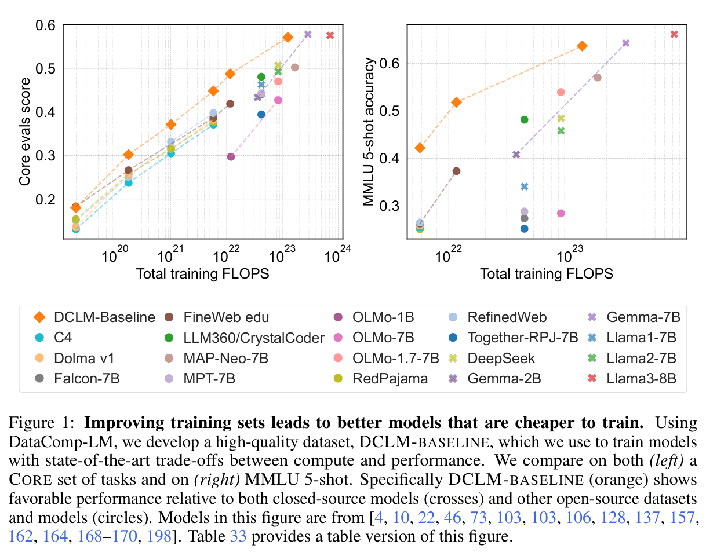
大型训练数据集是近期语言建模（LM）革命取得进展的重要推动因素 [63, 69, 90, 130, 138, 157, 163, 181]。随着训练最先进语言模型的成本不断增加，研究人员不仅越来越关注规模扩展，也越来越关注改进训练数据集，使模型能够在广泛的下游任务上高效泛化。事实上，关于数据筛选、去除（近似）重复、新数据源发现、数据点加权、合成数据生成等方面的方案正不断增加 [2, 8, 75, 94, 97, 102, 119, 186]。
这一新兴研究领域的关键挑战是缺乏受控比较。虽然上述方案通常使用相同的评测数据集，研究人员却经常比较采用不同架构、计算量或超参数训练的模型。因此，哪些数据整理策略效果最好往往并不清楚：训练集 A 的结果优于训练集 B，究竟是因为 A 确实更好，还是因为基于 A 训练的模型采用了更好的架构、学习率调度或更多计算量？厘清影响语言模型质量的众多因素，对于理解哪些数据整理策略最有效、最终构建更好的语言模型至关重要。
除了缺乏标准化基准，训练数据研究还面临另一项挑战：训练集细节越来越少见，即便是 Llama、Mistral 或 Gemma 这样的开放权重模型也是如此 [83, 162, 169]。这些模型的训练集均未公开，相应的模型文档至多只提供各自训练数据的粗略描述，甚至完全不提供。因此，目前尚不清楚最先进的语言模型训练集究竟由哪些要素构成。
为应对这些挑战，我们提出面向语言模型的 DataComp（DCLM），这是首个针对语言模型训练数据整理的大规模基准。在 DCLM 中，研究人员提出新的训练集和数据整理算法，然后在自己的数据上，使用固定的训练方案训练语言模型，以评估数据集。（接下页）
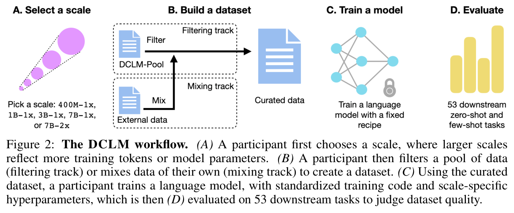
接上页：通过测量所得到模型在下游任务上的表现，研究人员可以量化相应训练集的优势与不足。
为实现 DCLM，我们提供了一个全面的实验试验平台。其中一个关键组成部分是 DCLM-POOL：源自 Common Crawl [45]、包含 240 万亿 token 的语料库。DCLM-POOL 是最大的公开语言模型训练语料库，也是 DCLM 筛选赛道的基石；在该赛道中，参与者力求从 DCLM-POOL 中整理出尽可能好的训练集。此外，我们还提供用于处理大型数据集的开源软件，支持多种筛选方法。
语言模型训练成本很高，因此必须理解训练方案在不同计算量和数据规模下的表现。我们的第三项贡献由此是对数据集设计中的规模扩展趋势进行研究。我们发现，参数量小至 400M 的模型仍能提供信号，说明哪些训练集在更大规模下表现更好。根据实验，我们将 DCLM 分为五种计算规模，从 400M 参数模型到超额训练的 7B 模型，计算量跨度约为 600 倍。这种多规模设计使计算预算不同的研究人员都能参与 DCLM。
作为 DCLM 的起点，我们针对不同训练集和计算规模开展了 416 项基线实验。实验确认，基于模型的筛选是有效数据整理的关键组成部分。我们还表明，筛选模型的细节可能对性能产生很大影响：在 7B 参数规模下（280B 训练 token），MMLU 5-shot [77] 准确率从 35% 到 44% 不等。有趣的是，将一个简单的二元词组分类器与精心挑选的正负样本结合起来，在我们试验的分类器中表现最好。此外，我们发现，人类质量判断在识别高质量训练数据方面的价值有限。
最后，我们将研究结果结合为 DCLM-BASELINE，这是一个新的最先进公开语言模型训练集。使用 DCLM-BASELINE、以 2.6 万亿 token 训练 7B 参数语言模型时，得到的模型在 MMLU 上达到 64%，在开放数据模型中处于最先进水平，并接近 Mistral-7B-v0.3（63%）或 Llama 3 8B（66%）等模型，而这些模型的训练计算量最高为我们的 6.6 倍（Llama 3 8B）。与 Llama 2 7B 相比，使用 DCLM-BASELINE 中的 280B token 训练 7B 参数模型，MMLU 提高 5 个百分点，训练计算量却仅为其 1/7。由于我们的 7B 模型使用标准的仅解码器 Transformer [134, 169, 173]，这些结果也凸显：以系统方法整理数据，是训练高性能语言模型的关键。
我们在 https://datacomp.ai/dclm 公开发布 DCLM 框架、模型和训练集，使其他研究人员能够参与 DCLM，并加强以数据为中心的语言模型研究的实证基础。
本节概述密切相关的工作，附录 B 提供更多相关工作。
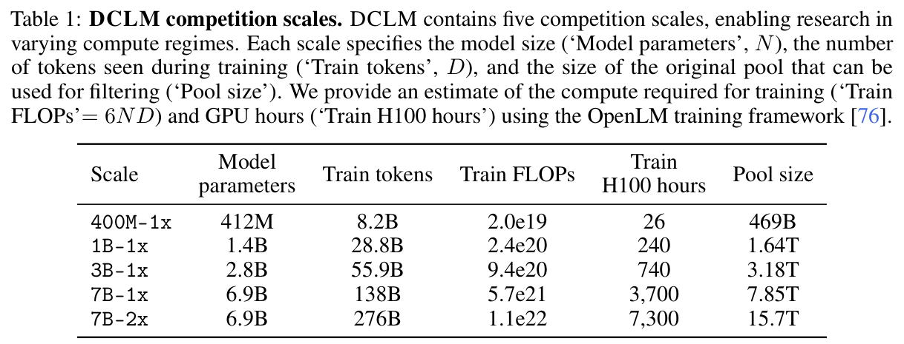
语言模型的数据整理。为了收集用于语言模型训练的大型数据集 [31]，研究人员通常借助网页爬取。然而，爬取结果往往包含大量不需要的内容，必须经过整理才能得到高质量训练数据。多数数据整理工作侧重于提升模型性能的方法 [31, 128, 135, 138, 157, 178]，包括按语言筛选 [47, 92, 138, 189]、基于启发式规则的筛选 [37, 63, 128, 135, 157]、质量筛选 [53, 105, 146, 178, 187]、数据去重 [3, 94] 和混合 [6, 155, 186]。以往工作只考察有限的一组筛选器，而我们开展了规模最大的公开数据整理研究，得到强大的 DCLM-BASELINE 数据集。DCLM 首次发布后，WebOrganizer [180]、Nemotron-CC [159] 和 Olmo-2 [121] 等新工作也建立在我们的基准或整理策略之上，进一步推动 LLM 预训练数据集达到新的最先进水平。
开源数据集。过去几年中，语言模型规模不断增长 [4, 39, 79, 122, 135, 162, 169, 170]，社区也整理了更大的数据集与之匹配。早期工作包括包含 1600 亿（B）token 的 C4 数据集，以及包含 300B token 的 The Pile [63]。近期，RefinedWeb [128] 包含 600B token，Dolma [157] 包含 3 万亿（T）token，FineWeb 包含 15T token [129]，RedPajama-v2 包含 30T token [46]。此外还有大型领域专用数据集，如面向代码、包含 900B token 的 StackV2 [107]，以及高质量筛选子集，如包含 1.3T token 的 FineWeb-Edu [106]。图 1 比较了各种数据集的性能，附录 G 更仔细地考察了 FineWeb 的 LightEval 评测框架。我们发布了迄今最大的原始文本池，包含 240T 个网页爬取 token。我们还发布了从该池中得到、包含 3.8T token 的高质量数据集 DCLM-BASELINE，它能够训练出优于以往数据集的模型。
以数据为中心的基准。以往对数据改进进行基准测试的工作包括数据集蒸馏 [50]、课程学习 [144] 和迁移学习 [5, 32]。在 DataComp [61] 和 DataPerf [112] 中，参与者在固定模型和训练方案的情况下迭代数据集，任务涵盖视觉、视觉语言及语音。对于语言模型，Data-Juicer [36] 提供清洗和混合微调数据的基准；BabyLM 挑战的 Loose 赛道 [175] 则关注高效开发 125M 至 220M 参数语言模型，预训练 token 数为 10M 至 100M。凭借 240T token 的数据池和 7B 模型，DCLM 是规模最大的以数据为中心的语言模型基准。
本节介绍 DCLM 的主要组成部分。首先介绍基准所依托的原始文本语料库 DCLM-POOL（第 3.1 节）。随后介绍图 2 所展示的 DCLM 工作流程：选择竞赛规模（第 3.2 节），通过筛选 DCLM-POOL 并可能混入其他来源整理数据集（第 3.3 节），使用固定超参数训练模型（第 3.4 节），以及评估模型以对数据集评分（第 3.5 节）。
DCLM-POOL 是一个未经筛选的网页文本语料库，由 2023 年之前的全部 Common Crawl [45] 数据组成。根据第 4.2 节的结果，我们使用 resiliparse [20, 21] 从 HTML 重新提取文本，代替使用 Common Crawl 已提取的文本。DCLM-POOL 包含 200B 篇文档（gzip 压缩后为 370TB），产生 240T 个 GPT-NeoX [24] token。更多细节见附录 E。
去污染。测试集样本常常污染语言模型训练集 [52, 55, 190]；然而，这类样本对下游性能的影响仍很不明确 [94, 122, 157]。为了让研究人员更好地理解污染，我们发布去污染工具，而不直接对 DCLM-POOL 去污染。首先，如第 4.6 节所用，我们为 MMLU 和 Hellaswag [78, 195] 这两项热门任务实现了自己的去污染流程。其次，我们提供基于 Lee 等人 [94] 的工具，用于检查数据集与我们所有测试集的重叠情况。我们要求所有提交披露去污染报告，并避免使用高度污染的数据。对于得分最高的提交，我们计划专门评估其污染情况。
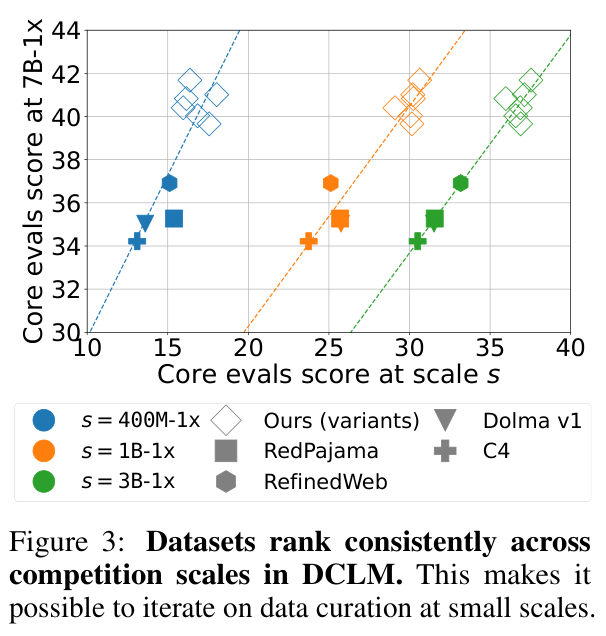
为确保计算资源约束不同的研究人员都能使用 DCLM，并便于研究规模扩展趋势，我们设置了计算量跨越三个数量级的不同竞赛规模（表 1）。每种规模（即 400M-1x、1B-1x、3B-1x、7B-1x 和 7B-2x）都指定模型参数量（例如 7B）和一个 Chinchilla 倍数（例如 1x）。每种规模的训练 token 数等于 20 × 参数量 × Chinchilla 倍数，因此 1x 对应 Hoffmann 等人 [79] 发现的近乎最优计算分配。
我们这种多规模设计的潜在陷阱是：增加计算规模时，数据整理方法的排名可能改变。为了更好地理解这一问题，图 3 将 10 种方法在 7B-1x 规模下的表现，绘制为它们在较小规模下表现的函数。我们发现，较小规模（400M-1x、1B-1x、3B-1x）与较大的 7B-1x 规模之间有很高的排名相关性（Pearson \(r\) 分别为 0.838、0.956、0.982），说明较小规模下更好的整理策略可以迁移到更大规模。更多竞赛规模消融实验见附录 H，其中包括表明数据集改进与训练超参数基本相互独立的实验。
选择规模后，参与者从两条赛道中选择一条。（i）在筛选赛道中，参与者提出从候选数据池中选择训练数据的算法。我们提供五个初始数据池，每个对应表 1 中的一种规模，都是 DCLM-POOL 的随机文档子集。我们根据规模限制初始数据池大小，以鼓励可扩展的筛选策略，并体现现实的数据下载和存储约束。（ii）在混合赛道中，提交可以将 DCLM-POOL 的文档与任意外部来源（即 Common Crawl 以外）的文档结合。例如，参与者可以加入直接从 StackExchange 和 Wikipedia 数据转储整理出来的文档（RPJ [168] 就采用了这种方法），甚至加入自己的定制爬取数据。附录 C 提供了每条赛道更详细的规则，附录 D 介绍了我们用于执行筛选和混合操作的可扩展开源工具。
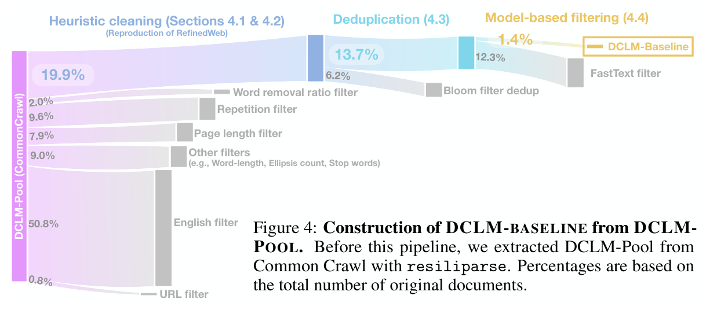
为了隔离数据集干预的效果，我们在每种规模下固定训练方案。根据先前对模型架构和训练的消融研究 [4, 31, 39, 62, 79, 93, 134, 169, 170, 183]，我们采用在 OpenLM [76] 中实现的仅解码器 Transformer（例如 GPT-2、Llama）[134, 169, 173]。我们还提供统一的数据处理工具。附录 F 包含更多训练细节。
我们基于 LLM-Foundry [115] 的完整评测套件包含 53 项适合基础模型评测的下游任务（即不进行微调）：从问答到开放式生成形式，涵盖数学、教科书知识和常识推理等不同领域。为评估数据整理算法，我们主要关注三种性能指标。首先是 MMLU 5-shot 准确率 [78]，该指标广泛用于比较 GPT-4 [122] 和 Llama 3 70B [4] 等最先进模型。其次，我们提出 CORE 中心化准确率，在 22 项任务组成的子集上计算（例如 HellaSwag [195] 和 ARC-E [43]），即使在小规模下也能提供低方差信号；对各项任务的准确率进行线性重缩放，使 0 对应随机猜测、1 对应完全正确。最后，我们报告 EXTENDED 中心化准确率，即全部 53 项任务的中心化性能均值。指标详情见附录 G。
下面我们展示 DCLM 工作流程如何产生高质量数据集，并量化数据整理方法的效果。本节介绍将 Common Crawl 转换为我们数据集 DCLM-BASELINE 的过程，如图 4 所示。我们对各步骤提供消融实验。首先评估开源数据集，作为起点（第 4.1 节）。随后试验数据集构建中几个关键阶段的替代方案：文本提取（第 4.2 节）、去重（第 4.3 节）和基于模型的筛选（第 4.4 节）。之后试验混入高质量来源（第 4.5 节），并提供污染分析（第 4.6 节）。第 5 节进一步扩展这一方法，以 2T token 训练 7B 模型。
我们首先在表 2 中评估几个知名开源数据集（C4 [52, 137]、RefinedWeb [128]、RedPajama [168] 和 Dolma-V1 [157]）。虽然这四个数据集都使用了各种启发式筛选器和数据清洗步骤，但在 7B-1x 规模下，RefinedWeb 在我们的 CORE 和 EXTENDED 指标上表现最好。RefinedWeb 采用以下筛选流程：Common Crawl 文本提取、启发式选择规则（例如去除垃圾内容）以及重复内容去重。（接下页）
接上页：RefinedWeb 的筛选流程已在上一页译完整。
有趣的是，RefinedWeb 完全由 Common Crawl 筛选而来，而 RedPajama 和 Dolma-V1 还混入了 Wikipedia 等经过整理的“高质量”来源。比较结果说明筛选本身有相对优势，我们将在后续实验中探索这一点。
要点：对于 DCLM-BASELINE 及其他实验，我们采用 RefinedWeb 的启发式筛选器。
文本提取是一个重要的早期处理步骤，用于从原始 HTML 中获取内容。为了理解该步骤的影响，我们比较了三种提取方法：resiliparse、trafilatura（RefinedWeb 使用的工具）以及 Common Crawl 提供、包含预提取文本的 WET 文件。随后，对每种提取结果应用 RefinedWeb 的启发式质量筛选器。表 3 显示，相比 WET 提取结果，resiliparse 和 trafilatura 都使 CORE 至少提高 2.5 个百分点。这一点很重要，因为包括 C4、RedPajama 和 Dolma-V1 在内的大多数开源数据集都使用 WET 文件，这可能部分解释它们在表 2 中表现较差的原因。虽然 resiliparse 和 trafilatura 的下游表现相近，但 resiliparse 的运行速度快 8 倍，因此更适合大规模处理。更多分析见附录 K。
要点：对于 DCLM-POOL 和后续实验，我们使用 resiliparse 提取文本。
网页爬取数据集经常包含大量重复或近似重复的数据字符串。去除重复既能通过减少记忆改善性能 [35, 94]，也能增加数据多样性。对于去重，我们探索了作为后缀数组流水线 [94, 128] 一部分的 MinHash [29]，以及近似重复 Bloom 筛选；后者修改了精确文档与段落去重方案 [157]。我们发现，两种方法的下游表现相近：在 7B-2x 规模下，CORE 相差不超过 0.2 个百分点。不过，我们修改后的 Bloom 筛选器更容易扩展到超过 10TB 的数据集。更多分析见附录 L。
要点：DCLM-BASELINE 使用 Bloom 筛选器，其他实验使用 MinHash。
近期文献 [28, 59, 157] 表明，训练模型作为质量筛选器可以改善下游表现。本节考察不同的基于模型的筛选方法。
比较基于模型的筛选方法。我们比较多种策略：1）PageRank 分数筛选，根据文档被其他文档链接到的可能性保留文档；2）SemDedup，去除信息内容相似的文档 [1]；3）在预训练 BGE 文本 embedding 上拟合线性分类器 [185]；4）AskLLM，通过提示语言模型判断文档是否有帮助 [146]；5）PPL 筛选，按 CCNet [178] 的做法保留低 PPL 序列；6）top-k 平均 logits，将文档中所有词对应的模型 top-k logits 取平均，以衡量正确词是否位于 k 个合理候选之中。（接下页）
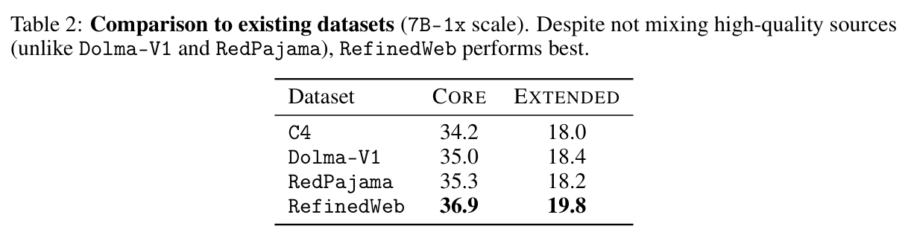
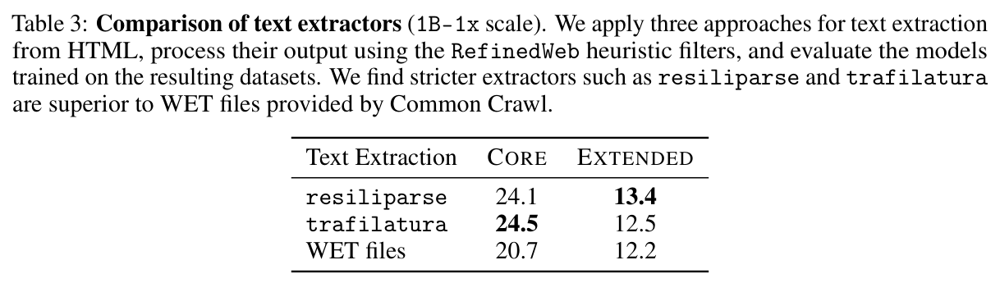
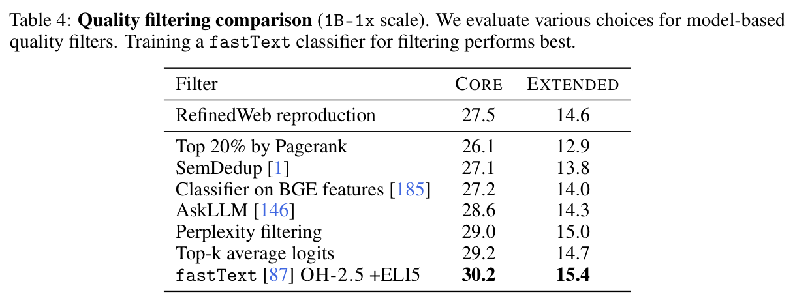
接上页：第 6 种策略的定义已在上一页译完整。
7）使用 fastText [87] 二元分类器区分数据质量。训练分类器时，我们使用约 400k 篇文档，正负类别各占一半。我们试验不同的正例数据，负例数据则固定为从我们复现的一个 RefinedWeb 版本中随机抽样得到的数据。对于 PPL 筛选和 top-k 平均 logits 策略，我们使用一个 154M 参数的因果 Transformer，它在英文 Wikipedia、RedPajama-v1 的书籍子集以及 peS2o [156, 168] 的混合数据上训练（更多实现细节见附录 J）。表 4 比较了上述方法，结果显示基于 fastText 的筛选优于所有其他方法。接下来，我们希望理解不同 fastText 训练方案如何影响其作为数据筛选网络的有效性 [59]。
文本分类器消融。为了更好地理解 fastText 的局限，我们训练了多个变体，探索参考数据（即被赋予正标签的样本）、筛选阈值和特征空间的不同选择，如表 5 和表 14 所示。对于参考数据，我们沿用 GPT-3 [31] 的参考数据选择，考虑了 Wikipedia [63]、OpenWebText2 [63] 和 RedPajama-books [168] 等常用来源。我们还尝试一种新方法，使用指令格式数据，从 OpenHermes 2.5 [165]（OH-2.5）和 Reddit 的 r/ExplainLikeImFive（ELI5）子版块中的高分帖子获取样本。总体而言，在控制其他超参数时，fastText OH-2.5 + ELI5 方法相较更常规的其他选择，使 CORE 提高 3.5 个百分点。一个自然的问题是：用 OH-2.5 数据进行筛选，是否会排除指令微调带来的额外收益？附录 Q 表明不会，这进一步说明该方法的优势，以及它与现代微调范式的兼容性。最后，我们观察到，采用相当严格、只保留前 10% 样本的阈值，比更宽松的前 15% 和前 20% 阈值更有帮助。附录 N 进一步研究数据集筛选中这种不直观的行为，以及它与人类判断的联系。
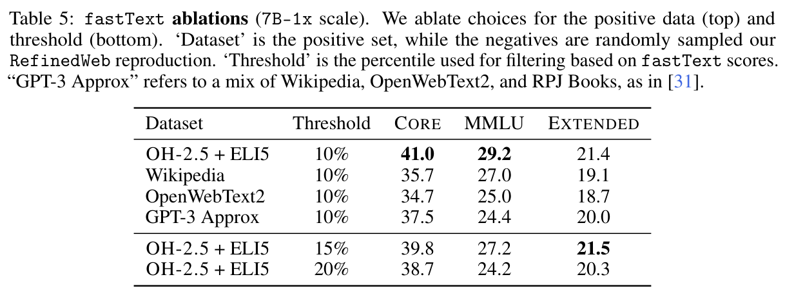
要点：对于 DCLM-BASELINE 及后续实验，我们根据 fastText OH-2.5 + ELI5 分类器分数保留前 10% 的文档。该筛选的结果就是 DCLM-BASELINE。
Common Crawl（CC）常与被视为高质量的其他来源结合 [63, 70, 168, 170]（例如 Wikipedia、StackExchange 和 peS2o [156]）。由于 DCLM 参与者可以在混合赛道中加入额外数据源，我们考察了将高质量来源加入仅由 Common Crawl 得到的训练集的潜在收益。我们比较了在 100% 筛选后 CC 数据上训练的模型，以及按 Llama 1 和 RedPajama 混合比例训练的模型：67% CC，33% 来自 Wikipedia、Books、Stack exchange、arXiv 和 Github。CC 部分采用不同变体：DCLM-BASELINE 的一个子集、RedPajama 的 CC 部分、RefinedWeb 和 C4。表 6 显示，对于表现较弱的 CC 子集（C4、RedPajama-CC 和 RefinedWeb），混合能提升性能。然而，对于 DCLM-BASELINE，混合实际上使平均性能下降，说明在筛选效果良好时，混合可能适得其反。更多混合结果见附录 M。
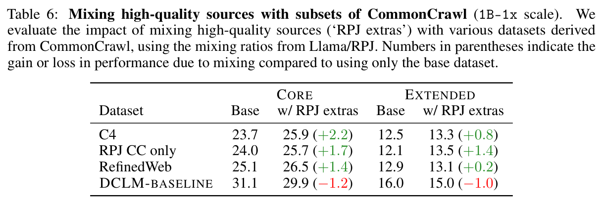
这里我们检查预训练数据被评测数据污染，是否影响 DCLM-BASELINE 的结果。我们选择 MMLU 和 Hellaswag 作为重点评测集，因为它们是 7B 规模语言模型性能的热门衡量指标。
具体而言，我们尝试去除 DCLM-BASELINE 中存在的这两个测试集的样本。对于两者，我们标记包含某个样本问题文本及至少一个对应答案选项的页面。随后，从这些标记页面中去除所有匹配的问题和选项字符串。为了提高 MMLU 的召回率——其中一些问题基于长段落——我们选择只检测每个问题的最后一句，减少因格式差异而漏掉问题的可能性。（接下页）
接上页：MMLU 检测策略的跨页句已在上一页译完整。
根据人工检查，该策略仍产生很多误报。随后，我们使用去除检测到的重叠内容后的 DCLM-BASELINE，训练一个 7B-2x 模型。如表 7 所示，模型性能没有下降，因此我们在这两项任务上的性能收益，不太可能是由于数据集中包含更多测试样本造成的。
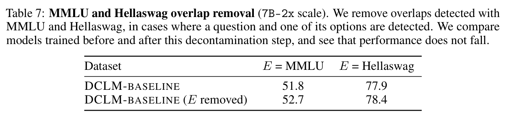
我们还对 Dolma-V1.7 [157] 和 FineWeb-Edu [106] 应用上述 MMLU 去除策略。结果见附录 O 的表 25：DCLM-BASELINE 的污染统计与这些其他高性能数据集大致相近。附录 O 还提供扩展到整个评测套件的进一步分析。
这里我们测试：在 DCLM 基准上表现良好的数据集，是否在计算量增加一个数量级后仍保持优势。为了让训练出来的模型用途广泛，包括数学和代码任务，我们将 3.8T 的 DCLM-BASELINE 与 StarCoder [96] 和 ProofPile2 [14] 数据集结合，得到 4.1T token 的数据集。我们在该数据集上以 2.5T token 训练 7B 模型，超参数与最大竞赛规模相同，唯一例外是分别执行两个冷却阶段：在经过修改的数据分布上，以 200B 和 270B token 进行冷却；该分布包含 70% 采用更严格 fastText 阈值的 DCLM-BASELINE，以及 30% 数学数据集（见附录 Q）。随后，我们对两个独立冷却阶段的模型进行“模型汤”（model soup）融合 [182]。最后，采用 Pouransari 等人 [133] 的持续预训练方法，在相同分布上训练 100B token，将上下文长度从 2048 增加到 8192（见附录 Q.2）。
表 8 显示，我们的模型优于所有在公开训练集上训练的 7B 模型，并接近使用更多 token 训练的封闭数据模型，如 Llama-8B、Mistral-7B 和 Gemma-7B。此外，附录 P 表明，我们的模型具有很强的指令微调（IT）表现。在公开 IT 数据集上进行指令微调后，模型保留了大部分基准性能，并取得 16.6 的 AlpacaEval2.0 长度控制胜率（LC Win-rate），超过 Gemma-Instruct（10.4），并接近表现强劲的 Mistral-v0.2-7B（17.1）和 Llama3-Instruct（22.9）。最后，附录 Q.3 展示了以 DCLM-BASELINE、StarCoder 和 ProofPile2 的混合数据训练 4.3T token 的 1B 模型结果，得到一个强大且小巧的模型，优于此前包括 Gemma-2B 和 Qwen2-1.5B 在内的小模型。
我们介绍了 DCLM 试验平台，并展示它如何产生新的最先进训练集。我们对数据集设计空间的探索只是开始，也有明确局限。受计算资源约束，我们只能单独消融各个设计维度，无法在更大规模测试全部方法，也无法训练超过 7B 参数的模型。我们也未能充分探索不同运行之间的变化。此外，DCLM-BASELINE 有许多我们尚未探索的变体，例如分片去重的替代方案和不同训练方式的筛选模型。大多数实验还只使用一种 tokenizer（GPT-NeoX），其他 tokenizer 可能在多语言任务或数学上表现更好。尽管如此，我们希望本论文能成为进一步开展数据整理研究的起点，推动最先进水平超越 DCLM-BASELINE。
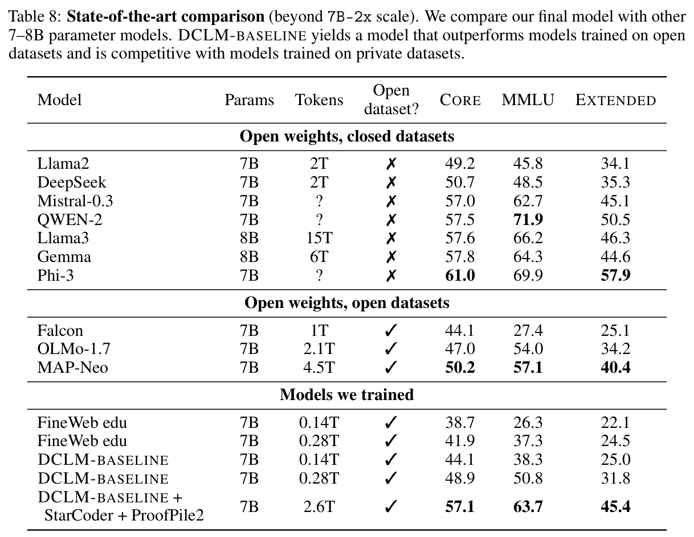
虽然在 DCLM-BASELINE 上训练的模型在常见语言理解任务上具有竞争力，但目前在代码和数学上的表现还不够好。我们认为，这源于首版 DCLM 侧重语言理解，而不是基准或数据集的固有限制。以往工作表明，加入针对代码与数学的特定训练数据和后训练方法，可以显著改善这些领域的模型表现 [14, 96, 177, 197, 202]；将 DCLM-BASELINE 与这些领域专用训练集结合，并扩展 DCLM 以涵盖代码和数学，是有趣的未来方向。公平性、多语言能力和安全性也是扩展 DCLM 的重要维度。我们在附录 S 中提供了一些分析，希望开源试验平台也能加强这些方向上以数据为中心的研究。
我们感谢 Lilith Bat-Leah、Loubna Ben Allal、Samy Bengio、Mia Chiquier、Adrien Gaidon、Lizzy Grant、Tom Gunter、Awni Hannun、Tatsunori Hashimoto、Jonathan Hayase、Mike Lewis、Percy Liang、Ian Magnusson、Yifan Mai、Sewon Min、David Mizrahi、Praveen Paritosh、Guilherme Penedo、Kyle Richardson、Weijia Shi、Karanjeet Singh、Joshua Susskind、Tristan Thrush、Oyvind Tafjord、Carl Vondrick、Alexander Wettig 和 Elle Wohlmuth 在项目各阶段提出的有益反馈。我们也感谢 Mike Garrison 和 Romil Shah 在计算资源和基础设施方面提供帮助。
本研究得到 Allen Institute for AI、Open Philanthropy、Institute for Foundations of Machine Learning（IFML）、AFOSR MURI 项目 FA9550-22-1-0380、Israeli Science Foundation（ISF）项目 2486/21、Singapore AI Visiting Professorship Programme AIVP-2024-001、Alon Fellowship、Adelis foundation、Israeli Council for Higher Education、Onassis Foundation（奖学金编号 F ZS 056-1/2022-2023）、NSF 项目 AF 1901292、CNS 2148141、Tripods CCF 1934932、IFML CCF 2019844，以及 Western Digital、Amazon、WNCG IAP、UT Austin Machine Learning Lab（MLL）、Cisco、Stanly P. Finch Centennial Professorship in Engineering 的研究资助和 NSF Graduate Research Fellowship 的支持。MN 感谢德国 Federal Ministry of Education and Research 通过项目 01IS22094B WestAI - AI Service Center West 提供的资助。
我们衷心感谢 Gauss Centre for Supercomputing e.V. 和 John von Neumann Institute for Computing（NIC）授予的计算预算，用于在 Jülich Supercomputing Centre（JSC）的 JUWELS Booster 和 JURECA 超级计算机上开展计算。
各条补充中文题名；原始书目信息保留以便检索。跨页条目按原页码接续。
[1] SemDedup：通过 SemDedup 实现网络规模的数据高效学习
[1] Amro Abbas, Kushal Tirumala, Dániel Simig, Surya Ganguli, and Ari S Morcos. Semdedup: Data-efficient learning at web-scale through semantic deduplication, 2023. URL https://arxiv.org/abs/2303.09540.
[2] Phi-3 技术报告：手机本地运行的高能力语言模型
[2] Marah Abdin, Sam Ade Jacobs, Ammar Ahmad Awan, Jyoti Aneja, Ahmed Awadallah, Hany Awadalla, Nguyen Bach, Amit Bahree, Arash Bakhtiari, Harkirat Behl, et al. Phi-3 technical report: A highly capable language model locally on your phone. ArXiv preprint, abs/2404.14219, 2024. URL https://arxiv.org/abs/2404.14219.
[3] 用于网页去重的 URL 规范化
[3] Amit Agarwal, Hema Swetha Koppula, Krishna P. Leela, Krishna Prasad Chitrapura, Sachin Garg, Pavan Kumar GM, Chittaranjan Haty, Anirban Roy, and Amit Sasturkar. Url normalization for de-duplication of web pages. In ACM Conference on Information and Knowledge Management, 2009. https://doi.org/10.1145/1645953.1646283.
[4] 介绍 Meta Llama 3：迄今能力最强的公开可用 LLM
[4] Meta AI. Introducing meta llama 3: The most capable openly available llm to date, 2024. https://ai.meta.com/blog/meta-llama-3/.
[5] FETA：开放域对话中少样本任务迁移的基准
[5] Alon Albalak, Yi-Lin Tuan, Pegah Jandaghi, Connor Pryor, Luke Yoffe, Deepak Ramachandran, Lise Getoor, Jay Pujara, and William Yang Wang. FETA: A benchmark for few-sample task transfer in open-domain dialogue. In Proceedings of the 2022 Conference on Empirical Methods in Natural Language Processing, pp. 10936–10953, Abu Dhabi, United Arab Emirates, 2022. Association for Computational Linguistics. URL https://aclanthology.org/2022.emnlp-main.751.
[6] 语言模型预训练的高效在线数据混合
[6] Alon Albalak, Liangming Pan, Colin Raffel, and William Yang Wang. Efficient online data mixing for language model pre-training. ArXiv preprint, abs/2312.02406, 2023. URL https://arxiv.org/abs/2312.02406.
[7] 通过探索与利用辅助数据改善少样本泛化
[7] Alon Albalak, Colin Raffel, and William Yang Wang. Improving few-shot generalization by exploring and exploiting auxiliary data. In Advances in Neural Information Processing Systems (NeurIPS), 2023. https://openreview.net/forum?id=JDnLXc4NOn.
[8] 语言模型数据选择综述
[8] Alon Albalak, Yanai Elazar, Sang Michael Xie, Shayne Longpre, Nathan Lambert, Xinyi Wang, Niklas Muennighoff, Bairu Hou, Liangming Pan, Haewon Jeong, et al. A survey on
首条接第 12 页末尾。
data selection for language models. ArXiv preprint, abs/2402.16827, 2024. URL https://arxiv.org/abs/2402.16827.
[9] SantaCoder：不要好高骛远！
[9] Loubna Ben Allal, Raymond Li, Denis Kocetkov, Chenghao Mou, Christopher Akiki, Carlos Munoz Ferrandis, Niklas Muennighoff, Mayank Mishra, Alex Gu, Manan Dey, et al. Santacoder: don’t reach for the stars! ArXiv preprint, abs/2301.03988, 2023. URL https://arxiv.org/abs/2301.03988.
[10] Falcon 开放语言模型系列
[10] Ebtesam Almazrouei, Hamza Alobeidli, Abdulaziz Alshamsi, Alessandro Cappelli, Ruxandra- Aimée Cojocaru, Daniel Hesslow, Julien Launay, Quentin Malartic, Daniele Mazzotta, Badreddine Noune, Baptiste Pannier, and Guilherme Penedo. The falcon series of open language models. arXiv preprint arXiv:2311.16867, 2023.
[11] MathQA：基于运算形式化的可解释数学应用题求解
[11] Aida Amini, Saadia Gabriel, Shanchuan Lin, Rik Koncel-Kedziorski, Yejin Choi, and Hannaneh Hajishirzi. MathQA: Towards interpretable math word problem solving with operation-based formalisms. In Proceedings of the 2019 Conference of the North American Chapter of the Association for Computational Linguistics: Human Language Technologies, Volume 1 (Long and Short Papers), pp. 2357–2367, Minneapolis, Minnesota, 2019. Association for Computational Linguistics. doi: 10.18653/v1/N19-1245. URL https://aclanthology.org/N19-1245.
[12] 困惑于 PPL：使用小型参考模型进行基于 PPL 的数据裁剪
[12] Zachary Ankner, Cody Blakeney, Kartik Sreenivasan, Max Marion, Matthew L. Leavitt, and Mansheej Paul. Perplexed by perplexity: Perplexity-based data pruning with small reference models. ArXiv preprint, abs/2405.20541, 2024. URL https://arxiv.org/abs/2405.20541.
[13] PyTorch 2：通过动态 Python 字节码转换和图编译加速机器学习
[13] Jason Ansel, Edward Yang, Horace He, Natalia Gimelshein, Animesh Jain, Michael Voznesensky, Bin Bao, David Berard, Geeta Chauhan, Anjali Chourdia, Will Constable, Alban Desmaison, Zachary DeVito, Elias Ellison, Will Feng, Jiong Gong, Michael Gschwind, Brian Hirsh, Sherlock Huang, Laurent Kirsch, Michael Lazos, Yanbo Liang, Jason Liang, Yinghai Lu, CK Luk, Bert Maher, Yunjie Pan, Christian Puhrsch, Matthias Reso, Mark Saroufim, Helen Suk, Michael Suo, Phil Tillet, Eikan Wang, Xiaodong Wang, William Wen, Shunting Zhang, Xu Zhao, Keren Zhou, Richard Zou, Ajit Mathews, Gregory Chanan, Peng Wu, and Soumith Chintala. Pytorch 2: Faster machine learning through dynamic python bytecode transformation and graph compilation. In International Conference on Architectural Support for Programming Languages and Operating Systems (ASPLOS), 2024. https://pytorch.org/blog/pytorch-2-paper-tutorial.
[14] Llemma：面向数学的开放语言模型
[14] Zhangir Azerbayev, Hailey Schoelkopf, Keiran Paster, Marco Dos Santos, Stephen McAleer, Albert Q Jiang, Jia Deng, Stella Biderman, and Sean Welleck. Llemma: An open language model for mathematics. ArXiv preprint, abs/2310.10631, 2023. URL https://arxiv.org/abs/2310.10631.
[15] 层归一化
[15] Jimmy Lei Ba, Jamie Ryan Kiros, and Geoffrey E Hinton. Layer normalization. ArXiv preprint, abs/1607.06450, 2016. URL https://arxiv.org/abs/1607.06450.
[16] 比较坏苹果与好橙子：通过联合偏好优化对齐 LLM
[16] Hritik Bansal, Ashima Suvarna, Gantavya Bhatt, Nanyun Peng, Kai-Wei Chang, and Aditya Grover. Comparing bad apples to good oranges: Aligning large language models via joint preference optimization. arXiv preprint arXiv:2404.00530, 2024.
[17] Trafilatura：用于文本发现和提取的网页抓取库与命令行工具
[17] Adrien Barbaresi. Trafilatura: A web scraping library and command-line tool for text discovery and extraction. In Proceedings of the 59th Annual Meeting of the Association for Computational Linguistics and the 11th International Joint Conference on Natural Language Processing: System Demonstrations, pp. 122–131, Online, 2021. Association for Computational Linguistics. doi: 10.18653/v1/2021.acl-demo.15. URL https://aclanthology.org/2021.acl-demo.15.
[18] 超越模仿游戏：量化并外推语言模型能力
[18] BIG bench authors. Beyond the imitation game: Quantifying and extrapolating the capabilities of language models. In Transactions on Machine Learning Research (TMLR), 2023. https://openreview.net/forum?id=uyTL5Bvosj.
[19] 随机鹦鹉的危险：语言模型会不会太大？
[19] Emily M. Bender, Timnit Gebru, Angelina McMillan-Major, and Shmargaret Shmitchell. On the dangers of stochastic parrots: Can language models be too big? In Proceedings of the 2021 ACM Conference on Fairness, Accountability, and Transparency, 2021.
[20] Elastic ChatNoir：面向 ClueWeb 和 Common Crawl 的搜索引擎
[20] Janek Bevendorff, Benno Stein, Matthias Hagen, and Martin Potthast. Elastic ChatNoir: Search Engine for the ClueWeb and the Common Crawl. In European Conference on Information Retrieval Research (ECIR), 2018. https://github.com/chatnoir-eu/chatnoir-resiliparse.
[21] FastWARC：优化大规模网页存档分析
[21] Janek Bevendorff, Martin Potthast, and Benno Stein. FastWARC: Optimizing Large-Scale Web Archive Analytics. In International Symposium on Open Search Technology (OSSYM), 2021. https://github.com/chatnoir-eu/chatnoir-resiliparse.
[22] DeepSeek LLM：以长期主义扩展开源语言模型
[22] DeepSeek-AI Xiao Bi, Deli Chen, Guanting Chen, Shanhuang Chen, Damai Dai, Chengqi Deng, Honghui Ding, Kai Dong, Qiushi Du, Zhe Fu, Huazuo Gao, Kaige Gao, Wenjun Gao, Ruiqi Ge, Kang Guan, Daya Guo, Jianzhong Guo, Guangbo Hao, Zhewen Hao, Ying He, Wen-Hui Hu, Panpan Huang, Erhang Li, Guowei Li, Jiashi Li, Yao Li, Y. K. Li, Wenfeng Liang, Fangyun Lin, A. X. Liu, Bo Liu, Wen Liu, Xiaodong Liu, Xin Liu, Yiyuan Liu, Haoyu Lu, Shanghao Lu, Fuli Luo, Shirong Ma, Xiaotao Nie, Tian Pei, Yishi Piao, Junjie Qiu, Hui Qu, Tongzheng Ren, Zehui Ren, Chong Ruan, Zhangli Sha, Zhihong Shao, Jun-Mei Song, Xuecheng Su, Jingxiang Sun, Yaofeng Sun, Min Tang, Bing-Li Wang, Peiyi Wang, Shiyu Wang, Yaohui Wang, Yongji Wang, Tong Wu, Yu Wu, Xin Xie, Zhenda Xie, Ziwei Xie, Yi Xiong, Hanwei Xu, Ronald X Xu, Yanhong Xu, Dejian Yang, Yu mei You, Shuiping Yu, Xin yuan Yu, Bo Zhang, Haowei Zhang, Lecong Zhang, Liyue Zhang, Mingchuan Zhang, Minghu Zhang, Wentao Zhang, Yichao Zhang, Chenggang Zhao, Yao Zhao, Shangyan Zhou, Shunfeng Zhou, Qihao Zhu, and Yuheng Zou. Deepseek llm: Scaling open-source language models with longtermism. arXiv preprint arXiv:2401.02954, 2024.
[23] PIQA：用自然语言推理物理常识
[23] Yonatan Bisk, Rowan Zellers, Ronan LeBras, Jianfeng Gao, and Yejin Choi. PIQA: reasoning about physical commonsense in natural language. In The Thirty-Fourth AAAI Conference on Artificial Intelligence, AAAI 2020, The Thirty-Second Innovative Applications of Artificial Intelligence Conference, IAAI 2020, The Tenth AAAI Symposium on Educational Advances in Artificial Intelligence, EAAI 2020, New York, NY, USA, February 7-12, 2020, pp. 7432– 7439. AAAI Press, 2020. URL https://aaai.org/ojs/index.php/AAAI/article/view/6239.
[24] GPT-NeoX-20B：开源自回归语言模型
[24] Sidney Black, Stella Biderman, Eric Hallahan, Quentin Anthony, Leo Gao, Laurence Golding, Horace He, Connor Leahy, Kyle McDonell, Jason Phang, Michael Pieler, Usvsn Sai Prashanth, Shivanshu Purohit, Laria Reynolds, Jonathan Tow, Ben Wang, and Samuel Weinbach. GPT- NeoX-20B: An open-source autoregressive language model. In Proceedings of BigScience Episode #5 – Workshop on Challenges & Perspectives in Creating Large Language Models, pp. 95–136, virtual+Dublin, 2022. Association for Computational Linguistics. doi: 10.18653/ v1/2022.bigscience-1.9. URL https://aclanthology.org/2022.bigscience-1.9.
[25] 允许错误的哈希编码中的空间/时间权衡
[25] Burton H. Bloom. Space/time trade-offs in hash coding with allowable errors. Communications of the ACM, 1970. https://doi.org/10.1145/362686.362692.
[26] 允许错误的哈希编码中的空间/时间权衡
[26] Burton H Bloom. Space/time trade-offs in hash coding with allowable errors. Communications of the ACM, 13(7):422–426, 1970.
[27] 利用真实数据衡量文本分类中非预期偏见的细粒度指标
[27] Daniel Borkan, Lucas Dixon, Jeffrey Sorensen, Nithum Thain, and Lucy Vasserman. Nuanced metrics for measuring unintended bias with real data for text classification. In Companion proceedings of the 2019 world wide web conference, pp. 491–500, 2019.
[28] Color-filter：面向目标语言模型预训练的条件损失下降筛选
[28] David Brandfonbrener, Hanlin Zhang, Andreas Kirsch, Jonathan Richard Schwarz, and Sham M Kakade. Color-filter: Conditional loss reduction filtering for targeted language model pre-training. arXiv preprint, 2024.
[29] 文档的相似性与包含关系
[29] Andrei Z. Broder. On the resemblance and containment of documents. In Compression and Complexity of Sequences, 1997.
[30] 文档的相似性与包含关系
[30] A.Z. Broder. On the resemblance and containment of documents. In Proceedings. Compression and Complexity of SEQUENCES 1997 (Cat. No.97TB100171), pp. 21–29, 1997. doi: 10.1109/ SEQUEN.1997.666900.
[31] 语言模型是少样本学习者
[31] Tom B. Brown, Benjamin Mann, Nick Ryder, Melanie Subbiah, Jared Kaplan, Prafulla Dhariwal, Arvind Neelakantan, Pranav Shyam, Girish Sastry, Amanda Askell, Sandhini Agarwal, Ariel Herbert-Voss, Gretchen Krueger, Tom Henighan, Rewon Child, Aditya Ramesh, Daniel M. Ziegler, Jeffrey Wu, Clemens Winter, Christopher Hesse, Mark Chen, Eric Sigler, Mateusz Litwin, Scott Gray, Benjamin Chess, Jack Clark, Christopher Berner, Sam McCandlish, Alec Radford, Ilya Sutskever, and Dario Amodei. Language models are few-shot learners. In Hugo Larochelle, Marc’Aurelio Ranzato, Raia Hadsell, Maria-Florina Balcan, and Hsuan-Tien Lin (eds.), Advances in Neural Information Processing Systems 33: Annual Conference on Neural Information Processing Systems 2020, NeurIPS 2020, December 6-12, 2020, virtual, 2020. URL https://proceedings.neurips.cc/paper/2020/hash/1457c0d6bfcb4967418bfb8ac142f64a-Abstract.html.
[32] IGLUE：跨模态、任务和语言迁移学习基准
[32] Emanuele Bugliarello, Fangyu Liu, Jonas Pfeiffer, Siva Reddy, Desmond Elliott, Edoardo Maria Ponti, and Ivan Vulic. IGLUE: A benchmark for transfer learning across modalities, tasks, and languages. In Kamalika Chaudhuri, Stefanie Jegelka, Le Song, Csaba Szepesvári, Gang Niu, and Sivan Sabato (eds.), International Conference on Machine Learning, ICML 2022, 17-23 July 2022, Baltimore, Maryland, USA, volume 162 of Proceedings of Machine Learning Research, pp. 2370–2392. PMLR, 2022. URL https://proceedings.mlr.press/v162/bugliarello22a.html.
[33] 通过在线偏好优化实现 LLM 的人类对齐
[33] Daniele Calandriello, Daniel Guo, Remi Munos, Mark Rowland, Yunhao Tang, Bernardo Avila Pires, Pierre Harvey Richemond, Charline Le Lan, Michal Valko, Tianqi Liu, et al. Human alignment of large language models through online preference optimisation. arXiv preprint arXiv:2403.08635, 2024.
[34] 从 LLM 提取训练数据
[34] Nicholas Carlini, Florian Tramer, Eric Wallace, Matthew Jagielski, Ariel Herbert-Voss, Katherine Lee, Adam Roberts, Tom Brown, Dawn Song, Ulfar Erlingsson, et al. Extracting training data from large language models. In 30th USENIX Security Symposium (USENIX Security 21), pp. 2633–2650, 2021.
[35] 量化神经语言模型中的记忆
[35] Nicholas Carlini, Daphne Ippolito, Matthew Jagielski, Katherine Lee, Florian Tramer, and Chiyuan Zhang. Quantifying memorization across neural language models, 2023.
[36] Data-Juicer：面向 LLM 的一站式数据处理系统
[36] Daoyuan Chen, Yilun Huang, Zhijian Ma, Hesen Chen, Xuchen Pan, Ce Ge, Dawei Gao, Yuexiang Xie, Zhaoyang Liu, Jinyang Gao, Yaliang Li, Bolin Ding, and Jingren Zhou. Data- juicer: A one-stop data processing system for large language models. In Companion of the 2024 International Conference on Management of Data, SIGMOD/PODS ’24, pp. 120–134, New York, NY, USA, 2024. Association for Computing Machinery. ISBN 9798400704222. doi: 10.1145/3626246.3653385. URL https://doi.org/10.1145/3626246.3653385.
[37] 评估在代码上训练的 LLM
[37] Mark Chen, Jerry Tworek, Heewoo Jun, Qiming Yuan, Henrique Ponde, Jared Kaplan, Harrison Edwards, Yura Burda, Nicholas Joseph, Greg Brockman, Alex Ray, Raul Puri, Gretchen Krueger, Michael Petrov, Heidy Khlaaf, Girish Sastry, Pamela Mishkin, Brooke Chan, Scott Gray, Nick Ryder, Mikhail Pavlov, Alethea Power, Lukasz Kaiser, Mohammad Bavarian, Clemens Winter, Philippe Tillet, Felipe Petroski Such, David W. Cummings, Matthias Plappert, Fotios Chantzis, Elizabeth Barnes, Ariel Herbert-Voss, William H. Guss, Alex Nichol, Igor
首条接第 15 页末尾。
Babuschkin, Suchir Balaji, Shantanu Jain, Andrew Carr, Jan Leike, Joshua Achiam, Vedant Misra, Evan Morikawa, Alec Radford, Matthew M. Knight, Miles Brundage, Mira Murati, Katie Mayer, Peter Welinder, Bob McGrew, Dario Amodei, Sam McCandlish, Ilya Sutskever, and Wojciech Zaremba. Evaluating large language models trained on code. ArXiv preprint, abs/2107.03374, 2021. URL https://arxiv.org/abs/2107.03374.
[38] Skill-it！用于理解和训练语言模型的数据驱动技能框架
[38] Mayee Chen, Nicholas Roberts, Kush Bhatia, Jue WANG, Ce Zhang, Frederic Sala, and Christopher Ré. Skill-it! a data-driven skills framework for understanding and training language models. In A. Oh, T. Neumann, A. Globerson, K. Saenko, M. Hardt, and S. Levine (eds.), Advances in Neural Information Processing Systems, volume 36, pp. 36000–36040. Curran Associates, Inc., 2023. URL https://proceedings.neurips.cc/paper_files/paper/2023/file/70b8505ac79e3e131756f793cd80eb8d-Paper-Conference.pdf.
[39] PaLM：使用 Pathways 扩展语言建模
[39] Aakanksha Chowdhery, Sharan Narang, Jacob Devlin, Maarten Bosma, Gaurav Mishra, Adam Roberts, Paul Barham, Hyung Won Chung, Charles Sutton, Sebastian Gehrmann, Parker Schuh, Kensen Shi, Sasha Tsvyashchenko, Joshua Maynez, Abhishek Rao, Parker Barnes, Yi Tay, Noam M. Shazeer, Vinodkumar Prabhakaran, Emily Reif, Nan Du, Benton C. Hutchinson, Reiner Pope, James Bradbury, Jacob Austin, Michael Isard, Guy Gur-Ari, Pengcheng Yin, Toju Duke, Anselm Levskaya, Sanjay Ghemawat, Sunipa Dev, Henryk Michalewski, Xavier García, Vedant Misra, Kevin Robinson, Liam Fedus, Denny Zhou, Daphne Ippolito, David Luan, Hyeontaek Lim, Barret Zoph, Alexander Spiridonov, Ryan Sepassi, David Dohan, Shivani Agrawal, Mark Omernick, Andrew M. Dai, Thanumalayan Sankaranarayana Pillai, Marie Pellat, Aitor Lewkowycz, Erica Moreira, Rewon Child, Oleksandr Polozov, Katherine Lee, Zongwei Zhou, Xuezhi Wang, Brennan Saeta, Mark Díaz, Orhan Firat, Michele Catasta, Jason Wei, Kathleen S. Meier-Hellstern, Douglas Eck, Jeff Dean, Slav Petrov, and Noah Fiedel. Palm: Scaling language modeling with pathways. In Journal of Machine Learning Research (JMLR), 2022. https://arxiv.org/abs/2204.02311.
[40] 扩展经过指令微调的语言模型
[40] Hyung Won Chung, Le Hou, Shayne Longpre, Barret Zoph, Yi Tay, William Fedus, Yunxuan Li, Xuezhi Wang, Mostafa Dehghani, Siddhartha Brahma, et al. Scaling instruction-finetuned language models. ArXiv preprint, abs/2210.11416, 2022. URL https://arxiv.org/abs/2210.11416.
[41] BoolQ：探索自然的是/否问题令人意外的难度
[41] Christopher Clark, Kenton Lee, Ming-Wei Chang, Tom Kwiatkowski, Michael Collins, and Kristina Toutanova. BoolQ: Exploring the surprising difficulty of natural yes/no questions. In Proceedings of the 2019 Conference of the North American Chapter of the Association for Computational Linguistics: Human Language Technologies, Volume 1 (Long and Short Papers), pp. 2924–2936, Minneapolis, Minnesota, 2019. Association for Computational Linguistics. doi: 10.18653/v1/N19-1300. URL https://aclanthology.org/N19-1300.
[42] “人类”评测并非皆是黄金：评估生成文本的人工评测
[42] Elizabeth Clark, Tal August, Sofia Serrano, Nikita Haduong, Suchin Gururangan, and Noah A. Smith. All that’s ‘human’ is not gold: Evaluating human evaluation of generated text. In Proceedings of the 59th Annual Meeting of the Association for Computational Linguistics and the 11th International Joint Conference on Natural Language Processing (Volume 1: Long Papers), pp. 7282–7296, Online, 2021. Association for Computational Linguistics. doi: 10. 18653/v1/2021.acl-long.565. URL https://aclanthology.org/2021.acl-long.565.
[43] 认为你已解决问答？试试 ARC：AI2 推理挑战
[43] Peter Clark, Isaac Cowhey, Oren Etzioni, Tushar Khot, Ashish Sabharwal, Carissa Schoenick, and Oyvind Tafjord. Think you have solved question answering? try arc, the ai2 reasoning challenge. ArXiv preprint, abs/1803.05457, 2018. URL https://arxiv.org/abs/1803.05457.
[44] 训练验证器求解数学应用题
[44] Karl Cobbe, Vineet Kosaraju, Mohammad Bavarian, Mark Chen, Heewoo Jun, Lukasz Kaiser, Matthias Plappert, Jerry Tworek, Jacob Hilton, Reiichiro Nakano, Christopher Hesse, and John Schulman. Training verifiers to solve math word problems. ArXiv preprint, abs/2110.14168, 2021. URL https://arxiv.org/abs/2110.14168.
[45] Common Crawl
[45] Common Crawl. Common Crawl, 2007. https://commoncrawl.org.
[46] RedPajama：用于训练 LLM 的开放数据集
[46] Together Computer. Redpajama: an open dataset for training large language models, 2023. URL https://github.com/togethercomputer/RedPajama-Data.
[47] 跨语言语言模型预训练
[47] Alexis Conneau and Guillaume Lample. Cross-lingual language model pretraining. In Hanna M. Wallach, Hugo Larochelle, Alina Beygelzimer, Florence d’Alché- Buc, Emily B. Fox, and Roman Garnett (eds.), Advances in Neural Information Processing Systems 32: Annual Conference on Neural Information Processing Systems 2019, NeurIPS 2019, December 8-14, 2019, Vancouver, BC, Canada, pp. 7057–7067, 2019. URL https://proceedings.neurips.cc/paper/2019/hash/c04c19c2c2474dbf5f7ac4372c5b9af1-Abstract.html.
[48] Unicode 标准附录 #29：Unicode 文本分段
[48] The Unicode Consortium. Unicode Standard Annex #29: Unicode Text Segmentation, 2023. URL https://www.unicode.org/reports/tr29/.
[49] UltraFeedback：通过高质量反馈增强语言模型
[49] Ganqu Cui, Lifan Yuan, Ning Ding, Guanming Yao, Wei Zhu, Yuan Ni, Guotong Xie, Zhiyuan Liu, and Maosong Sun. Ultrafeedback: Boosting language models with high-quality feedback, 2023.
[50] DC-BENCH：数据集压缩基准
[50] Justin Cui, Ruochen Wang, Si Si, and Cho-Jui Hsieh. DC-BENCH: Dataset condensation benchmark. In Thirty-sixth Conference on Neural Information Processing Systems Datasets and Benchmarks Track, 2022. URL https://openreview.net/forum?id=Bs8iFQ7AM6.
[51] 将视觉 Transformer 扩展到 220 亿参数
[51] Mostafa Dehghani, Josip Djolonga, Basil Mustafa, Piotr Padlewski, Jonathan Heek, Justin Gilmer, Andreas Peter Steiner, Mathilde Caron, Robert Geirhos, Ibrahim Alabdulmohsin, et al. Scaling vision transformers to 22 billion parameters. In International Conference on Machine Learning (ICML), 2023. https://proceedings.mlr.press/v202/dehghani23a.html.
[52] 记录大型网页文本语料：Colossal Clean Crawled Corpus 案例研究
[52] Jesse Dodge, Maarten Sap, Ana Marasovi´c, William Agnew, Gabriel Ilharco, Dirk Groeneveld, Margaret Mitchell, and Matt Gardner. Documenting large webtext corpora: A case study on the colossal clean crawled corpus. In Proceedings of the 2021 Conference on Empirical Methods in Natural Language Processing, pp. 1286–1305, Online and Punta Cana, Dominican Republic, 2021. Association for Computational Linguistics. doi: 10.18653/v1/2021.emnlp-main.98. URL https://aclanthology.org/2021.emnlp-main.98.
[53] GLaM：利用 MoE 高效扩展语言模型
[53] Nan Du, Yanping Huang, Andrew M. Dai, Simon Tong, Dmitry Lepikhin, Yuanzhong Xu, Maxim Krikun, Yanqi Zhou, Adams Wei Yu, Orhan Firat, Barret Zoph, Liam Fedus, Maarten P. Bosma, Zongwei Zhou, Tao Wang, Yu Emma Wang, Kellie Webster, Marie Pellat, Kevin Robinson, Kathleen S. Meier-Hellstern, Toju Duke, Lucas Dixon, Kun Zhang, Quoc V. Le, Yonghui Wu, Zhifeng Chen, and Claire Cui. Glam: Efficient scaling of language models with mixture-of-experts. In Kamalika Chaudhuri, Stefanie Jegelka, Le Song, Csaba Szepesvári, Gang Niu, and Sivan Sabato (eds.), International Conference on Machine Learning, ICML 2022, 17-23 July 2022, Baltimore, Maryland, USA, volume 162 of Proceedings of Machine Learning Research, pp. 5547–5569. PMLR, 2022. URL https://proceedings.mlr.press/v162/du22c.html.
[54] 长度控制 AlpacaEval：消除自动评测器偏差的简单方法
[54] Yann Dubois, Balázs Galambosi, Percy Liang, and Tatsunori B Hashimoto. Length-controlled alpacaeval: A simple way to debias automatic evaluators. arXiv preprint arXiv:2404.04475, 2024.
[55] 我的大数据中有什么？
[55] Yanai Elazar, Akshita Bhagia, Ian H. Magnusson, Abhilasha Ravichander, Dustin Schwenk, Alane Suhr, Pete Walsh, Dirk Groeneveld, Luca Soldaini, Sameer Singh, Hanna Hajishirzi, Noah A. Smith, and Jesse Dodge. What’s in my big data? ArXiv preprint, abs/2310.20707, 2023. URL https://arxiv.org/abs/2310.20707.
[56] KTO：将模型对齐作为前景理论优化
[56] Kawin Ethayarajh, Winnie Xu, Niklas Muennighoff, Dan Jurafsky, and Douwe Kiela. Kto: Model alignment as prospect theoretic optimization. ArXiv preprint, abs/2402.01306, 2024. URL https://arxiv.org/abs/2402.01306.
[57] Open LLM Leaderboard 到底发生了什么？
[57] Hugging Face. What’s going on with the open llm leaderboard? https://huggingface.co/blog/open-llm-leaderboard-mmlu, 2023.
[58] DoGE：利用泛化估计进行领域重加权
[58] Simin Fan, Matteo Pagliardini, and Martin Jaggi. Doge: Domain reweighting with generalization estimation. ArXiv preprint, abs/2310.15393, 2023. URL https://arxiv.org/abs/2310.15393.
[59] 数据筛选网络
[59] Alex Fang, Albin Madappally Jose, Amit Jain, Ludwig Schmidt, Alexander Toshev, and Vaishaal Shankar. Data filtering networks. ArXiv preprint, abs/2309.17425, 2023. URL https://arxiv.org/abs/2309.17425.
[60] LightEval：轻量级 LLM 评测框架
[60] Clémentine Fourrier, Nathan Habib, Thomas Wolf, and Lewis Tunstall. Lighteval: A lightweight framework for llm evaluation, 2023. URL https://github.com/huggingface/lighteval.
[61] DataComp：寻找下一代多模态数据集
[61] Samir Yitzhak Gadre, Gabriel Ilharco, Alex Fang, Jonathan Hayase, Georgios Smyrnis, Thao Nguyen, Ryan Marten, Mitchell Wortsman, Dhruba Ghosh, Jieyu Zhang, et al. Datacomp: In search of the next generation of multimodal datasets. In Advances in Neural Information Processing Systems (NeurIPS), volume 36, 2024. https://arxiv.org/abs/2304.14108.
[62] 语言模型在超额训练及下游任务上可靠地扩展
[62] Samir Yitzhak Gadre, Georgios Smyrnis, Vaishaal Shankar, Suchin Gururangan, Mitchell Wortsman, Rulin Shao, Jean Mercat, Alex Fang, Jeffrey Li, Sedrick Keh, Rui Xin, Marianna Nezhurina, Igor Vasiljevic, Jenia Jitsev, Alexandros G. Dimakis, Gabriel Ilharco, Shuran Song, Thomas Kollar, Yair Carmon, Achal Dave, Reinhard Heckel, Niklas Muennighoff, and Ludwig Schmidt. Language models scale reliably with over-training and on downstream tasks. ArXiv preprint, abs/2403.08540, 2024. URL https://arxiv.org/abs/2403.08540.
[63] The Pile：用于语言建模的 800GB 多样文本数据集
[63] Leo Gao, Stella Biderman, Sid Black, Laurence Golding, Travis Hoppe, Charles Foster, Jason Phang, Horace He, Anish Thite, Noa Nabeshima, Shawn Presser, and Connor Leahy. The Pile: An 800gb dataset of diverse text for language modeling. ArXiv preprint, abs/2101.00027, 2021. URL https://arxiv.org/abs/2101.00027.
[64] 高效数据混合：语言模型预训练的二变量 scaling laws
[64] Ce Ge, Zhijian Ma, Daoyuan Chen, Yaliang Li, and Bolin Ding. Data mixing made efficient: A bivariate scaling law for language model pretraining. ArXiv preprint, abs/2405.14908, 2024. URL https://arxiv.org/abs/2405.14908.
[65] RealToxicityPrompts：评估语言模型的神经毒性退化
[65] Samuel Gehman, Suchin Gururangan, Maarten Sap, Yejin Choi, and Noah A Smith. Realtoxicityprompts: Evaluating neural toxic degeneration in language models. Findings of the Association for Computational Linguistics: EMNLP 2020, 2020.
[66] 我们在建模任务还是标注者？自然语言理解数据集中的标注者偏差调查
[66] Mor Geva, Yoav Goldberg, and Jonathan Berant. Are we modeling the task or the annotator? an investigation of annotator bias in natural language understanding datasets. In Proceedings of the 2019 Conference on Empirical Methods in Natural Language Processing and the 9th International Joint Conference on Natural Language Processing (EMNLP-IJCNLP), pp. 1161–1166, Hong Kong, China, 2019. Association for Computational Linguistics. doi: 10.18653/v1/D19-1107. URL https://aclanthology.org/D19-1107.
[67] 亚里士多德用过笔记本电脑吗？具有隐式推理策略的问答基准
[67] Mor Geva, Daniel Khashabi, Elad Segal, Tushar Khot, Dan Roth, and Jonathan Berant. Did aristotle use a laptop? a question answering benchmark with implicit reasoning strategies. Transactions of the Association for Computational Linguistics, 9:346–361, 2021. doi: 10. 1162/tacl_a_00370. URL https://aclanthology.org/2021.tacl-1.21.
[68] 由非专家评估摘要系统存在风险
[68] Dan Gillick and Yang Liu. Non-expert evaluation of summarization systems is risky. In Proceedings of the NAACL HLT 2010 Workshop on Creating Speech and Language Data with Amazon’s Mechanical Turk, pp. 148–151, Los Angeles, 2010. Association for Computational Linguistics. URL https://aclanthology.org/W10-0722.
[69] Zamba：紧凑的 7B SSM 混合模型
[69] Paolo Glorioso, Quentin Anthony, Yury Tokpanov, James Whittington, Jonathan Pilault, Adam Ibrahim, and Beren Millidge. Zamba: A compact 7b ssm hybrid model. ArXiv preprint, abs/2405.16712, 2024. URL https://arxiv.org/abs/2405.16712.
[70] OpenWebText 语料库
[70] Aaron Gokaslan, Vanya Cohen, Ellie Pavlick, and Stefanie Tellex. Openwebtext corpus, 2019. http://Skylion007.github.io/OpenWebTextCorpus.
[71] 为 157 种语言学习词向量
[71] Edouard Grave, Piotr Bojanowski, Prakhar Gupta, Armand Joulin, and Tomas Mikolov. Learning word vectors for 157 languages. In Proceedings of the Eleventh International Conference on Language Resources and Evaluation (LREC 2018), Miyazaki, Japan, 2018. European Language Resources Association (ELRA). URL https://aclanthology.org/L18-1550.
[72] Big Friendly Filter
[72] Dirk Groeneveld. The big friendly filter. https://github.com/allenai/bff, 2023.
[73] OLMo：加速语言模型科学研究
[73] Dirk Groeneveld, Iz Beltagy, Pete Walsh, Akshita Bhagia, Rodney Kinney, Oyvind Tafjord, Ananya Harsh Jha, Hamish Ivison, Ian Magnusson, Yizhong Wang, et al. Olmo: Accelerating the science of language models. ArXiv preprint, abs/2402.00838, 2024. URL https://arxiv.org/abs/2402.00838.
[74] Mamba：通过选择性状态空间实现线性时间序列建模
[74] Albert Gu and Tri Dao. Mamba: Linear-time sequence modeling with selective state spaces. ArXiv preprint, abs/2312.00752, 2023. URL https://arxiv.org/abs/2312.00752.
[75] 教科书就是你需要的一切
[75] Suriya Gunasekar, Yi Zhang, Jyoti Aneja, Caio Cesar, Teodoro Mendes, Allie Del Giorno, Sivakanth Gopi, Mojan Javaheripi, Piero Kauffmann, Gustavo de Rosa, Olli Saarikivi, Adil Salim, Shital Shah, Harkirat Singh Behl, Xin Wang, Sébastien Bubeck, Ronen Eldan, Adam Tauman Kalai, Yin Tat Lee, and Yuanzhi Li. Textbooks are all you need. Preprint, 2023. https://www.microsoft.com/en-us/research/publication/textbooks-are-all-you-need.
[76] OpenLM：精简而高性能的语言建模（LM）仓库
[76] Suchin Gururangan, Mitchell Wortsman, Samir Yitzhak Gadre, Achal Dave, Maciej Kilian, Weijia Shi, Jean Mercat, Georgios Smyrnis, Gabriel Ilharco, Matt Jordan, Reinhard Heckel, Alex Dimakis, Ali Farhadi, Vaishaal Shankar, and Ludwig Schmidt. OpenLM: a minimal but performative language modeling (lm) repository, 2023. https://github.com/mlfoundations/open_lm.
[77] 衡量大规模多任务语言理解
[77] Dan Hendrycks, Collin Burns, Steven Basart, Andy Zou, Mantas Mazeika, Dawn Song, and Jacob Steinhardt. Measuring massive multitask language understanding. In 9th International Conference on Learning Representations, ICLR 2021, Virtual Event, Austria, May 3-7, 2021. OpenReview.net, 2021. URL https://openreview.net/forum?id=d7KBjmI3GmQ.
[78] 衡量大规模多任务语言理解
[78] Dan Hendrycks, Collin Burns, Steven Basart, Andy Zou, Mantas Mazeika, Dawn Song, and Jacob Steinhardt. Measuring massive multitask language understanding. In 9th International Conference on Learning Representations, ICLR 2021, Virtual Event, Austria, May 3-7, 2021. OpenReview.net, 2021. URL https://openreview.net/forum?id=d7KBjmI3GmQ.
[79] 训练计算最优的 LLM
[79] Jordan Hoffmann, Sebastian Borgeaud, Arthur Mensch, Elena Buchatskaya, Trevor Cai, Eliza Rutherford, Diego de Las Casas, Lisa Anne Hendricks, Johannes Welbl, Aidan Clark, et al. Training compute-optimal large language models. In Advances in Neural Information Processing Systems (NeurIPS), 2022. https://arxiv.org/abs/2203.15556.
[80] MiniCPM：通过可扩展训练策略揭示小语言模型的潜力
[80] Shengding Hu, Yuge Tu, Xu Han, Chaoqun He, Ganqu Cui, Xiang Long, Zhi Zheng, Yewei Fang, Yuxiang Huang, Weilin Zhao, Xinrong Zhang, Zheng Leng Thai, Kaihuo Zhang, Chongyi Wang, Yuan Yao, Chenyang Zhao, Jie Zhou, Jie Cai, Zhongwu Zhai, Ning Ding, Chao Jia, Guoyang Zeng, Dahai Li, Zhiyuan Liu, and Maosong Sun. Minicpm: Unveiling the potential of small language models with scalable training strategies, 2024.
[81] 持续预训练 LLM 的简单可扩展策略
[81] Adam Ibrahim, Benjamin Thérien, Kshitij Gupta, Mats L Richter, Quentin Anthony, Timothée Lesort, Eugene Belilovsky, and Irina Rish. Simple and scalable strategies to continually pre-train large language models. arXiv preprint arXiv:2403.08763, 2024.
[82] 变化气候中的骆驼：用 Tulu 2 增强语言模型适配
[82] Hamish Ivison, Yizhong Wang, Valentina Pyatkin, Nathan Lambert, Matthew Peters, Pradeep Dasigi, Joel Jang, David Wadden, Noah A Smith, Iz Beltagy, et al. Camels in a changing climate: Enhancing lm adaptation with tulu 2. arXiv preprint arXiv:2311.10702, 2023.
[83] Mistral 7B
[83] Albert Q. Jiang, Alexandre Sablayrolles, Arthur Mensch, Chris Bamford, Devendra Singh Chaplot, Florian Bressand Diego de las Casas, Gianna Lengyel, Guillaume Lample, Lucile Saulnier, Lélio Renard Lavaud, Marie-Anne Lachaux, Pierre Stock, Teven Le Scao, Thibaut Lavril, Thomas Wang, Timothée Lacroix, and William El Sayed. Mistral 7b. ArXiv preprint, abs/2310.06825, 2023. URL https://arxiv.org/abs/2310.06825.
[84] PubMedQA：生物医学研究问答数据集
[84] Qiao Jin, Bhuwan Dhingra, Zhengping Liu, William Cohen, and Xinghua Lu. PubMedQA: A dataset for biomedical research question answering. In Proceedings of the 2019 Conference on Empirical Methods in Natural Language Processing and the 9th International Joint Conference on Natural Language Processing (EMNLP-IJCNLP), pp. 2567–2577, Hong Kong, China, 2019. Association for Computational Linguistics. doi: 10.18653/v1/D19-1259. URL https://aclanthology.org/D19-1259.
[85] 使用 GPU 进行十亿规模相似性搜索
[85] Jeff Johnson, Matthijs Douze, and Hervé Jégou. Billion-scale similarity search with GPUs. ArXiv preprint, abs/1702.08734, 2017. URL https://arxiv.org/abs/1702.08734.
[86] TriviaQA：用于阅读理解的大规模远程监督挑战数据集
[86] Mandar Joshi, Eunsol Choi, Daniel Weld, and Luke Zettlemoyer. TriviaQA: A large scale distantly supervised challenge dataset for reading comprehension. In Proceedings of the 55th Annual Meeting of the Association for Computational Linguistics (Volume 1: Long Papers), pp. 1601–1611, Vancouver, Canada, 2017. Association for Computational Linguistics. doi: 10.18653/v1/P17-1147. URL https://aclanthology.org/P17-1147.
[87] 高效文本分类的技巧集
[87] Armand Joulin, Edouard Grave, Piotr Bojanowski, and Tomas Mikolov. Bag of tricks for efficient text classification. In Proceedings of the 15th Conference of the European Chapter of the Association for Computational Linguistics: Volume 2, Short Papers, pp. 427–431, Valencia, Spain, 2017. Association for Computational Linguistics. URL https://aclanthology.org/E17-2068.
[88] 面向数据高效语言模型的 MiniPile 挑战
[88] Jean Kaddour. The minipile challenge for data-efficient language models. ArXiv preprint, abs/2304.08442, 2023. URL https://arxiv.org/abs/2304.08442.
[89] 200,000 多道 Jeopardy! 问题 — kaggle.com
[89] kaggle200000Jeopardy. 200,000+ Jeopardy! Questions — kaggle.com. https://www.kaggle.com/datasets/tunguz/200000-jeopardy-questions, 2019.
[90] 神经语言模型的 scaling laws
[90] Jared Kaplan, Sam McCandlish, Tom Henighan, Tom B Brown, Benjamin Chess, Rewon Child, Scott Gray, Alec Radford, Jeffrey Wu, and Dario Amodei. Scaling laws for neural language models. ArXiv preprint, abs/2001.08361, 2020. URL https://arxiv.org/abs/2001.08361.
[91] Adam：一种随机优化方法
[91] Diederik P. Kingma and Jimmy Ba. Adam: A method for stochastic optimization. In Yoshua Bengio and Yann LeCun (eds.), 3rd International Conference on Learning Representations, ICLR 2015, San Diego, CA, USA, May 7-9, 2015, Conference Track Proceedings, 2015. URL http://arxiv.org/abs/1412.6980.
[92] BigScience ROOTS 语料：1.6TB 复合多语言数据集
[92] Hugo Laurençon, Lucile Saulnier, Thomas Wang, Christopher Akiki, Albert Villanova del Moral, Teven Le Scao, Leandro Von Werra, Chenghao Mou, Eduardo González Ponferrada, Huu Nguyen, Jörg Frohberg, Mario Šaško, Quentin Lhoest, Angelina McMillan-Major, Gerard Dupont, Stella Biderman, Anna Rogers, Loubna Ben allal, Francesco De Toni, Giada Pistilli, Olivier Nguyen, Somaieh Nikpoor, Maraim Masoud, Pierre Colombo, Javier de la Rosa, Paulo Villegas, Tristan Thrush, Shayne Longpre, Sebastian Nagel, Leon Weber, Manuel
首条接第 20 页末尾。
Muñoz, Jian Zhu, Daniel Van Strien, Zaid Alyafeai, Khalid Almubarak, Minh Chien Vu, Itziar Gonzalez-Dios, Aitor Soroa, Kyle Lo, Manan Dey, Pedro Ortiz Suarez, Aaron Gokaslan, Shamik Bose, David Adelani, Long Phan, Hieu Tran, Ian Yu, Suhas Pai, Jenny Chim, Violette Lepercq, Suzana Ilic, Margaret Mitchell, Sasha Alexandra Luccioni, and Yacine Jernite. The bigscience roots corpus: A 1.6tb composite multilingual dataset. In S. Koyejo, S. Mohamed, A. Agarwal, D. Belgrave, K. Cho, and A. Oh (eds.), Advances in Neural Information Processing Systems, volume 35, pp. 31809–31826. Curran Associates, Inc., 2022. URL https://proceedings.neurips.cc/paper_files/paper/2022/file/ce9e92e3de2372a4b93353eb7f3dc0bd-Paper-Datasets_and_Benchmarks.pdf.
[93] 若有一百万 GPU 小时，该训练什么语言模型？
[93] Teven Le Scao, Thomas Wang, Daniel Hesslow, Stas Bekman, M Saiful Bari, Stella Biderman, Hady Elsahar, Niklas Muennighoff, Jason Phang, Ofir Press, Colin Raffel, Victor Sanh, Sheng Shen, Lintang Sutawika, Jaesung Tae, Zheng Xin Yong, Julien Launay, and Iz Beltagy. What language model to train if you have one million GPU hours? In Findings of the Association for Computational Linguistics: EMNLP 2022, pp. 765–782, Abu Dhabi, United Arab Emirates, 2022. Association for Computational Linguistics. URL https://aclanthology.org/2022.findings-emnlp.54.
[94] 训练数据去重使语言模型更好
[94] Katherine Lee, Daphne Ippolito, Andrew Nystrom, Chiyuan Zhang, Douglas Eck, Chris Callison-Burch, and Nicholas Carlini. Deduplicating training data makes language models better. In Proceedings of the 60th Annual Meeting of the Association for Computational Linguistics (Volume 1: Long Papers), pp. 8424–8445, Dublin, Ireland, 2022. Association for Computational Linguistics. doi: 10.18653/v1/2022.acl-long.577. URL https://aclanthology.org/2022.acl-long.577.
[95] Winograd Schema Challenge
[95] Hector Levesque, Ernest Davis, and Leora Morgenstern. The winograd schema challenge. In International conference on the principles of knowledge representation and reasoning, 2012. https://aaai.org/papers/59-4492-the-winograd-schema-challenge.
[96] StarCoder：愿源码与你同在！
[96] Raymond Li, Loubna Ben Allal, Yangtian Zi, Niklas Muennighoff, Denis Kocetkov, Chenghao Mou, Marc Marone, Christopher Akiki, Jia Li, Jenny Chim, et al. Starcoder: may the source be with you! ArXiv preprint, abs/2305.06161, 2023. URL https://arxiv.org/abs/2305.06161.
[97] 教科书就是你需要的一切 II：Phi-1.5 技术报告
[97] Yuanzhi Li, Sébastien Bubeck, Ronen Eldan, Allie Del Giorno, Suriya Gunasekar, and Yin Tat Lee. Textbooks are all you need ii: phi-1.5 technical report. ArXiv preprint, abs/2309.05463, 2023. URL https://arxiv.org/abs/2309.05463.
[98] RHO-1：并非所有 token 都是你需要的
[98] Zhenghao Lin, Zhibin Gou, Yeyun Gong, Xiao Liu, Yelong Shen, Ruochen Xu, Chen Lin, Yujiu Yang, Jian Jiao, Nan Duan, and Weizhu Chen. Rho-1: Not all tokens are what you need. ArXiv preprint, abs/2404.07965, 2024. URL https://arxiv.org/abs/2404.07965.
[99] 通过生成推理依据进行程序归纳：学习求解并解释代数应用题
[99] Wang Ling, Dani Yogatama, Chris Dyer, and Phil Blunsom. Program induction by rationale generation: Learning to solve and explain algebraic word problems. In Proceedings of the 55th Annual Meeting of the Association for Computational Linguistics (Volume 1: Long Papers), pp. 158–167, Vancouver, Canada, 2017. Association for Computational Linguistics. doi: 10.18653/v1/P17-1015. URL https://aclanthology.org/P17-1015.
[100] LogiQA：具有逻辑推理的机器阅读理解挑战数据集
[100] Jian Liu, Leyang Cui, Hanmeng Liu, Dandan Huang, Yile Wang, and Yue Zhang. Logiqa: A challenge dataset for machine reading comprehension with logical reasoning. In Christian Bessiere (ed.), Proceedings of the Twenty-Ninth International Joint Conference on Artificial Intelligence, IJCAI 2020, pp. 3622–3628. ijcai.org, 2020. doi: 10.24963/ijcai.2020/501. URL https://doi.org/10.24963/ijcai.2020/501.
[101] 迷失在中间：语言模型如何使用长上下文
[101] Nelson F Liu, Kevin Lin, John Hewitt, Ashwin Paranjape, Michele Bevilacqua, Fabio Petroni, and Percy Liang. Lost in the middle: How language models use long contexts. Transactions of the Association for Computational Linguistics, 12:157–173, 2024. URL https://arxiv.org/abs/2307.03172.
[102] 语言模型合成数据的最佳实践与经验教训
[102] Ruibo Liu, Jerry Wei, Fangyu Liu, Chenglei Si, Yanzhe Zhang, Jinmeng Rao, Steven Zheng, Daiyi Peng, Diyi Yang, Denny Zhou, et al. Best practices and lessons learned on synthetic data for language models. ArXiv preprint, abs/2404.07503, 2024. URL https://arxiv.org/abs/2404.07503.
[103] LLM360：迈向完全透明的开源 LLM
[103] Zhengzhong Liu, Aurick Qiao, Willie Neiswanger, Hongyi Wang, Bowen Tan, Tianhua Tao, Junbo Li, Yuqi Wang, Suqi Sun, Omkar Pangarkar, Richard Fan, Yi Gu, Victor Miller, Yonghao Zhuang, Guowei He, Haonan Li, Fajri Koto, Liping Tang, Nikhil Ranjan, Zhiqiang Shen, Xuguang Ren, Roberto Iriondo, Cun Mu, Zhiting Hu, Mark Schulze, Preslav Nakov, Tim Baldwin, and Eric P. Xing. Llm360: Towards fully transparent open-source llms, 2023.
[104] 数据来源倡议：大规模审计 AI 数据集许可与署名
[104] Shayne Longpre, Robert Mahari, Anthony Chen, Naana Obeng-Marnu, Damien Sileo, William Brannon, Niklas Muennighoff, Nathan Khazam, Jad Kabbara, Kartik Perisetla, et al. The data provenance initiative: A large scale audit of dataset licensing & attribution in ai. ArXiv preprint, abs/2310.16787, 2023. URL https://arxiv.org/abs/2310.16787.
[105] 预训练者的训练数据指南：衡量数据年龄、领域覆盖、质量与毒性的效果
[105] Shayne Longpre, Gregory Yauney, Emily Reif, Katherine Lee, Adam Roberts, Barret Zoph, Denny Zhou, Jason Wei, Kevin Robinson, David Mimno, and Daphne Ippolito. A pretrainer’s guide to training data: Measuring the effects of data age, domain coverage, quality, & toxicity. ArXiv preprint, abs/2305.13169, 2023. URL https://arxiv.org/abs/2305.13169.
[106] FineWeb-Edu
[106] Anton Lozhkov, Loubna Ben Allal, Leandro von Werra, and Thomas Wolf. Fineweb-edu, 2024. URL https://huggingface.co/datasets/HuggingFaceFW/fineweb-edu.
[107] StarCoder 2 与 The Stack v2：下一代
[107] Anton Lozhkov, Raymond Li, Loubna Ben Allal, Federico Cassano, Joel Lamy-Poirier, Nouamane Tazi, Ao Tang, Dmytro Pykhtar, Jiawei Liu, Yuxiang Wei, Tianyang Liu, Max Tian, Denis Kocetkov, Arthur Zucker, Younes Belkada, Zijian Wang, Qian Liu, Dmitry Abulkhanov, Indraneil Paul, Zhuang Li, Wen-Ding Li, Megan Risdal, Jia Li, Jian Zhu, Terry Yue Zhuo, Evgenii Zheltonozhskii, Nii Osae Osae Dade, Wenhao Yu, Lucas Krauß, Naman Jain, Yixuan Su, Xuanli He, Manan Dey, Edoardo Abati, Yekun Chai, Niklas Muennighoff, Xiangru Tang, Muhtasham Oblokulov, Christopher Akiki, Marc Marone, Chenghao Mou, Mayank Mishra, Alex Gu, Binyuan Hui, Tri Dao, Armel Zebaze, Olivier Dehaene, Nicolas Patry, Canwen Xu, Julian McAuley, Han Hu, Torsten Scholak, Sebastien Paquet, Jennifer Robinson, Carolyn Jane Anderson, Nicolas Chapados, Mostofa Patwary, Nima Tajbakhsh, Yacine Jernite, Carlos Muñoz Ferrandis, Lingming Zhang, Sean Hughes, Thomas Wolf, Arjun Guha, Leandro von Werra, and Harm de Vries. Starcoder 2 and the stack v2: The next generation. ArXiv preprint, abs/2402.19173, 2024. URL https://arxiv.org/abs/2402.19173.
[108] 盒子里有什么？Common Crawl 语料中不需要内容的分析
[108] Alexandra Sasha Luccioni and Joseph D. Viviano. What’s in the box? an analysis of undesirable content in the common crawl corpus. In Proceedings of the Annual Meeting of the Association for Computational Linguistics, 2021. URL https://api.semanticscholar.org/CorpusID:233864521.
[109] FinGPT：面向小语种的大型生成模型
[109] Risto Luukkonen, Ville Komulainen, Jouni Luoma, Anni Eskelinen, Jenna Kanerva, Hanna- Mari Kupari, Filip Ginter, Veronika Laippala, Niklas Muennighoff, Aleksandra Piktus, Thomas Wang, Nouamane Tazi, Teven Scao, Thomas Wolf, Osma Suominen, Samuli Sairanen, Mikko Merioksa, Jyrki Heinonen, Aija Vahtola, Samuel Antao, and Sampo Pyysalo. FinGPT: Large generative models for a small language. In Houda Bouamor, Juan Pino, and Kalika Bali (eds.), Proceedings of the 2023 Conference on Empirical Methods in Natural Language Processing, pp. 2710–2726, Singapore, 2023. Association for Computational Linguistics. doi: 10.18653/v1/2023.emnlp-main.164. URL https://aclanthology.org/2023.emnlp-main.164.
[110] 改写网络：计算与数据高效语言建模的方案
[110] Pratyush Maini, Skyler Seto, He Bai, David Grangier, Yizhe Zhang, and Navdeep Jaitly. Rephrasing the web: A recipe for compute and data-efficient language modeling. ArXiv preprint, abs/2401.16380, 2024. URL https://arxiv.org/abs/2401.16380.
[111] 后缀数组：在线字符串搜索的新方法
[111] Udi Manber and Gene Myers. Suffix arrays: a new method for on-line string searches. siam Journal on Computing, 22(5):935–948, 1993.
[112] DataPerf：以数据为中心的 AI 开发基准
[112] Mark Mazumder, Colby Banbury, Xiaozhe Yao, Bojan Karlaš, William Gaviria Rojas, Sudnya Diamos, Greg Diamos, Lynn He, Douwe Kiela, David Jurado, David Kanter, Rafael Mosquera, Juan Ciro, Lora Aroyo, Bilge Acun, Sabri Eyuboglu, Amirata Ghorbani, Emmett Goodman, Tariq Kane, Christine R. Kirkpatrick, Tzu-Sheng Kuo, Jonas Mueller, Tristan Thrush, Joaquin Vanschoren, Margaret Warren, Adina Williams, Serena Yeung, Newsha Ardalani, Praveen Paritosh, Ce Zhang, James Zou, Carole-Jean Wu, Cody Coleman, Andrew Ng, Peter Mattson, and Vijay Janapa Reddi. Dataperf: Benchmarks for data-centric ai development. ArXiv preprint, abs/2207.10062, 2022. URL https://arxiv.org/abs/2207.10062.
[113] SimPO：使用无参考奖励的简单偏好优化
[113] Yu Meng, Mengzhou Xia, and Danqi Chen. Simpo: Simple preference optimization with a reference-free reward. arXiv preprint arXiv:2405.14734, 2024.
[114] 盔甲能导电吗？用于开卷问答的新数据集
[114] Todor Mihaylov, Peter Clark, Tushar Khot, and Ashish Sabharwal. Can a suit of armor conduct electricity? a new dataset for open book question answering. In Proceedings of the 2018 Conference on Empirical Methods in Natural Language Processing, pp. 2381–2391, Brussels, Belgium, 2018. Association for Computational Linguistics. doi: 10.18653/v1/D18-1260. URL https://aclanthology.org/D18-1260.
[115] LLM 评测分数
[115] MosaicML. Llm evaluation scores, 2023. https://www.mosaicml.com/llm-evaluation.
[116] llm-foundry/scripts/eval/local_data/EVAL_GAUNTLET.md（main 分支）· mosaicml/llm-foundry — github.com
[116] MosaicML. llm-foundry/scripts/eval/local_data/EVAL_GAUNTLET.md at main · mosaicml/llm-foundry — github.com. https://github.com/mosaicml/llm-foundry/blob/main/scripts/eval/local_data/EVAL_GAUNTLET.md, 2023.
[117] 通过多任务微调实现跨语言泛化
[117] Niklas Muennighoff, Thomas Wang, Lintang Sutawika, Adam Roberts, Stella Biderman, Teven Le Scao, M Saiful Bari, Sheng Shen, Zheng-Xin Yong, Hailey Schoelkopf, et al. Crosslingual generalization through multitask finetuning. In Annual Meeting of the Association for Computational Linguistics (ACL), 2022. https://aclanthology.org/2023.acl-long.891.
[118] OctoPack：代码 LLM 的指令微调
[118] Niklas Muennighoff, Qian Liu, Armel Zebaze, Qinkai Zheng, Binyuan Hui, Terry Yue Zhuo, Swayam Singh, Xiangru Tang, Leandro Von Werra, and Shayne Longpre. Octopack: Instruction tuning code large language models. ArXiv preprint, abs/2308.07124, 2023. URL https://arxiv.org/abs/2308.07124.
[119] 扩展受数据约束的语言模型
[119] Niklas Muennighoff, Alexander M Rush, Boaz Barak, Teven Le Scao, Aleksandra Piktus, Nouamane Tazi, Sampo Pyysalo, Thomas Wolf, and Colin Raffel. Scaling data-constrained language models. In Advances in Neural Information Processing Systems (NeuIPS), 2023. https://arxiv.org/abs/2305.16264.
[120] 生成式表征指令微调
[120] Niklas Muennighoff, Hongjin Su, Liang Wang, Nan Yang, Furu Wei, Tao Yu, Amanpreet Singh, and Douwe Kiela. Generative representational instruction tuning. ArXiv preprint, abs/2402.09906, 2024. URL https://arxiv.org/abs/2402.09906.
[121] 2 OLMo 2 Furious
[121] Team OLMo, Pete Walsh, Luca Soldaini, Dirk Groeneveld, Kyle Lo, Shane Arora, Akshita Bhagia, Yuling Gu, Shengyi Huang, Matt Jordan, Nathan Lambert, Dustin Schwenk, Oyvind Tafjord, Taira Anderson, David Atkinson, Faeze Brahman, Christopher Clark, Pradeep Dasigi, Nouha Dziri, Michal Guerquin, Hamish Ivison, Pang Wei Koh, Jiacheng Liu, Saumya Malik, William Merrill, Lester James V. Miranda, Jacob Morrison, Tyler Murray, Crystal Nam, Valentina Pyatkin, Aman Rangapur, Michael Schmitz, Sam Skjonsberg, David Wadden, Christopher Wilhelm, Michael Wilson, Luke Zettlemoyer, Ali Farhadi, Noah A. Smith, and Hannaneh Hajishirzi. 2 olmo 2 furious. arXiv preprint arXiv:2501.00656, 2025.
[122] GPT-4 技术报告
[122] OpenAI. Gpt-4 technical report. ArXiv preprint, abs/2303.08774, 2023. URL https://arxiv.org/abs/2303.08774.
[123] LAMBADA 数据集：需要广泛话语上下文的词预测
[123] Denis Paperno, Germán Kruszewski, Angeliki Lazaridou, Ngoc Quan Pham, Raffaella Bernardi, Sandro Pezzelle, Marco Baroni, Gemma Boleda, and Raquel Fernández. The LAMBADA dataset: Word prediction requiring a broad discourse context. In Proceedings of the 54th Annual Meeting of the Association for Computational Linguistics (Volume 1: Long Papers), pp. 1525–1534, Berlin, Germany, 2016. Association for Computational Linguistics. doi: 10.18653/v1/P16-1144. URL https://aclanthology.org/P16-1144.
[124] BBQ：人工构建的问答偏见基准
[124] Alicia Parrish, Angelica Chen, Nikita Nangia, Vishakh Padmakumar, Jason Phang, Jana Thompson, Phu Mon Htut, and Samuel Bowman. BBQ: A hand-built bias benchmark for question answering. In Findings of the Association for Computational Linguistics: ACL 2022, pp. 2086–2105, Dublin, Ireland, 2022. Association for Computational Linguistics. doi: 10.18653/v1/2022.findings-acl.165. URL https://aclanthology.org/2022.findings-acl.165.
[125] PyTorch：命令式、高性能深度学习库
[125] Adam Paszke, Sam Gross, Francisco Massa, Adam Lerer, James Bradbury, Gregory Chanan, Trevor Killeen, Zeming Lin, Natalia Gimelshein, Luca Antiga, Alban Desmaison, Andreas Köpf, Edward Yang, Zachary DeVito, Martin Raison, Alykhan Tejani, Sasank Chilamkurthy, Benoit Steiner, Lu Fang, Junjie Bai, and Soumith Chintala. Pytorch: An imperative style, high-performance deep learning library. In Hanna M. Wallach, Hugo Larochelle, Alina Beygelzimer, Florence d’Alché-Buc, Emily B. Fox, and Roman Garnett (eds.), Advances in Neural Information Processing Systems 32: Annual Conference on Neural Information Processing Systems 2019, NeurIPS 2019, December 8-14, 2019, Vancouver, BC, Canada, pp. 8024–8035, 2019. URL https://proceedings.neurips.cc/paper/2019/hash/bdbca288fee7f92f2bfa9f7012727740-Abstract.html.
[126] NLP 模型真的能解简单数学应用题吗？
[126] Arkil Patel, Satwik Bhattamishra, and Navin Goyal. Are NLP models really able to solve simple math word problems? In Proceedings of the 2021 Conference of the North American Chapter of the Association for Computational Linguistics: Human Language Technologies, pp. 2080– 2094, Online, 2021. Association for Computational Linguistics. doi: 10.18653/v1/2021.naacl- main.168. URL https://aclanthology.org/2021.naacl-main.168.
[127] Patronus AI 发布 EnterprisePII：业内首个检测商业敏感信息的 LLM 数据集
[127] PatronusAI. Patronus AI | Patronus AI launches EnterprisePII, the industry’s first LLM dataset for detecting business-sensitive information — patronus.ai. https://www.patronus.ai/announcements/patronus-ai-launches-enterprisepii-the-industrys-first-llm-dataset-for-detecting-business-sensitive-information, 2023.
[128] Falcon LLM 的 RefinedWeb 数据集：仅使用网页数据超越精心整理的语料
[128] Guilherme Penedo, Quentin Malartic, Daniel Hesslow, Ruxandra Cojocaru, Alessandro Cappelli, Hamza Alobeidli, Baptiste Pannier, Ebtesam Almazrouei, and Julien Launay. The RefinedWeb dataset for Falcon LLM: outperforming curated corpora with web data, and web data only. ArXiv preprint, abs/2306.01116, 2023. URL https://arxiv.org/abs/2306.01116.
[129] FineWeb
[129] Guilherme Penedo, Hynek Kydlíˇcek, Leandro von Werra, and Thomas Wolf. Fineweb, 2024. URL https://huggingface.co/datasets/HuggingFaceFW/fineweb. Software.
[130] RWKV：为 Transformer 时代重塑 RNN
[130] Bo Peng, Eric Alcaide, Quentin Anthony, Alon Albalak, Samuel Arcadinho, Stella Biderman, Huanqi Cao, Xin Cheng, Michael Chung, Leon Derczynski, Xingjian Du, Matteo Grella, Kranthi Gv, Xuzheng He, Haowen Hou, Przemyslaw Kazienko, Jan Kocon, Jiaming Kong, Bartłomiej Koptyra, Hayden Lau, Jiaju Lin, Krishna Sri Ipsit Mantri, Ferdinand Mom, Atsushi Saito, Guangyu Song, Xiangru Tang, Johan Wind, Stanisław Wo´zniak, Zhenyuan Zhang, Qinghua Zhou, Jian Zhu, and Rui-Jie Zhu. RWKV: Reinventing RNNs for the transformer era. In Conference on Empirical Methods in Natural Language Processing (EMNLP), 2023. https://aclanthology.org/2023.findings-emnlp.936.
[131] Eagle 与 Finch：具有矩阵状态和动态递归的 RWKV
[131] Bo Peng, Daniel Goldstein, Quentin Anthony, Alon Albalak, Eric Alcaide, Stella Biderman, Eugene Cheah, Xingjian Du, Teddy Ferdinan, Haowen Hou, Przemysław Kazienko, Kranthi Kiran GV, Jan Koco´n, Bartłomiej Koptyra, Satyapriya Krishna, Ronald McClelland Jr.
首条接第 24 页末尾。
au2, Niklas Muennighoff, Fares Obeid, Atsushi Saito, Guangyu Song, Haoqin Tu, Stanisław Wo´zniak, Ruichong Zhang, Bingchen Zhao, Qihang Zhao, Peng Zhou, Jian Zhu, and Rui-Jie Zhu. Eagle and finch: Rwkv with matrix-valued states and dynamic recurrence. ArXiv preprint, abs/2404.05892, 2024. URL https://arxiv.org/abs/2404.05892.
[132] YaRN：高效扩展 LLM 上下文窗口
[132] Bowen Peng, Jeffrey Quesnelle, Honglu Fan, and Enrico Shippole. Yarn: Efficient context window extension of large language models. arXiv preprint arXiv:2309.00071, 2023. URL arXivpreprintarXiv:2309.00071.
[133] 数据集分解：利用可变序列长度课程加速 LLM 训练
[133] Hadi Pouransari, Chun-Liang Li, Jen-Hao Rick Chang, Pavan Kumar Anasosalu Vasu, Cem Koc, Vaishaal Shankar, and Oncel Tuzel. Dataset decomposition: Faster llm training with variable sequence length curriculum. arXiv preprint arXiv:2405.13226, 2024. URL arXivpreprintarXiv:2405.13226.
[134] 语言模型是无监督多任务学习者
[134] Alec Radford, Jeff Wu, Rewon Child, David Luan, Dario Amodei, and Ilya Sutskever. Language models are unsupervised multitask learners. Preprint, 2019. https://d4mucfpksywv.cloudfront.net/better-language-models/language_models_are_unsupervised_multitask_learners.pdf.
[135] 扩展语言模型：训练 Gopher 的方法、分析与见解
[135] Jack W. Rae, Sebastian Borgeaud, Trevor Cai, Katie Millican, Jordan Hoffmann, Francis Song, John Aslanides, Sarah Henderson, Roman Ring, Susannah Young, Eliza Rutherford, Tom Hennigan, Jacob Menick, Albin Cassirer, Richard Powell, George van den Driessche, Lisa Anne Hendricks, Maribeth Rauh, Po-Sen Huang, Amelia Glaese, Johannes Welbl, Sumanth Dathathri, Saffron Huang, Jonathan Uesato, John F. J. Mellor, Irina Higgins, Antonia Creswell, Nathan McAleese, Amy Wu, Erich Elsen, Siddhant M. Jayakumar, Elena Buchatskaya, David Budden, Esme Sutherland, Karen Simonyan, Michela Paganini, L. Sifre, Lena Martens, Xiang Lorraine Li, Adhiguna Kuncoro, Aida Nematzadeh, Elena Gribovskaya, Domenic Donato, Angeliki Lazaridou, Arthur Mensch, Jean-Baptiste Lespiau, Maria Tsimpoukelli, N. K. Grigorev, Doug Fritz, Thibault Sottiaux, Mantas Pajarskas, Tobias Pohlen, Zhitao Gong, Daniel Toyama, Cyprien de Masson d’Autume, Yujia Li, Tayfun Terzi, Vladimir Mikulik, Igor Babuschkin, Aidan Clark, Diego de Las Casas, Aurelia Guy, Chris Jones, James Bradbury, Matthew G. Johnson, Blake A. Hechtman, Laura Weidinger, Iason Gabriel, William S. Isaac, Edward Lockhart, Simon Osindero, Laura Rimell, Chris Dyer, Oriol Vinyals, Kareem W. Ayoub, Jeff Stanway, L. L. Bennett, Demis Hassabis, Koray Kavukcuoglu, and Geoffrey Irving. Scaling language models: Methods, analysis & insights from training gopher. ArXiv preprint, abs/2112.11446, 2021. URL https://arxiv.org/abs/2112.11446.
[136] DPO：你的语言模型实际上是 RM
[136] Rafael Rafailov, Archit Sharma, Eric Mitchell, Christopher D Manning, Stefano Ermon, and Chelsea Finn. Direct preference optimization: Your language model is secretly a reward model. Advances in Neural Information Processing Systems, 36, 2024.
[137] 使用统一文本到文本 Transformer 探索迁移学习的极限
[137] Colin Raffel, Noam Shazeer, Adam Roberts, Katherine Lee, Sharan Narang, Michael Matena, Yanqi Zhou, Wei Li, and Peter J. Liu. Exploring the limits of transfer learning with a unified text-to-text transformer. J. Mach. Learn. Res., 21:140:1–140:67, 2020. URL http://jmlr.org/papers/v21/20-074.html.
[138] 使用统一文本到文本 Transformer 探索迁移学习的极限
[138] Colin Raffel, Noam Shazeer, Adam Roberts, Katherine Lee, Sharan Narang, Michael Matena, Yanqi Zhou, Wei Li, and Peter J. Liu. Exploring the limits of transfer learning with a unified text-to-text transformer. J. Mach. Learn. Res., 21:140:1–140:67, 2020. URL http://jmlr.org/papers/v21/20-074.html.
[139] No Robots
[139] Nazneen Rajani, Lewis Tunstall, Edward Beeching, Nathan Lambert, Alexander M. Rush, and Thomas Wolf. No robots. https://huggingface.co/datasets/HuggingFaceH4/no_robots, 2023.
[140] SQuAD：用于机器文本理解的 100,000 多个问题
[140] Pranav Rajpurkar, Jian Zhang, Konstantin Lopyrev, and Percy Liang. SQuAD: 100,000+ questions for machine comprehension of text. In Proceedings of the 2016 Conference on Empirical Methods in Natural Language Processing, pp. 2383–2392, Austin, Texas, 2016. Association for Computational Linguistics. doi: 10.18653/v1/D16-1264. URL https://aclanthology.org/D16-1264.
[141] CoQA：对话问答挑战
[141] Siva Reddy, Danqi Chen, and Christopher D. Manning. CoQA: A conversational question answering challenge. Transactions of the Association for Computational Linguistics, 7:249– 266, 2019. doi: 10.1162/tacl_a_00266. URL https://aclanthology.org/Q19-1016.
[142] GPQA：研究生级、无法靠 Google 轻易解答的问答基准
[142] David Rein, Betty Li Hou, Asa Cooper Stickland, Jackson Petty, Richard Yuanzhe Pang, Julien Dirani, Julian Michael, and Samuel R Bowman. Gpqa: A graduate-level google-proof q&a benchmark. ArXiv preprint, abs/2311.12022, 2023. URL https://arxiv.org/abs/2311.12022.
[143] 合理备选项选择：常识因果推理评测
[143] Melissa Roemmele, Cosmin Adrian Bejan, , and Andrew S. Gordon. Choice of plausible alternatives: An evaluation of commonsense causal reasoning. In Association for the Advancement of Artificial Intelligence (AAAI) Spring Symposium, 2011. https://people.ict.usc.edu/~gordon/copa.html.
[144] TeachMyAgent：深度 RL 自动课程学习基准
[144] Clément Romac, Rémy Portelas, Katja Hofmann, and Pierre-Yves Oudeyer. Teachmyagent: a benchmark for automatic curriculum learning in deep RL. In Marina Meila and Tong Zhang (eds.), Proceedings of the 38th International Conference on Machine Learning, ICML 2021, 18-24 July 2021, Virtual Event, volume 139 of Proceedings of Machine Learning Research, pp. 9052–9063. PMLR, 2021. URL http://proceedings.mlr.press/v139/romac21a.html.
[145] 共指消解中的性别偏见
[145] Rachel Rudinger, Jason Naradowsky, Brian Leonard, and Benjamin Van Durme. Gender bias in coreference resolution. In Proceedings of the 2018 Conference of the North American Chapter of the Association for Computational Linguistics: Human Language Technologies, Volume 2 (Short Papers), pp. 8–14, New Orleans, Louisiana, 2018. Association for Computational Linguistics. doi: 10.18653/v1/N18-2002. URL https://aclanthology.org/N18-2002.
[146] 如何训练数据高效的 LLM
[146] Noveen Sachdeva, Benjamin Coleman, Wang-Cheng Kang, Jianmo Ni, Lichan Hong, Ed H. Chi, James Caverlee, Julian J. McAuley, and Derek Zhiyuan Cheng. How to train data-efficient llms. ArXiv preprint, abs/2402.09668, 2024. URL https://arxiv.org/abs/2402.09668.
[147] WinoGrande：大规模对抗性 Winograd Schema Challenge
[147] Keisuke Sakaguchi, Ronan Le Bras, Chandra Bhagavatula, and Yejin Choi. Winogrande: An adversarial winograd schema challenge at scale. In The Thirty-Fourth AAAI Conference on Artificial Intelligence, AAAI 2020, The Thirty-Second Innovative Applications of Artificial Intelligence Conference, IAAI 2020, The Tenth AAAI Symposium on Educational Advances in Artificial Intelligence, EAAI 2020, New York, NY, USA, February 7-12, 2020, pp. 8732– 8740. AAAI Press, 2020. URL https://aaai.org/ojs/index.php/AAAI/article/view/6399.
[148] Social IQa：关于社会交互的常识推理
[148] Maarten Sap, Hannah Rashkin, Derek Chen, Ronan Le Bras, and Yejin Choi. Social IQa: Commonsense reasoning about social interactions. In Proceedings of the 2019 Conference on Empirical Methods in Natural Language Processing and the 9th International Joint Conference on Natural Language Processing (EMNLP-IJCNLP), pp. 4463–4473, Hong Kong, China, 2019. Association for Computational Linguistics. doi: 10.18653/v1/D19-1454. URL https://aclanthology.org/D19-1454.
[149] PPO 算法
[149] John Schulman, Filip Wolski, Prafulla Dhariwal, Alec Radford, and Oleg Klimov. Proximal policy optimization algorithms. arXiv preprint arXiv:1707.06347, 2017.
[150] GLU 变体改进 Transformer
[150] Noam Shazeer. Glu variants improve transformer. ArXiv preprint, abs/2002.05202, 2020. URL https://arxiv.org/abs/2002.05202.
[151] 从 LLM 检测预训练数据
[151] Weijia Shi, Anirudh Ajith, Mengzhou Xia, Yangsibo Huang, Daogao Liu, Terra Blevins, Danqi Chen, and Luke Zettlemoyer. Detecting pretraining data from large language models. ArXiv preprint, abs/2310.16789, 2023. URL https://arxiv.org/abs/2310.16789.
[152] 马赛克记忆：LLM 版权陷阱中的模糊重复
[152] Igor Shilov, Matthieu Meeus, and Yves-Alexandre de Montjoye. Mosaic memory: Fuzzy duplication in copyright traps for large language models. ArXiv preprint, abs/2405.15523, 2024. URL https://arxiv.org/abs/2405.15523.
[153] 超越人类数据：扩展语言模型自训练以求解问题
[153] Avi Singh, John D Co-Reyes, Rishabh Agarwal, Ankesh Anand, Piyush Patil, Xavier Garcia, Peter J Liu, James Harrison, Jaehoon Lee, Kelvin Xu, Aaron T Parisi, Abhishek Kumar, Alexander A Alemi, Alex Rizkowsky, Azade Nova, Ben Adlam, Bernd Bohnet, Gamaleldin Fathy Elsayed, Hanie Sedghi, Igor Mordatch, Isabelle Simpson, Izzeddin Gur, Jasper Snoek, Jeffrey Pennington, Jiri Hron, Kathleen Kenealy, Kevin Swersky, Kshiteej Mahajan, Laura A Culp, Lechao Xiao, Maxwell Bileschi, Noah Constant, Roman Novak, Rosanne Liu, Tris Warkentin, Yamini Bansal, Ethan Dyer, Behnam Neyshabur, Jascha Sohl- Dickstein, and Noah Fiedel. Beyond human data: Scaling self-training for problem-solving with language models. Transactions on Machine Learning Research, 2024. ISSN 2835-8856. URL https://openreview.net/forum?id=lNAyUngGFK. Expert Certification.
[154] Aya 数据集：用于多语言指令微调的开放获取集合
[154] Shivalika Singh, Freddie Vargus, Daniel Dsouza, Börje F Karlsson, Abinaya Mahendiran, Wei-Yin Ko, Herumb Shandilya, Jay Patel, Deividas Mataciunas, Laura OMahony, et al. Aya dataset: An open-access collection for multilingual instruction tuning. ArXiv preprint, abs/2402.06619, 2024. URL https://arxiv.org/abs/2402.06619.
[155] SlimPajama：RedPajama 的 627B token 清洗去重版本
[155] Daria Soboleva, Faisal Al-Khateeb, Robert Myers, Jacob R Steeves, Joel Hestness, and Nolan Dey. SlimPajama: A 627B token cleaned and deduplicated version of RedPajama. https://www.cerebras.net/blog/slimpajama-a-627b-token-cleaned-and-deduplicated-version-of-redpajama, 2023. URL https://huggingface.co/datasets/cerebras/SlimPajama-627B.
[156] peS2o（在 S2ORC 上高效预训练）数据集
[156] Luca Soldaini and Kyle Lo. peS2o (Pretraining Efficiently on S2ORC) Dataset. Technical report, Allen Institute for AI, 2023. ODC-By, https://github.com/allenai/pes2o.
[157] Dolma：用于语言模型预训练研究的三万亿 token 开放语料
[157] Luca Soldaini, Rodney Kinney, Akshita Bhagia, Dustin Schwenk, David Atkinson, Russell Authur, Ben Bogin, Khyathi Chandu, Jennifer Dumas, Yanai Elazar, et al. Dolma: An open corpus of three trillion tokens for language model pretraining research. ArXiv preprint, abs/2402.00159, 2024. URL https://arxiv.org/abs/2402.00159.
[158] 超越神经 scaling laws：通过数据裁剪突破幂律缩放
[158] Ben Sorscher, Robert Geirhos, Shashank Shekhar, Surya Ganguli, and Ari S. Morcos. Beyond neural scaling laws: beating power law scaling via data pruning. In Advances in Neural Information Processing Systems (NeurIPS), 2022. https://openreview.net/forum?id=UmvSlP-PyV.
[159] Nemotron-CC：将 Common Crawl 转换为精炼的长周期预训练数据集
[159] Dan Su, Kezhi Kong, Ying Lin, Joseph Jennings, Brandon Norick, Markus Kliegl, Mostofa Patwary, Mohammad Shoeybi, and Bryan Catanzaro. Nemotron-cc: Transforming common crawl into a refined long-horizon pretraining dataset. arXiv preprint arXiv:2412.02595, 2024.
[160] RoFormer：通过 RoPE 增强 Transformer
[160] Jianlin Su, Murtadha Ahmed, Yu Lu, Shengfeng Pan, Wen Bo, and Yunfeng Liu. Roformer: Enhanced transformer with rotary position embedding. ArXiv preprint, abs/2104.09864, 2021. URL https://arxiv.org/abs/2104.09864.
[161] CommonsenseQA：面向常识知识的问答挑战
[161] Alon Talmor, Jonathan Herzig, Nicholas Lourie, and Jonathan Berant. CommonsenseQA: A question answering challenge targeting commonsense knowledge. In Proceedings of the 2019 Conference of the North American Chapter of the Association for Computational Linguistics: Human Language Technologies, Volume 1 (Long and Short Papers), pp. 4149– 4158, Minneapolis, Minnesota, 2019. Association for Computational Linguistics. doi: 10. 18653/v1/N19-1421. URL https://aclanthology.org/N19-1421.
[162] Gemma：基于 Gemini 研究与技术的开放模型
[162] Gemma Team, Thomas Mesnard, Cassidy Hardin, Robert Dadashi, Surya Bhupatiraju, Shreya Pathak, Laurent Sifre, Morgane Rivière, Mihir Sanjay Kale, Juliette Love, Pouya Tafti, Léonard Hussenot, Pier Giuseppe Sessa, Aakanksha Chowdhery, Adam Roberts, Aditya Barua, Alex Botev, Alex Castro-Ros, Ambrose Slone, Amélie Héliou, Andrea Tacchetti, Anna Bulanova, Antonia Paterson, Beth Tsai, Bobak Shahriari, Charline Le Lan, Christopher A. Choquette- Choo, Clément Crepy, Daniel Cer, Daphne Ippolito, David Reid, Elena Buchatskaya, Eric Ni, Eric Noland, Geng Yan, George Tucker, George-Christian Muraru, Grigory Rozhdestvenskiy, Henryk Michalewski, Ian Tenney, Ivan Grishchenko, Jacob Austin, James Keeling, Jane Labanowski, Jean-Baptiste Lespiau, Jeff Stanway, Jenny Brennan, Jeremy Chen, Johan Ferret, Justin Chiu, Justin Mao-Jones, Katherine Lee, Kathy Yu, Katie Millican, Lars Lowe Sjoesund, Lisa Lee, Lucas Dixon, Machel Reid, Maciej Mikuła, Mateo Wirth, Michael Sharman, Nikolai Chinaev, Nithum Thain, Olivier Bachem, Oscar Chang, Oscar Wahltinez, Paige Bailey, Paul Michel, Petko Yotov, Rahma Chaabouni, Ramona Comanescu, Reena Jana, Rohan Anil, Ross McIlroy, Ruibo Liu, Ryan Mullins, Samuel L Smith, Sebastian Borgeaud, Sertan Girgin, Sholto Douglas, Shree Pandya, Siamak Shakeri, Soham De, Ted Klimenko, Tom Hennigan, Vlad Feinberg, Wojciech Stokowiec, Yu hui Chen, Zafarali Ahmed, Zhitao Gong, Tris Warkentin, Ludovic Peran, Minh Giang, Clément Farabet, Oriol Vinyals, Jeff Dean, Koray Kavukcuoglu, Demis Hassabis, Zoubin Ghahramani, Douglas Eck, Joelle Barral, Fernando Pereira, Eli Collins, Armand Joulin, Noah Fiedel, Evan Senter, Alek Andreev, and Kathleen Kenealy. Gemma: Open models based on gemini research and technology. ArXiv preprint, abs/2403.08295, 2024. URL https://arxiv.org/abs/2403.08295.
[163] LLM360 K2-65B：扩展完全透明的开源 LLM
[163] K2 Development Team. Llm360 k2-65b: Scaling up fully transparent open-source llms. Technical report, LLM360, 2024. https://www.llm360.ai/paper2.pdf.
[164] 介绍 MPT-7B：可商用开源 LLM 的新标准
[164] MosaicML NLP Team. Introducing mpt-7b: A new standard for open-source, commercially usable llms, 2023. www.mosaicml.com/blog/mpt-7b.
[165] OpenHermes 2.5：通用 LLM 助手的合成数据开放数据集
[165] Teknium. Openhermes 2.5: An open dataset of synthetic data for generalist llm assistants, 2023. https://huggingface.co/datasets/teknium/OpenHermes-2.5.
[166] 通过凹最大化寻找最优鲁棒数据混合
[166] Anvith Thudi and Chris J. Maddison. Finding optimally robust data mixtures via concave maximization. ArXiv preprint, abs/2406.01477, 2024. URL https://arxiv.org/abs/2406.01477.
[167] D4：通过文档去重与多样化改善 LLM 预训练
[167] Kushal Tirumala, Daniel Simig, Armen Aghajanyan, and Ari Morcos. D4: Improving llm pretraining via document de-duplication and diversification. Advances in Neural Information Processing Systems, 36, 2024.
[168] RedPajama：用于训练 LLM 的开放数据集
[168] Together Computer. Redpajama: an open dataset for training large language models, 2023. https://github.com/togethercomputer/RedPajama-Data.
[169] LLaMA：开放且高效的基础语言模型
[169] Hugo Touvron, Thibaut Lavril, Gautier Izacard, Xavier Martinet, Marie-Anne Lachaux, Timothée Lacroix, Baptiste Rozière, Naman Goyal, Eric Hambro, Faisal Azhar, Aurelien Rodriguez, Armand Joulin, Edouard Grave, and Guillaume Lample. LLaMA: Open and Efficient Foundation Language Models. ArXiv preprint, abs/2302.13971, 2023. URL https://arxiv.org/abs/2302.13971.
[170] Llama 2：开放基础模型与微调聊天模型
[170] Hugo Touvron, Louis Martin, Kevin Stone, Peter Albert, Amjad Almahairi, Yasmine Babaei, Nikolay Bashlykov, Soumya Batra, Prajjwal Bhargava, Shruti Bhosale, Dan Bikel, Lukas Blecher, Cristian Canton Ferrer, Moya Chen, Guillem Cucurull, David Esiobu, Jude Fernandes, Jeremy Fu, Wenyin Fu, Brian Fuller, Cynthia Gao, Vedanuj Goswami, Naman Goyal, Anthony Hartshorn, Saghar Hosseini, Rui Hou, Hakan Inan, Marcin Kardas, Viktor Kerkez, Madian Khabsa, Isabel Kloumann, Artem Korenev, Punit Singh Koura, Marie-Anne Lachaux, Thibaut Lavril, Jenya Lee, Diana Liskovich, Yinghai Lu, Yuning Mao, Xavier Martinet, Todor Mihaylov, Pushkar Mishra, Igor Molybog, Yixin Nie, Andrew Poulton, Jeremy Reizenstein, Rashi Rungta, Kalyan Saladi, Alan Schelten, Ruan Silva, Eric Michael Smith, Ranjan
首条接第 28 页末尾。
Subramanian, Xiaoqing Ellen Tan, Binh Tang, Ross Taylor, Adina Williams, Jian Xiang Kuan, Puxin Xu, Zheng Yan, Iliyan Zarov, Yuchen Zhang, Angela Fan, Melanie Kambadur, Sharan Narang, Aurelien Rodriguez, Robert Stojnic, Sergey Edunov, and Thomas Scialom. Llama 2: Open Foundation and Fine-Tuned Chat Models. ArXiv preprint, abs/2307.09288, 2023. URL https://arxiv.org/abs/2307.09288.
[171] Zephyr：直接蒸馏语言模型对齐
[171] Lewis Tunstall, Edward Beeching, Nathan Lambert, Nazneen Rajani, Kashif Rasul, Younes Belkada, Shengyi Huang, Leandro von Werra, Clémentine Fourrier, Nathan Habib, et al. Zephyr: Direct distillation of lm alignment. arXiv preprint arXiv:2310.16944, 2023.
[172] Aya 模型：经过指令微调的开放获取多语言模型
[172] Ahmet Üstün, Viraat Aryabumi, Zheng-Xin Yong, Wei-Yin Ko, Daniel D’souza, Gbemileke Onilude, Neel Bhandari, Shivalika Singh, Hui-Lee Ooi, Amr Kayid, et al. Aya model: An instruction finetuned open-access multilingual language model. ArXiv preprint, abs/2402.07827, 2024. URL https://arxiv.org/abs/2402.07827.
[173] attention 就是你需要的一切
[173] Ashish Vaswani, Noam Shazeer, Niki Parmar, Jakob Uszkoreit, Llion Jones, Aidan N. Gomez, Lukasz Kaiser, and Illia Polosukhin. Attention is all you need. In Isabelle Guyon, Ulrike von Luxburg, Samy Bengio, Hanna M. Wallach, Rob Fergus, S. V. N. Vishwanathan, and Roman Garnett (eds.), Advances in Neural Information Processing Systems 30: Annual Conference on Neural Information Processing Systems 2017, December 4-9, 2017, Long Beach, CA, USA, pp. 5998–6008, 2017. URL https://proceedings.neurips.cc/paper/2017/hash/3f5ee243547dee91fbd053c1c4a845aa-Abstract.html.
[174] Super-NaturalInstructions：通过 1600 多项 NLP 任务的声明式指令实现泛化
[174] Yizhong Wang, Swaroop Mishra, Pegah Alipoormolabashi, Yeganeh Kordi, Amirreza Mirzaei, Anjana Arunkumar, Arjun Ashok, Arut Selvan Dhanasekaran, Atharva Naik, David Stap, et al. Super-naturalinstructions: Generalization via declarative instructions on 1600+ nlp tasks. arXiv preprint arXiv:2204.07705, 2022.
[175] BabyLM 挑战：在符合发展规律的语料上实现样本高效预训练
[175] Alex Warstadt, Aaron Mueller, Leshem Choshen, Ethan Wilcox, Chengxu Zhuang, Juan Ciro, Rafael Mosquera, Bhargavi Paranjabe, Adina Williams, Tal Linzen, and Ryan Cotterell. Findings of the BabyLM challenge: Sample-efficient pretraining on developmentally plausible corpora. In Alex Warstadt, Aaron Mueller, Leshem Choshen, Ethan Wilcox, Chengxu Zhuang, Juan Ciro, Rafael Mosquera, Bhargavi Paranjabe, Adina Williams, Tal Linzen, and Ryan Cotterell (eds.), Proceedings of the BabyLM Challenge at the 27th Conference on Computational Natural Language Learning, pp. 1–34, Singapore, 2023. Association for Computational Linguistics. doi: 10.18653/v1/2023.conll-babylm.1. URL https://aclanthology.org/2023.conll-babylm.1.
[176] 微调后的语言模型是零样本学习者
[176] Jason Wei, Maarten Bosma, Vincent Y. Zhao, Kelvin Guu, Adams Wei Yu, Brian Lester, Nan Du, Andrew M. Dai, and Quoc V. Le. Finetuned language models are zero-shot learners. In The Tenth International Conference on Learning Representations, ICLR 2022, Virtual Event, April 25-29, 2022. OpenReview.net, 2022. URL https://openreview.net/forum?id=gEZrGCozdqR.
[177] StarCoder2-Instruct：面向代码生成的完全透明、宽松许可自对齐
[177] Yuxiang Wei, Federico Cassano, Jiawei Liu, Yifeng Ding, Naman Jain, Harm de Vries, Leandro von Werra, Arjun Guha, and Lingming Zhang. Starcoder2-instruct: Fully transparent and permissive self-alignment for code generation. https://huggingface.co/blog/sc2-instruct, 2024.
[178] CCNet：从网页爬取数据提取高质量单语言数据集
[178] Guillaume Wenzek, Marie-Anne Lachaux, Alexis Conneau, Vishrav Chaudhary, Francisco Guzmán, Armand Joulin, and Edouard Grave. CCNet: Extracting high quality monolingual datasets from web crawl data. In Proceedings of the Twelfth Language Resources and Evaluation Conference, pp. 4003–4012, Marseille, France, 2020. European Language Resources Association. ISBN 979-10-95546-34-4. URL https://aclanthology.org/2020.lrec-1.494.
[179] QuRating：为语言模型训练选择高质量数据
[179] Alexander Wettig, Aatmik Gupta, Saumya Malik, and Danqi Chen. Qurating: Selecting high-quality data for training language models. ArXiv preprint, abs/2402.09739, 2024. URL https://arxiv.org/abs/2402.09739.
[180] 组织网络：构建领域可增强预训练数据整理
[180] Alexander Wettig, Kyle Lo, Sewon Min, Hannaneh Hajishirzi, Danqi Chen, and Luca Soldaini. Organize the web: Constructing domains enhances pre-training data curation. arXiv preprint arXiv:2502.10341, 2025.
[181] BLOOM：176B 参数的开放获取多语言模型
[181] BigScience Workshop, Teven Le Scao, Angela Fan, Christopher Akiki, Ellie Pavlick, Suzana Ili´c, Daniel Hesslow, Roman Castagné, Alexandra Sasha Luccioni, François Yvon, et al. Bloom: A 176b-parameter open-access multilingual language model. ArXiv preprint, abs/2211.05100, 2022. URL https://arxiv.org/abs/2211.05100.
[182] 模型汤：平均多个微调模型的权重可提高准确率而不增加推理时间
[182] Mitchell Wortsman, Gabriel Ilharco, Samir Yitzhak Gadre, Rebecca Roelofs, Raphael Gontijo Lopes, Ari S. Morcos, Hongseok Namkoong, Ali Farhadi, Yair Carmon, Simon Kornblith, and Ludwig Schmidt. Model soups: averaging weights of multiple fine-tuned models improves accuracy without increasing inference time. In Kamalika Chaudhuri, Stefanie Jegelka, Le Song, Csaba Szepesvári, Gang Niu, and Sivan Sabato (eds.), International Conference on Machine Learning, ICML 2022, 17-23 July 2022, Baltimore, Maryland, USA, volume 162 of Proceedings of Machine Learning Research, pp. 23965–23998. PMLR, 2022. URL https://proceedings.mlr.press/v162/wortsman22a.html.
[183] 大规模 Transformer 训练不稳定性的小规模代理
[183] Mitchell Wortsman, Peter J Liu, Lechao Xiao, Katie Everett, Alex Alemi, Ben Adlam, John D Co-Reyes, Izzeddin Gur, Abhishek Kumar, Roman Novak, et al. Small-scale proxies for large-scale transformer training instabilities. ArXiv preprint, abs/2309.14322, 2023. URL https://arxiv.org/abs/2309.14322.
[184] Sheared LLaMA：通过结构化裁剪加速语言模型预训练
[184] Mengzhou Xia, Tianyu Gao, Zhiyuan Zeng, and Danqi Chen. Sheared LLaMA: Accelerating language model pre-training via structured pruning. In The Twelfth International Conference on Learning Representations, 2024. URL https://openreview.net/forum?id=09iOdaeOzp.
[185] C-Pack：推进通用中文 embedding 的打包资源
[185] Shitao Xiao, Zheng Liu, Peitian Zhang, and Niklas Muennighoff. C-pack: Packaged resources to advance general chinese embedding, 2023.
[186] DoReMi：优化数据混合加速语言模型预训练
[186] Sang Michael Xie, Hieu Pham, Xuanyi Dong, Nan Du, Hanxiao Liu, Yifeng Lu, Percy Liang, Quoc V Le, Tengyu Ma, and Adams Wei Yu. Doremi: Optimizing data mixtures speeds up language model pretraining. In Thirty-seventh Conference on Neural Information Processing Systems, 2023. URL https://openreview.net/forum?id=lXuByUeHhd.
[187] 通过重要性重采样为语言模型选择数据
[187] Sang Michael Xie, Shibani Santurkar, Tengyu Ma, and Percy Liang. Data selection for language models via importance resampling. In Thirty-seventh Conference on Neural Information Processing Systems, 2023. URL https://openreview.net/forum?id=uPSQv0leAu.
[188] 基础模型的有效长上下文扩展
[188] Wenhan Xiong, Jingyu Liu, Igor Molybog, Hejia Zhang, Prajjwal Bhargava, Rui Hou, Louis Martin, Rashi Rungta, Karthik Abinav Sankararaman, Barlas Oguz, et al. Effective long- context scaling of foundation models. arXiv preprint arXiv:2309.16039, 2023.
[189] mT5：大规模多语言预训练文本到文本 Transformer
[189] Linting Xue, Noah Constant, Adam Roberts, Mihir Kale, Rami Al-Rfou, Aditya Siddhant, Aditya Barua, and Colin Raffel. mT5: A massively multilingual pre-trained text-to-text transformer. In Proceedings of the 2021 Conference of the North American Chapter of the Association for Computational Linguistics: Human Language Technologies, pp. 483–498, Online, 2021. Association for Computational Linguistics. doi: 10.18653/v1/2021.naacl- main.41. URL https://aclanthology.org/2021.naacl-main.41.
[190] 通过改写样本重新思考语言模型基准与污染
[190] Shuo Yang, Wei-Lin Chiang, Lianmin Zheng, Joseph E. Gonzalez, and Ion Stoica. Rethinking benchmark and contamination for language models with rephrased samples. ArXiv preprint, abs/2311.04850, 2023. URL https://arxiv.org/abs/2311.04850.
[191] 通过改写样本重新思考语言模型基准与污染
[191] Shuo Yang, Wei-Lin Chiang, Lianmin Zheng, Joseph E Gonzalez, and Ion Stoica. Rethinking benchmark and contamination for language models with rephrased samples. ArXiv preprint, abs/2311.04850, 2023. URL https://arxiv.org/abs/2311.04850.
[192] Dynosaur：指令微调数据整理的动态增长范式
[192] Da Yin, Xiao Liu, Fan Yin, Ming Zhong, Hritik Bansal, Jiawei Han, and Kai-Wei Chang. Dynosaur: A dynamic growth paradigm for instruction-tuning data curation. arXiv preprint arXiv:2305.14327, 2023.
[193] Mammoth2：从网络扩展指令
[193] Xiang Yue, Tuney Zheng, Ge Zhang, and Wenhu Chen. Mammoth2: Scaling instructions from the web. arXiv preprint arXiv:2405.03548, 2024.
[194] STaR：通过推理自举推理能力
[194] Eric Zelikman, Yuhuai Wu, Jesse Mu, and Noah Goodman. Star: Bootstrapping reasoning with reasoning. ArXiv preprint, abs/2203.14465, 2022. URL https://arxiv.org/abs/2203.14465.
[195] HellaSwag：机器真的能完成你的句子吗？
[195] Rowan Zellers, Ari Holtzman, Yonatan Bisk, Ali Farhadi, and Yejin Choi. HellaSwag: Can a machine really finish your sentence? In Proceedings of the 57th Annual Meeting of the Association for Computational Linguistics, pp. 4791–4800, Florence, Italy, 2019. Association for Computational Linguistics. doi: 10.18653/v1/P19-1472. URL https://aclanthology.org/P19-1472.
[196] 通过深度缩放初始化和合并 attention 改进深层 Transformer
[196] Biao Zhang, Ivan Titov, and Rico Sennrich. Improving deep transformer with depth-scaled initialization and merged attention. In Proceedings of the 2019 Conference on Empirical Methods in Natural Language Processing and the 9th International Joint Conference on Natural Language Processing (EMNLP-IJCNLP), pp. 898–909, Hong Kong, China, 2019. Association for Computational Linguistics. doi: 10.18653/v1/D19-1083. URL https://aclanthology.org/D19-1083.
[197] 使用 Llama-3 8B 的蒙特卡洛树自我改进获得 GPT-4 级数学奥赛解答
[197] Di Zhang, Xiaoshui Huang, Dongzhan Zhou, Yuqiang Li, and Wanli Ouyang. Accessing gpt-4 level mathematical olympiad solutions via monte carlo tree self-refine with llama-3 8b, 2024.
[198] MAP-Neo：高能力、透明的双语 LLM 系列
[198] Ge Zhang, Scott Qu, Jiaheng Liu, Chenchen Zhang, Chenghua Lin, Chou Leuang Yu, Danny Pan, Esther Cheng, Jie Liu, Qunshu Lin, Raven Yuan, Tuney Zheng, Wei Pang, Xinrun Du, Yiming Liang, Yinghao Ma, Yizhi Li, Ziyang Ma, Bill Lin, Emmanouil Benetos, Huan Yang, Junting Zhou, Kaijing Ma, Minghao Liu, Morry Niu, Noah Wang, Quehry Que, Ruibo Liu, Sine Liu, Shawn Guo, Soren Gao, Wangchunshu Zhou, Xinyue Zhang, Yizhi Zhou, Yubo Wang, Yuelin Bai, Yuhan Zhang, Yuxiang Zhang, Zenith Wang, Zhenzhu Yang, Zijian Zhao, Jiajun Zhang, Wanli Ouyang, Wenhao Huang, and Wenhu Chen. Map-neo: Highly capable and transparent bilingual large language model series. arXiv preprint arXiv:2405.19327, 2024.
[199] WildChat：一百万条真实环境中的 ChatGPT 交互日志
[199] Wenting Zhao, Xiang Ren, Jack Hessel, Claire Cardie, Yejin Choi, and Yuntian Deng. Wildchat: 1m chatGPT interaction logs in the wild. In The Twelfth International Conference on Learning Representations, 2024. URL https://openreview.net/forum?id=Bl8u7ZRlbM.
[200] PyTorch FSDP：扩展全分片 DP 的经验
[200] Yanli Zhao, Andrew Gu, Rohan Varma, Liangchen Luo, Chien chin Huang, Min Xu, Less Wright, Hamid Shojanazeri, Myle Ott, Sam Shleifer, Alban Desmaison, Can Balioglu, Bernard Nguyen, Geeta Chauhan, Yuchen Hao, and Shen Li. Pytorch fsdp: Experiences on scaling fully sharded data parallel. In Very Large Data Bases Conference (VLDB), 2023. https://dl.acm.org/doi/10.14778/3611540.3611569.
[201] OpenCodeInterpreter：将代码生成与执行和改进结合
[201] Tianyu Zheng, Ge Zhang, Tianhao Shen, Xueling Liu, Bill Yuchen Lin, Jie Fu, Wenhu Chen, and Xiang Yue. Opencodeinterpreter: Integrating code generation with execution and refinement. arXiv preprint arXiv:2402.14658, 2024.
[202] 在 GSM8K 上达到 >97%：深入理解问题使 LLM 成为完美推理者
[202] Qihuang Zhong, Kang Wang, Ziyang Xu, Juhua Liu, Liang Ding, Bo Du, and Dacheng Tao. Achieving> 97% on gsm8k: Deeply understanding the problems makes llms perfect reasoners. arXiv preprint arXiv:2404.14963, 2024.
[203] AGIEval：评估基础模型的以人为中心的基准
[203] Wanjun Zhong, Ruixiang Cui, Yiduo Guo, Yaobo Liang, Shuai Lu, Yanlin Wang, Amin Saied, Weizhu Chen, and Nan Duan. Agieval: A human-centric benchmark for evaluating foundation models. ArXiv preprint, abs/2304.06364, 2023. URL https://arxiv.org/abs/2304.06364.
[204] Starling-7B：通过 RLAIF 改善 LLM 的有用性与无害性
[204] Banghua Zhu, Evan Frick, Tianhao Wu, Hanlin Zhu, and Jiantao Jiao. Starling-7b: Improving llm helpfulness & harmlessness with rlaif, November 2023.
所有作者按姓氏的字母顺序列出。
Khyathi Chandu, Alex Fang, Saurabh Garg, Thao Nguyen, Vaishaal Shankar
Achal Dave, Saurabh Garg, Jeffrey Li, Vaishaal Shankar, Georgios Smyrnis
Achal Dave, Alex Fang, Jeffrey Li, Matt Jordan, Vaishaal Shankar
Yonatan Bitton, Mayee Chen, Giannis Daras, Achal Dave, Alex Fang, Joshua Gardner, Maciej Kilian, Jeffrey Li, Niklas Muennighoff, Marianna Nezhurina, Vaishaal Shankar, Hanlin Zhang
Achal Dave, Alex Fang, Samir Gadre, Reinhard Heckel, Sedrick Keh, Marianna Nezhurina, Vaishaal Shankar, Georgios Smyrnis
Amro Abbas, Hritik Bansal, Yonatan Bitton, Yair Carmon, Khyathi Chandu, Alex Fang, Dhruba Ghosh, Cheng-Yu Hsieh, Maor Ivgi, Matt Jordan, Sedrick Keh, Jeffrey Li, Kyle Lo, Luca Soldaini, Hanlin Zhang, Jieyu Zhang
Hritik Bansal, Alex Fang, Saurabh Garg, Maor Ivgi, Matt Jordan, Jeffrey Li, Marianna Nezhurina, Vaishaal Shankar
Saurabh Garg, Maor Ivgi, Niklas Muennighoff
Achal Dave, Jeffrey Li, Georgios Smyrnis
Alon Albalak, Kushal Arora, Hritik Bansal, Achal Dave, Maor Ivgi, Sedrick Keh, Vaishaal Shankar, Rulin Shao, Rui Xin
Kushal Arora, Achal Dave, Alex Fang, Jeffrey Li, Sedrick Keh, Vaishaal Shankar
Achal Dave, Alex Fang, Jeffrey Li, Vaishaal Shankar
Achal Dave, Samir Gadre, Suchin Gururangan, Kalyani Marathe, Jean Mercat, Hadi Pouransari, Sunny Sanyal, Georgios Smyrnis, Igor Vasiljevic, Mitchell Wortsman
Alex Fang, Matt Jordan, Vaishaal Shankar, Georgios Smyrnis
Kushal Arora, Achal Dave, Alex Fang, Samir Gadre, Jenia Jitsev, Sedrick Keh, Jeffrey Li, Marianna Nezhurina, Vaishaal Shankar, Georgios Smyrnis
Alex Fang, Jeffrey Li, Hadi Pouransari, Vaishaal Shankar
Kushal Arora, Hritik Bansal, Aaron Gokaslan, Etash Guha, Niklas Muennighoff
Yair Carmon, Achal Dave, Alex Fang, Samir Gadre, Reinhard Heckel, Jeffrey Li, Ludwig Schmidt, Vaishaal Shankar
Gabriel Ilharco, Maor Ivgi, Jeffrey Li, Sarah Pratt
Alon Albalak, Hritik Bansal, Yair Carmon, Achal Dave, Alexandros G. Dimakis, Alex Fang, Samir Gadre, Etash Guha, Reinhard Heckel, Maor Ivgi, Sedrick Keh, Jeffrey Li, Niklas Muennighoff, Sarah Pratt, Ludwig Schmidt, Vaishaal Shankar, Georgios Smyrnis
Alaa El-Nouby, Fartash Faghri, Dirk Groeneveld, Reinhard Heckel, Jenia Jitsev, Sham Kakade, Pang Wei Koh, Thomas Kollar, Kyle Lo, Niklas Muennighoff, Sewoong Oh, Sujay Sanghavi, Luca Soldaini, Shuran Song, Alexander Toshev, Stephanie Wang, Luke Zettlemoyer
Yair Carmon, Achal Dave, Alexandros G. Dimakis, Ludwig Schmidt, Vaishaal Shankar
Achal Dave, Ludwig Schmidt, Vaishaal Shankar
已提出的数据整理方法可分为两类：以提升性能为目标的方法，以及以性能之外的目标为导向的方法。面向性能的方法包括语言检测、基于启发式规则的筛选、质量筛选、数据去重、数据混合和合成数据。非性能导向的筛选器包括去除受版权保护的文本、有毒内容、个人可识别信息（PII）、主动退出的数据和评测数据。
语言检测。语言检测方法最常依赖经过训练、可识别 157 种语言的 fastText 分类器 [71, 128, 157]，但过去的方法也使用过其他分类器，包括朴素贝叶斯分类器 [138]。收集多语言数据集时，还可以根据国家域名筛选网页，或选择与某些语言数据相关的 URL [109, 131, 154]。
启发式规则。众所周知，网页抓取文本中包含大量 HTML 模板内容、错误消息、股票行情及其他不适合语言模型训练的数据，其中很大一部分可以由基于启发式规则的系统检测并去除。各数据整理方法采用的具体规则不同，但大体可分为五类：项目计数、重复计数、存在性、比率和统计量。例如，Rae 等人 [135] 去除包含以下停用词中至少两个的行：the、be、to、of、and、that、have、with，这定义了一种项目计数规则。统计量规则的例子是去除平均行长度超过 100 个字符的文档 [37]。
质量筛选。筛选“高质量”数据（由人编写且很可能经过编辑的数据 [8]）是数据整理流水线的常见步骤。最常用的方法是在被认为高质量的数据集（例如 Wikipedia）和被认为低质量的数据集（例如未经筛选的网页文本）上训练二元分类器，并滤除分类器评分足够低的数据 [31, 53, 63]。一种较少使用的方法是在高质量数据集上训练语言模型，再计算待筛选数据的 PPL，高 PPL 表示数据质量较低 [119, 178]。
近期工作提出，通过针对不同感知质量维度的提示，使用预训练语言模型识别并整理高质量数据 [106, 146, 179]。Ankner 等人 [12] 甚至发现，小型预训练模型（125M 参数）可以用于裁剪规模高达 3B 的模型的训练数据。MiniPile [88] 表明，对 Pile 聚类并去除低质量簇后选出的 1M 文档子集，能够训练出在 GLUE 上保持性能的小型语言模型，同时显著减少训练数据规模。RHO-1 [98] 与质量筛选的目标相似，但并不从数据集中剔除数据，而是提出选择性语言建模：一种有选择地屏蔽被预测为低质量 token 的损失的目标函数。
去重。去重已被证明是几乎所有数据整理流水线中有益的一步。所用方法复杂度不一，包括基于 URL、哈希、字符串度量和模型表征的去重。URL 去重长期用于网页快照去重 [3]。常见的哈希去重方法包括 Bloom 筛选器 [25, 157]、基于后缀数组的方法 [94, 128]，以及 MinHashLSH [31] 等基于 MinHash 的方法 [30]。基于模型的方法包括 SemDeDup [1]：对数据集中的每个点进行 embedding，将数据点聚类，去除簇内过于相似的点；D4 [167] 进一步应用 Sorscher 等人 [158] 的 SSL 原型方法，去除每个簇中最具原型性的样本。
数据混合。当训练数据集由多个领域或来源的数据组成（例如网页文本、Wikipedia 和书籍）时，数据整理还面临一个挑战：确定最终数据集中各来源的占比，这称为数据混合。数据混合方法包括使用启发式规则（如人工判断）[63, 169]，或根据某种下游评测，通过实验确定最佳领域权重 [53, 135]。（接下页）
接上页：数据混合段落的跨页句已在上一页译完整。
更有理论依据的方法基于 Group DRO [186]、多臂老虎机 [7] 和信息论 [6]。在这些方法基础上，研究者进一步提出 DoGE [58]、Skill-it [38] 和 ShearedLlama [184]，各自带来一些改进。Thudi 与 Maddison [166] 开发了 MixMax，这是一种在凹目标函数下可证明最优的方法，优于基于 Group DRO 的替代方案，但尚未在语言建模的典型规模上得到验证。Ge 等人 [64] 提出 BiMix，一条同时描述数据量和混合权重行为的统一 scaling laws，只使用小模型作为代理来计算 scaling laws。
合成数据。随着语言模型准确建模文本分布的能力提升，生成合成数据成为数据整理的另一条途径。预训练方面的重要方法包括 Phi 模型 [2, 75]，它们使用 GPT 系列模型生成合成教科书数据；WRAP [110] 采用类似方法，但展示了合成数据生成流水线可以用更小的模型（1.8B 和 7B 参数）实现。除预训练合成数据外，Singh 等人 [153] 提出 ReSTEM，用于为数学和代码基准生成合成数据，使用二元反馈（例如代码是否产生正确输出）反复筛选自生成数据。类似地，Zelikman 等人 [194] 提出 STaR，通过自举为常识问答和数学数据集构建推理依据数据集。
非性能相关的方法服务于多种目的，包括去除受版权保护的内容 [104, 151, 152]、有毒言论 [138, 172]、私人信息 [9, 107]、主动退出的数据 [107, 118]，或去污染以避免基准泄漏 [191]。虽然这些方法与本工作的相关性较低，但它们在实际数据整理流水线中仍很重要。
本节给出 DCLM 两条赛道提交的详细指南。
以下规则适用于筛选和混合两条赛道。
筛选赛道提交的定义特征是：在与所选计算规模对应的 DCLM-POOL 子集上应用处理流水线来构成数据集（见表 1），不包含任何外部数据。该要求有两方面理由。首先，初始筛选数据的规模和质量同时影响处理成本与处理后数据集的质量。固定初始数据集，可以提供公平的竞争环境，使比较聚焦于核心整理技术。其次，我们希望鼓励开发即使在前沿模型规模下也可能适用的方法。（接下页）
接上页：筛选赛道希望鼓励开发适用于前沿模型规模的方法。
若在 400M-1x 计算规模（训练约需 8B token）下使用 7B-2x 数据池（约含 16T token），就会允许只保留不到 0.1% 数据的筛选策略，而这种策略无法扩展到生成万亿 token 数据集。
为了鼓励有创意且性能良好的提交，我们对仅使用 DCLM-POOL 的要求作出以下补充限定：
混合赛道参与者可以自由使用任何数据源，只要符合通用规则，即免费公开且不包含评测数据。混合赛道提交应清楚记录数据来源、各来源权重，以及用于训练的 token 数（每种基准规模固定）与自定义数据池总规模的比率。
下载。构建数据池时，我们下载 Common Crawl 的 WARC 文件，并通过 resiliparse 处理；使用 Ray 数据处理框架，直接将数据从 S3 流式传输到 EC2。这是数据处理流水线的起点。对于向参与者发布的数据集，我们提供不同规模的 DCLM-POOL 供下载。数据详情见附录 E。
处理。有了原始文本池后，通常需要定义处理流水线，对其清洗、修改和筛选。我们提供稳健的框架，通过对数据池分片并行处理来实现大规模操作。具体而言，处理数据池时需要定义一系列 Mapper，每个以一篇文档及其元数据为输入，输出文档列表。我们的 Mapper 包括：
具体而言，我们实现了 RefinedWeb 使用的全部 Mapper（其中包含 Gopher 的 Mapper 子集），以及 C4 的 Mapper，并增加了许多新 Mapper。用户也可以在流水线中集成自定义 Mapper。此外，虽然 Mapper 支持文档级处理，有时仍需执行语料库级操作。例如，用户可能希望去除多个文档中出现的重复文本片段。我们的工具也支持依赖所有文档的全局函数。
污染分析。我们以 Lee 等人 [94] 提供的工具为基础，调整它们以评估训练集被评测集污染的情况。与 Touvron 等人 [170] 一样，我们测量训练样本和评测样本之间，以至少 10 个 token 的相同连续序列出现的 token 数。利用该数值，计算每个评测样本中平均有多少 token 被“污染”，即同时出现在训练和评测数据中。
Token 化与打乱。文档经过映射、筛选或全局处理后，我们提供标准化代码，将训练数据序列 token 化并全局打乱。该代码输出可用于训练的数据集产物。Token 化使用 GPT-NeoX [24] tokenizer，提供两种实现：（1）基于 Ray 的实现1，可从小数据集的单节点配置扩展到大数据集的多节点配置；（2）基于 Rust 的实现，整体效率更高，但只支持单节点。
训练配置。训练代码基于 OpenLM [76]，我们为每种规模提供配置文件。我们还提供脚本，使用各配置训练模型，生成详细描述已训练模型的 json 文件。更多训练细节见附录 F。
评测。评测流水线基于 LLM-foundry [116] 提供的任务。工具以之前提到的某个模型 json 文件为输入，在全部任务上评测相应 checkpoint。随后生成新的 json 文件，包含各任务的评测结果和汇总指标。通过 pull request 提交该 json 文件，即可将结果提交到排行榜。
可复现性。包括数据处理、模型训练、评测和论文中的图在内的全部结果，都可以使用开源框架及 https://datacomp.ai/dclm 上的方案复现。代码的计算资源需求见附录 R。全部 416 项实验列表见 DCLM_model_database.csv。
DCLM-POOL 收集了 2013 至 2022 年（含首尾）的全部 5.1M 个 Common Crawl WARC 转储，使用 resiliparse 框架从 HTML 提取文本。我们选择省略 2023 年及之后的数据，以防大量语言模型生成文本污染数据集，并留出供未来使用的数据。完整 DCLM-POOL 由 Common Crawl 托管2，竞赛子集可以通过下载 DCLM-POOL 中指定路径，或从 Huggingface 获取（均采用 CC-BY-4 许可）。我们将 DCLM-POOL 发布为一组压缩 .jsonl 文件，类似 Dolma-V1 和 RedPajama。表 9 给出 .jsonl 中的字段。整个数据池包含 5.1M 个 gzip 压缩的 .jsonl 文件，总磁盘占用 340TB。该数据集的使用还须遵守 CommonCrawl 使用条款。
Common Crawl 遵守 robots.txt，因此我们的数据池也遵守，为内容创作者提供退出 Common Crawl 和 DCLM-POOL 的机制。由于 DCLM-POOL 是 Common Crawl 的大型子集，其中会包含一些 PII 数据。不过，Common Crawl 会响应删除请求，并定期从转储中删去相应内容。我们设计 DCLM-POOL 时，保持原始 Common Crawl WARC 文件与 DCLM-POOL .jsonl 文件一一对应，使我们能根据这些删除更新 DCLM-POOL。
需要说明，Common Crawl 包含从网络收集的未经筛选的原始数据。尽管 DCLM-BASELINE 等一些数据池进行了恶意 URL 筛选，但没有任何数据池对 PII 和敏感内容进行特殊处理，以保留原始数据的代表性。（接下页）
1 https://github.com/ray-project/ray
2 https://data.commoncrawl.org/contrib/datacomp/index.html
接上页：PII 和敏感内容处理的跨页句已在上一页译完整。
关于数据池中 PII 和同意问题的更完整讨论，见附录 U。
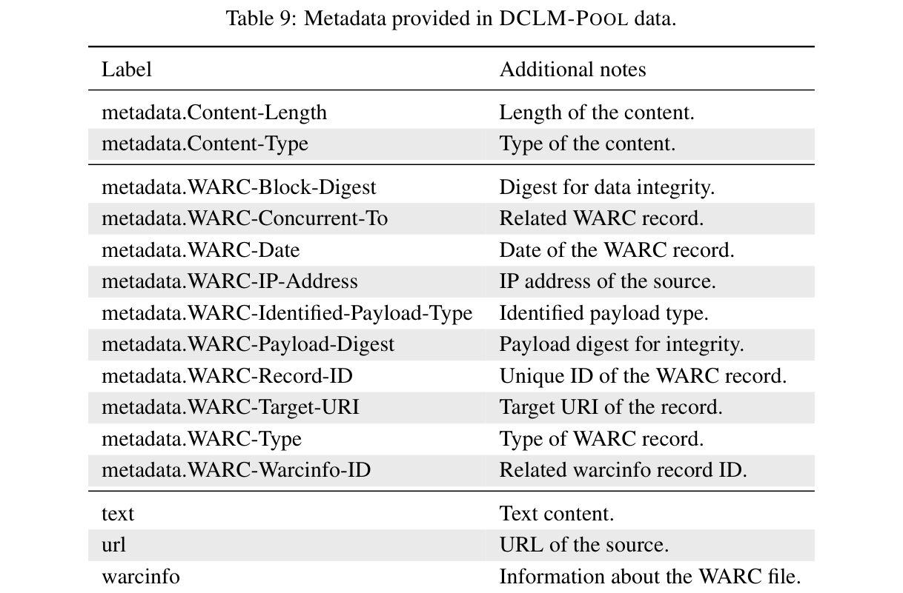
概述。我们的训练配置紧密遵循 Wortsman 等人 [183] 和 Gadre 等人 [62]。具体而言，我们使用 OpenLM [76] 构建训练基础设施；它支持仅解码器、前置归一化的 Transformer [173]，架构受到 GPT-2 [134] 和 Llama [169] 的启发。OpenLM 是基于 PyTorch [13, 125] 的代码库，使用 FSDP 模块进行分布式训练 [200]。
架构细节。所有归一化均使用不带偏置参数的 LayerNorm [15]，对 query 和 key 使用 qk-LayerNorm [51] 以稳定训练，采用 SwiGLU [150] MLP，并遵循 Zhang 等人 [196] 的深度缩放初始化方案。预训练序列长度为 2048。我们将多个序列打包进 batch，填满整个上下文，用 EOS token 分隔文档。允许因果 attention 跨文档关注；我们试验过屏蔽跨文档 attention，但早期实验显示对下游性能影响很小。
训练集与 token 化。由于论文重点是数据集开发，我们在超过 270 种数据分布上训练，其中大部分来自 Common Crawl 的筛选。多数实验使用 GPT-NeoX [24] 进行 token 化，词表大小为 50k。
优化细节。如正文所述，我们使用标准的下一个 token 预测目标训练。遵循 Chowdhery 等人 [39]，采用 z-loss，使输出 logit 的幅度保持在数值稳定范围内。
超参数。表 10 详细列出模型超参数。400M-1x 和 1B-1x 遵循 [62] 的超参数；这些超参数经过调优，以优化一个验证集上的 PPL，该验证集包含近期 arXiv 论文、OpenLM 代码库本身以及新闻文章中的 token。（接下页）
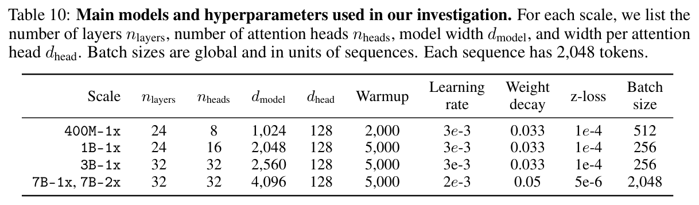
接上页：超参数验证集的来源已在上一页译完整。
对于 1B-1x 规模，我们还考察了表 12 中的替代超参数，发现 [62] 的超参数表现最好。对于 7B-1x 和 7B-2x，根据表 11 的超参数扫描，使用了更高的学习率和更低的权重衰减。所有实验都采用 3e-5 的冷却值。表 2 和表 5 的实验发生在更广泛的扫描之前，因此遵循 [62] 使用更低学习率。具体而言，学习率为 3e-4，权重衰减为 0.33。
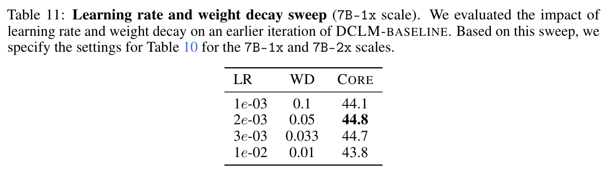
下面概述使用 LLM Foundry 评测模型的任务。我们还考察 FineWeb-Edu [106] 评测中采用的 LightEval [60] 评测流水线。
评测分为两个高层类别：CORE（22 项任务）和 EXTENDED（53 项任务）。选择 CORE 任务，是因为它们即使在小规模下也能提供低方差的学习信号。我们纳入多样化任务，以评估模型的各种能力。
接上页：Operators 的跨页说明已在上一页译完整。
上述 Big-Bench 列表继续：（4）Repeat Copy Logic（32 个样本），要求区分指令与待复制文本，并执行一系列操作；（5）CS Algorithms（1,320 个样本），要求执行递归、动态规划等算法；（6）Language Identification（10,000 个样本），要求识别一段自然语言文本的语言。
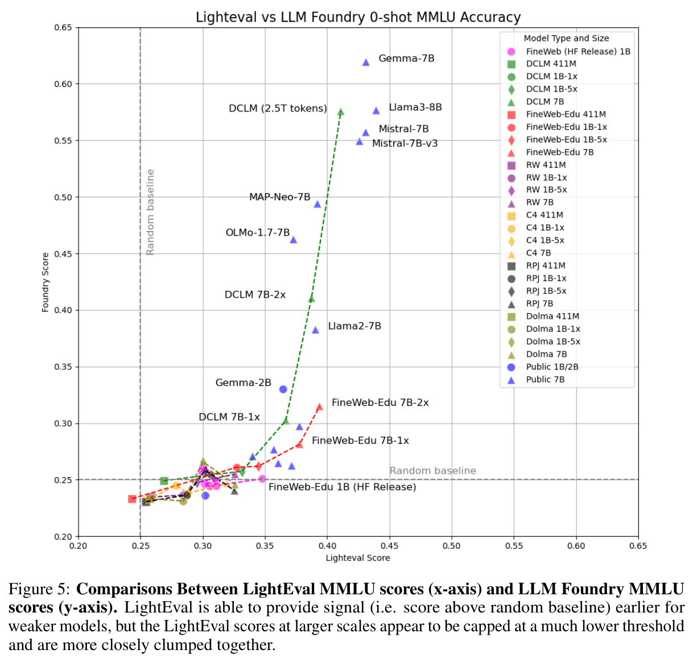
鉴于准确率有多种评估方式 [57]，我们使用 LightEval 评测框架 [60] 开展了一项小型研究。值得注意的是，在该框架下，考虑完整答案段落的对数概率，而不是单个字母的对数概率，能够让 1B 模型的 0-shot MMLU 分数超过随机水平（25%）。在 FineWeb-Edu [106] 上训练的 1B Hugging Face 模型已显示，在该评测协议下表现良好，因此我们希望更仔细地考察 LightEval 分数与 LLM Foundry 分数的相关性。结果见图 5。
对于 MMLU 这类多项选择任务，LightEval 与 LLM Foundry 的关键差异是：前者考虑完整答案序列的对数概率，后者只考虑单个字母的对数概率。尽管如此，图 5 显示，两种评测框架的 MMLU 0-shot 准确率存在正相关。
图 5 中，我们复现了 FineWeb-Edu 博客 [106] 报告的 MMLU 分数。我们发现，LightEval 确实能让 1B 规模的 MMLU 分数超过随机水平，而 LLM Foundry 中所有 1B 模型的准确率都在 0.25 左右。但在较大规模下，LightEval 模型分数聚集得很紧，可能使模型比较更困难，也更易受噪声影响。例如，Gemma-7B、Llama3-8B 和 Mistral-7B 的 LightEval 分数均在 0.43 至 0.44 之间，而 LLM Foundry 分数则在 0.56 至 0.62 之间。我们还发现，FineWeb-Edu 7B-2x 和 DCLM 7B-2x 在 LightEval 中表现非常相近，但在 LLM Foundry 中，DCLM-7B 高出接近 10 个百分点。（接下页）
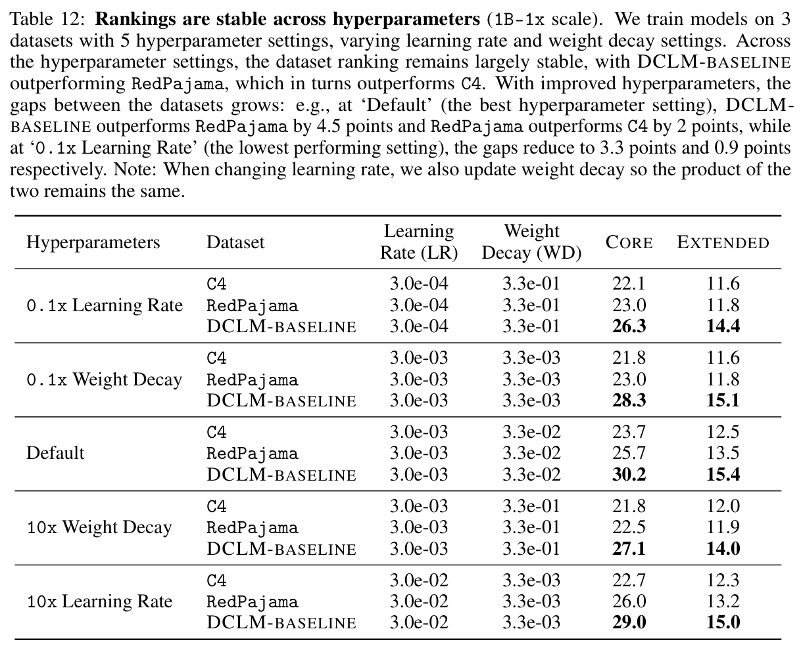
接上页：FineWeb-Edu 与 DCLM 比较的跨页句已在上一页译完整。
总而言之，我们认为，评估较小模型时 LightEval 可能是很好的选择，而比较较大模型时，LLM Foundry 等其他框架可能提供更清晰的信号。
本研究的一项局限是，我们以 MMLU 作为代表性任务，没有评估其他任务。未来值得比较更多任务，以及 Eleuther LLM Harness 等其他框架。
一个潜在问题是，训练超参数与数据集分布的交互可能使训练方案差异改变“哪个数据集最优”的结论。为处理这一混杂因素，表 12 表明，在不同权重衰减和学习率组合下，数据集的相对排序保持不变。此外，我们发现，最优超参数选择和数据集设计带来的性能收益通常相互独立，能够相互补充。表 13 展示了这一效果。
与附录 H 的超参数研究类似，这里探索结果能否在不同架构之间泛化。我们使用两种替代架构训练模型，考察它们的结果与论文其余部分采用的 OpenLM 架构表现之间的相关性。具体而言，尝试如下方案：
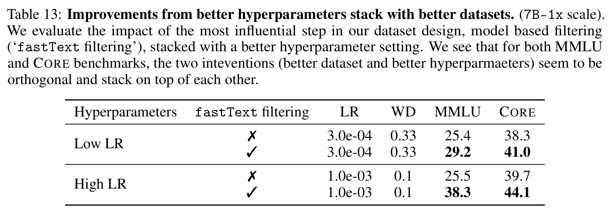
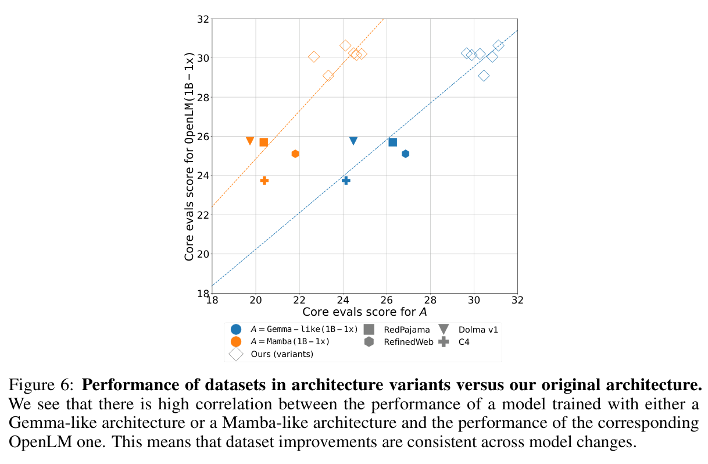
如图 6 所示，同一数据集在上述两个架构变体上的表现，与其在原始 OpenLM 架构上的表现高度相关。这说明数据集改进可以跨架构泛化。
第 4.4 节展示了多种基于模型的质量筛选器的结果。本节更详细地介绍它们的实现，尤其关注 fastText 分类器，因为这是 DCLM-BASELINE 所选的方法。
训练。我们使用 Joulin 等人 [87] 的 fastText 包训练监督模型，区分被赋予正标签的所选“高质量”参考数据，与被赋予负标签的网页爬取数据。随后，用分类器给待筛选数据池的每篇文档评分，以正标签的预测概率作为分数，并计算基于百分位数的阈值。fastText 训练超参数主要采用软件包默认设置；唯一尝试的变更是将特征空间从仅一元词组扩展为一元加二元词组（将 wordNgrams 从默认 1 改为 2）。这有助于提升筛选后数据集的质量，如表 14 所示（该表扩展了第 4.4 节的表 5）。
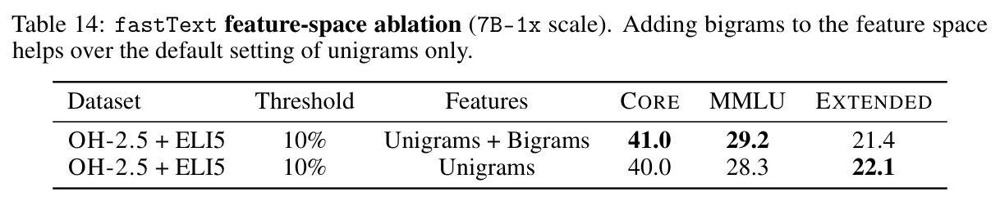
数据准备。训练 fastText 模型的大部分实验都聚焦于构建底层训练集，尤其是带正标签的参考数据。每项实验的训练集固定为 400K 个样本（200K 正例、200K 负例）。负例从我们较早、较小的 RefinedWeb 复现版本中随机抽取。该版本使用 trafilatura 而非 resiliparse 提取文本，我们推测这反而可能有助于训练筛选模型；如附录 K 所示，trafilatura 会更积极地去除多个页面（尤其同一网站）中可能出现的模板内容。如果保留这种内容，fastText 模型可能过度依赖这些“伪”特征，而非页面主要内容。正标签参考数据尝试了多个来源，其中一些经过进一步预处理：
我们还考察了其他质量筛选器，但如表 4 所示，没有任何一种与上述 fastText 方法一样有效。下面补充部分基线的细节。
PageRank。一种直觉上有前景、最终却无成效的方法，是考虑 PageRank 和调和中心性等页面中心性指标，认为更“中心”的网页文本会产生更高质量数据。我们从 Common Crawl 的主机级网页图数据集3收集 PageRank 指标，并排除未出现在爬取数据中的主机。随后按 PageRank 分数将 RefinedWeb 复现数据划为五个等分，在 1B-1x 规模训练多个模型。表 15 汇总了结果，遗憾的是，任何单个五分位组的表现都不如从全部五组并集抽样的数据池。
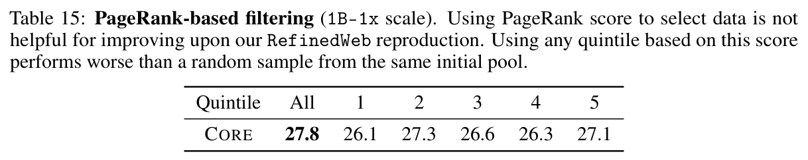
AskLLM。近期一些工作研究使用指令微调模型作为标注者，判断文档的潜在用途。Sachdeva 等人 [146] 提出 AskLLM，通过提示 Flan-T5 [40] 模型评估文档是否“……包含对 LLM 预训练有信息价值的信号？有信息价值的数据点应格式良好，包含一些可用的世界知识，且严格不得包含有害、种族歧视、性别歧视等内容。”我们自行实现该方法，小规模测试多个标注模型、不同最大序列长度及多个提示。最佳配置是使用 Mistral-7B-Instruct-v0.2 [83]，在 1024 token 处截断文档，以 Yes 和 yes token 的累计概率作为模型分数。使用的提示模板译文如下：
评估以下段落是否适合 LLM 预训练： - 结构是否良好，或是否包含有用的自然文本示例？ - 是否提供见解、有用事实或相关信息？ - 是否教人完成写信、诗歌、电子邮件等开放式任务？ - 是否不含有害内容？ 如果以下内容满足大多数条件，则用 'yes' 表示适合。 否则用 'no' 表示不适合。 ### <input> ### 是否适合 LLM 预训练？选项： - yes - no
其中 <input> 替换为文档 token，过长时截断，并追加“……[段落其余部分已省略]”。虽然该方法比从数据池随机抽样略好（见表 4），但显著不如 fastText 实验。（接下页）
接上页：AskLLM 与 fastText 比较的跨页句已在上一页译完整。
考虑到大规模应用的高成本，我们没有在更大规模开展该实验。
SemDedup。鉴于我们使用的不同去重方法取得成功（附录 L），我们研究了 Abbas 等人 [1] 提出的 SemDedup 效果。该方法使用预训练语言模型 embedding 文档，通过 k-means 聚类，对每组密切相关的文档仅保留一个，以鼓励数据集多样性。首先按 Abbas 等人 [1] 的最佳实践，在约一亿篇文档的数据池中用 BGE-base [185] embedding 每篇文档。然后使用 faiss-GPU [85] 执行球面 k-means 聚类，迭代 20 次，\(K = 11000\)。丢弃 25% 数据后抽样文档。如表 4 所示，这种干预只对训练模型产生负面影响。我们推测，用于 embedding 的模型对该方法结果有显著影响。然而，扩展时的巨大计算开销使其不可行，因此选择依赖附录 L 的去重方法，将这条研究路线留待未来。
这里对选用的提取器 resiliparse [20] 与其他数据集此前使用的两种替代方案 WET 文件和 trafilatura [17]，进行更详细的定量和定性比较。
根据 10 个 WARC 文件的样本（对应 900K 个独立页面），计算各提取器的基本汇总统计，结果见表 16。与 WET 文件相比，resiliparse 和 trafilatura 输出文档的平均长度至少缩短一半。如附录 K.2 的示例所示，WET 文件确实包含许多对预训练似乎价值很低的额外行（如导航栏、模板通知、版权声明）。trafilatura 和 resiliparse 去掉大多数这类行，前者更严格。相比之下，resiliparse 仍保留约 10% 更多文本，其中有些可能提供章节标题、日期等有用内容。运行时间的差异更大，resiliparse 约快 8 倍。
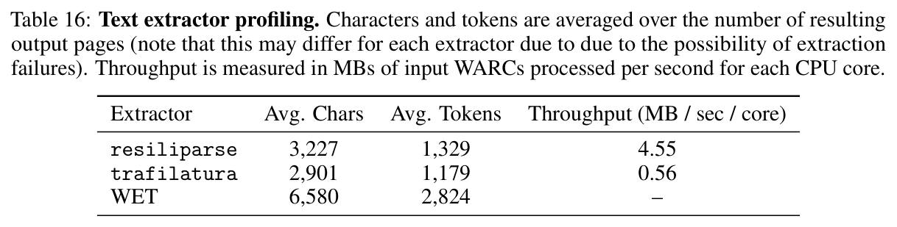
以下为原论文展示的文本提取对照图，保留图内原文。
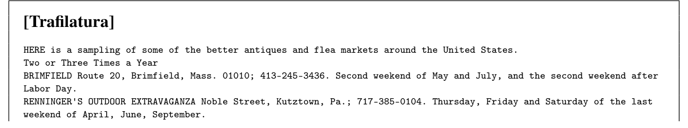
原始文本提取对照图（续），图内英文保持原样。
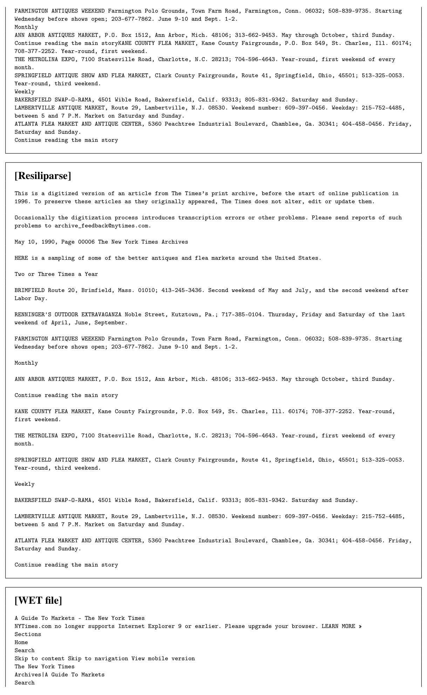
原始文本提取对照图（续），图内英文保持原样。
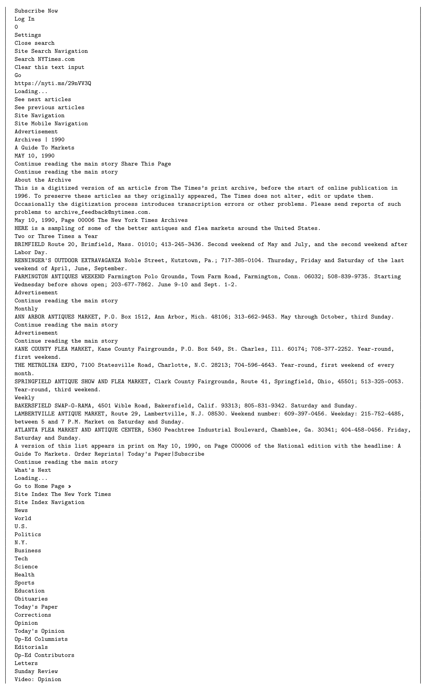
原始文本提取对照图（续），图内英文保持原样。
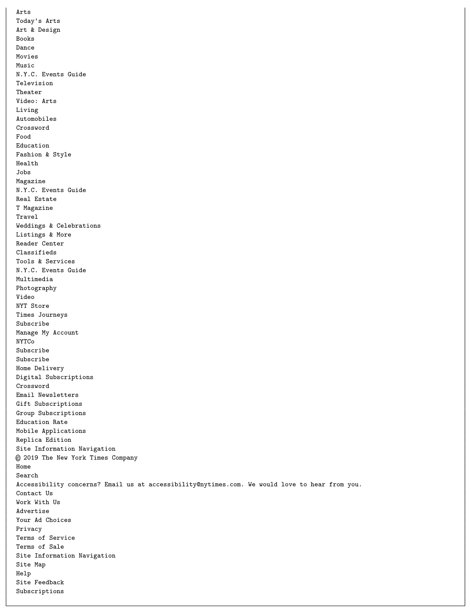
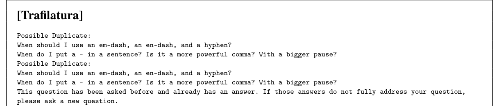
原始文本提取对照图（续），图内英文保持原样。
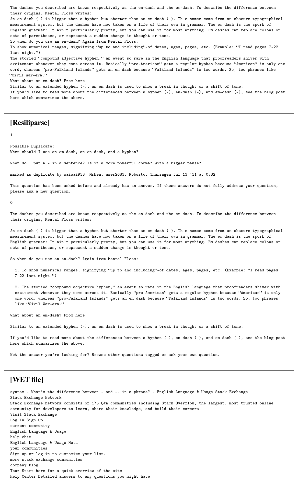
原始文本提取对照图（续），图内英文保持原样。
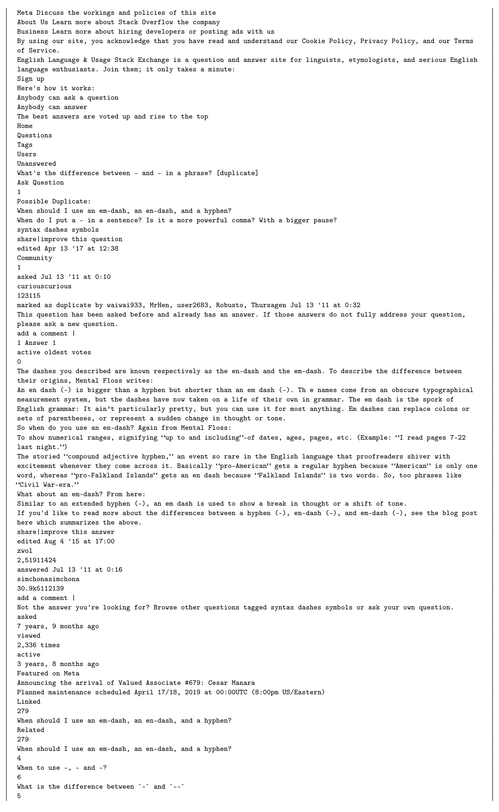
原始文本提取对照图（续），图内英文保持原样。
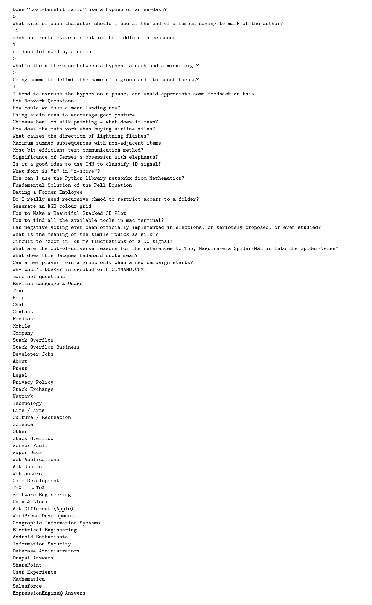
原始文本提取对照图（续），图内英文保持原样。
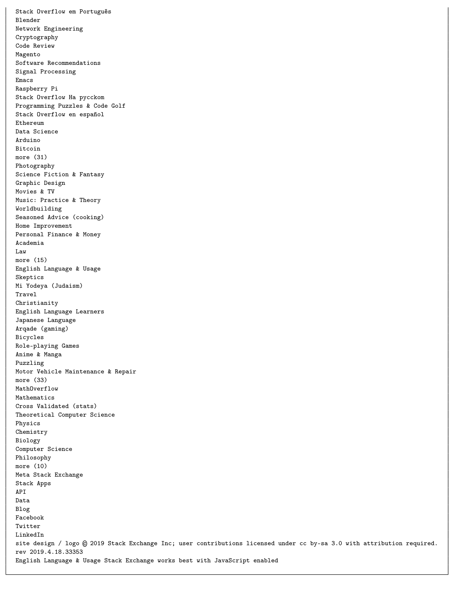
我们对多种去重流水线开展了大量消融与实验。本节先介绍所考虑的去重方法，再概述促使我们选择用于生成 DCLM-BASELINE（及其他 DCLM 规模）去重流水线的消融实验。
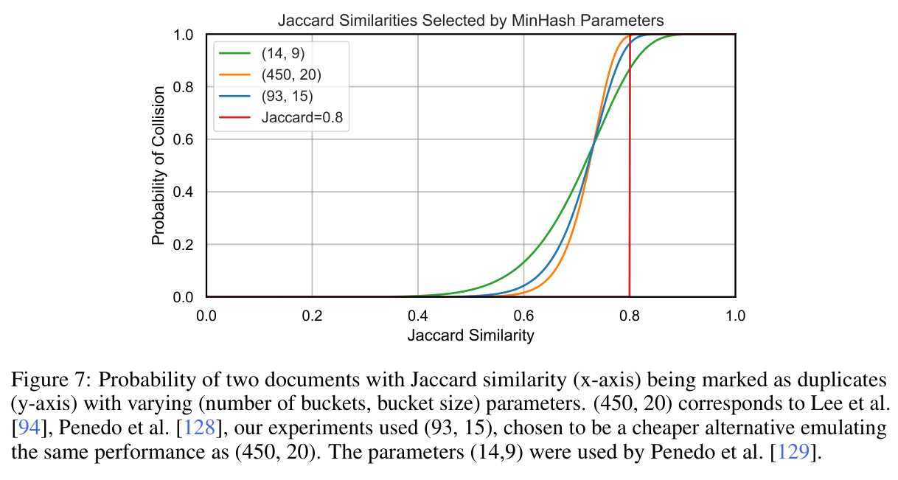
Lee 等人 [94] 和 Penedo 等人 [128] 等以往工作使用两阶段去重流水线：先在文档间通过 MinHash 算法识别并去除近似重复，再在文档内部去除整个语料库中出现不止一次、长度达到预定值的子字符串。直觉上，这种策略合理，因为“重复”的概念定义并不明确，可能包括：（i）完整文档的精确副本（在文档级处理）；（ii）大多数文本重复，仅页眉或页脚有独特差异的文档（在文档级处理）；（iii）既有大量独特文本，又有大量重复模板文本的文档（在文档内部处理）。多粒度去重可以针对所有这些情况；进一步地，能处理近似重复、通常称为“模糊去重”的流水线，可以识别人类直觉上认为重复的文档。
虽然最终采用基于 Bloom 筛选器的去重方法，我们也介绍考虑过的其他流水线：
MinHash。MinHash 是一种 LSH 技术，根据集合的 Jaccard 相似度将它们分组 [29]。在文本数据集去重中，MinHash 用于 GPT-3 训练集去重 [31]，之后 Lee 等人 [94] 研究中的开源实现被众多项目使用 [46, 128]。更多细节见 Lee 等人 [94] 正文和 Penedo 等人 [128] 的附录 G.3.1。主要超参数是 n-gram 大小和使用的排列数。遵循 Lee 等人 [94] 和 Penedo 等人 [128]，我们使用 5 token 的 n-gram，目标 Jaccard 相似度为 0.8。但与以往工作不同，我们修改了 MinHash 排列数。上述两项工作都使用共 9,000 次排列，分为 450 个桶，每桶 20 个哈希。我们发现这过于昂贵，更少的排列就能得到类似的 Jaccard 相似度曲线。所有消融实验改用共 1,395 次排列，分成 93 个大小为 15 的桶。在固定哈希预算下，通过程序选择超参数，使曲线在 \(\ell _{2}\) 意义上尽可能接近。详情见图 7。
后缀数组。Manber 与 Myers [111] 首次提出后缀数组，可高效识别并去除大型文本语料库的子字符串。先拼接语料库中的所有文本，再排序每个后缀。扫描排序列表中相邻元素的前缀，就能识别具有共同前缀的子字符串。（接下页）
接上页：后缀数组识别共同前缀的跨页句已在上一页译完整。
后一步可以非常容易地并行化，但我们借用 Lee 等人 [94] 代码库的实现并不采用多节点方式，需要将整个语料库加载到 RAM。我们直接使用 Lee 等人 [94] 的超参数，去除长度至少 50 token 的所有重复子字符串。
Bloom 筛选器。Bloom 筛选器是一种支持空间高效集合成员查询的数据结构 [26]。具体而言，它在次线性空间中维护集合的摘要，支持 insert 操作，以及概率性的 membership_query 操作；后者绝不产生假阴性（即对集合内元素返回 False），但偶尔产生假阳性（即对集合外元素返回 True）。Soldaini 等人 [157] 首次将其用于精确重复去除，之后 BFF（Big Friendly Filter）[72] 将其扩展到近似重复文档和段落去除；我们进一步修改 BFF，使文档级和段落级去重同时进行。我们发现该技术远比 MinHash 和 SuffixArray 流水线高效。但必须指出，MinHash 与 BFF 对重复的定义不同：MinHash 在文档对文档层面执行文档级去重，BFF 则在文档对语料库层面执行文档级去重。
段落 + 文档 BFF。下面概述修改后的 Bloom 筛选器去重算法。初始化时，需要估计整个语料库的 token 数，并给定期望假阳性率，以初始化固定大小和哈希器数量的 Bloom 筛选器。最佳哈希器数 k 由以下公式给出：
k = −ln ε / ln 2。
其中 \(\epsilon\) 为期望假阳性率。对于 \(k\) 个哈希器和 \(n\) 个 token，最佳大小 \(m\) 可通过以下公式求解：
ε = (1 − e−kn/m)k。
虽然没有简单的解析解，但通过二分搜索求解 m 很容易。
建立 Bloom 筛选器后，逐篇处理语料库文档，执行以下步骤。首先使用 UniSeg tokenizer [48] 将文档 token 化，再按换行字符 \\(n\) 分段。每篇文档维护 total_ngrams 和 contained_ngrams 两个计数器。根据 min_ngram_size、max_ngram_size 和 threshold 超参数，逐段处理：
所有段落处理完毕后，如果 contained_ngrams 与 total_ngrams 的比率超过 threshold，就从语料库中去除整个文档。
最后，对基于 Bloom 筛选器的去重所选超参数作简要解释。
假阳性率。BFF 的内存占用由 token 数和假阳性率决定。我们只能控制假阳性率，且发现 Bloom 筛选器大小与假阳性率的负对数呈线性关系。具体而言，一个约占 2TB 磁盘空间、含 1T token 的语料库，若确保几乎没有假阳性，即将假阳性率设为 \(10^{-12}\)，需要 6.5TB RAM。这里通过分析论证，即使假阳性率为 0.01 也已足够，并在下一节用实验支持这一结论。
选择基于 n-gram 的 Bloom 筛选器假阳性率时，需认识到：只有超过某个阈值比例的 n-gram 已包含在集合中，段落或文档才会被去除。例如，给定有 \(N\) 个 n-gram 的段落，其中 \(S\) 个已在 Bloom 筛选器中，threshold 设为 \(T\)。由于 Bloom 筛选器没有假阴性，\(S\) 个 n-gram 都会被正确标为已包含，剩余 \(N - S\) 个则可能被误报。实际上，其中至少 TN \(- S\) 个需要被误报，每个独立发生的概率为 \(\epsilon\)。这等价于 \(N - S\) 个参数为 \(\epsilon\) 的 Bernoulli 随机变量，可用粗略的 Hoeffding 界约束。在这种情况下，文档或段落被错误标为重复的概率上界为：
exp[−2 · (TN − S − ε · (N − S))² / (N − S)]。
具体而言，对于含 100 个 n-gram 的文档，阈值为 0.8，假阳性率为 0.01，如果其中 60 个 n-gram 之前已出现，文档被标为重复的概率小于 \(10^{-8}\)。除非另有说明，我们始终使用 0.01 的假阳性率。
min_ngram_size。选择最小 n-gram 大小时，我们注意到许多文档有很短的列表段落，例如食谱常含项目符号食材列表，MMLU 多项选择问题也可能很短。最初将最小大小设为 5 token 时，CORE 分数有所改善，但 MMLU 表现变差。人工检查后，我们最终将最小和最大 n-gram 大小都设为 13 token。
threshold。消融实验未显示去重性能有明显差异。
首先在 1B-1x 规模对完整去重流水线的选择开展消融。从 Common Crawl 子采样得到一个 76B token 数据池，应用 Penedo 等人 [128] 的启发式筛选步骤。再组合去重步骤，进一步子采样到 1B-1x 所需的 28B token。最后训练并评估 CORE 分数，以及去重去除的 token 百分比。本轮消融主要回答：
结果见表 17。主要结论如下：i）后缀数组去重似乎比 MinHash 去重帮助更大，为 MinHash + SuffixArray 流水线的收益来源提供线索；ii）BFF 的表现与完整 Exact + MinHash + SuffixArray 流水线相当，有力表明多粒度 BFF 可能是以往较昂贵的 MinHash + SuffixArray 流水线的一种易扩展替代方案。（接下页）
接上页：多粒度 BFF 的跨页结论已在上一页译完整。
有趣的是，SuffixArray 流水线似乎优于单独的 MinHash，不过，这落在数据集子采样和模型训练非确定性导致的 CORE 分数方差范围内。
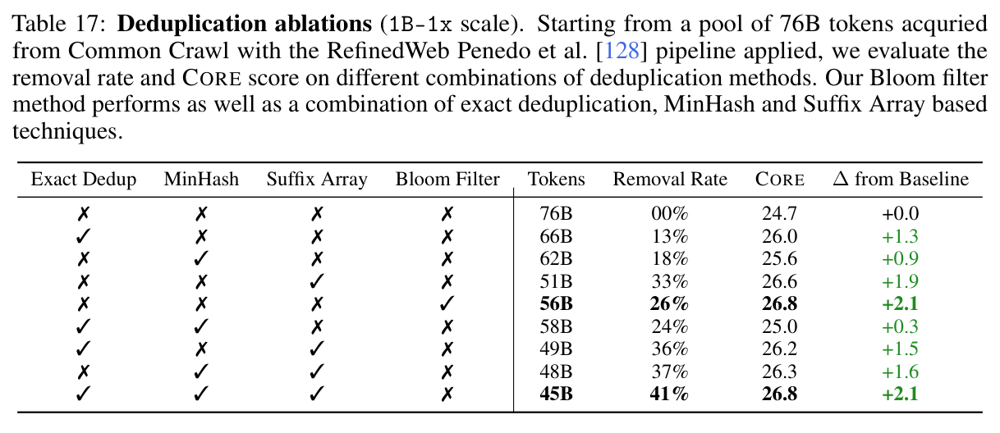
为进一步比较 BFF 与更传统的 MinHash + SuffixArray，我们在 7B-1x 规模开展多个实验。这里引入另一个称为 shards 的超参数。“分片”指将数据集划为大小大致相等的块，在每个块上独立执行去重流水线。主要出于工程目的，因为分片便于进一步并行化去重，将单节点算法转为多节点算法。但分片还有额外好处：更多分片产生更大的 token 池；待比较的文档更少，仅重复少数几次的许多文档得以保留。近期还有证据表明分片似乎能改善评测表现 [129]。RefinedWeb [128] 也对 Common Crawl 数据池进行 100 路分片去重。
本轮消融从 Common Crawl 的十分之一构建数据池，执行 Penedo 等人 [128] 的预处理步骤，再应用不同去重流水线。之后使用 fastText 分类器筛选，子采样到 138B token，在 7B-1x 规模训练并评估模型。主要问题是：
结果见表 18。首先，min_ngram_size 为 13 和 20 的 BFF，其 CORE 和 MMLU 分数与同规模 MinHash + SuffixArray 去重数据池相当。其次，关于 min_ngram_size 和分片：较小的 min_ngram_size 会提高 CORE，但设为 5 时 MMLU 大幅降低。较少分片也降低 token 产出量，但对 CORE 的影响不固定。下一小节更全面考察 BFF 超参数。
受这些结果鼓舞，我们继续在 7B-2x 规模考察可扩展去重流水线的最佳候选。仍从 Common Crawl 的十分之一构建数据池，生成多个去重池。关注的问题与上面相同，结果汇总于表 19。本轮主要结论是：7B-2x 规模下，min_ngram_size 为 13、10 个分片的 BFF 与 MinHash + SuffixArray 流水线的表现几乎一致。（接下页）
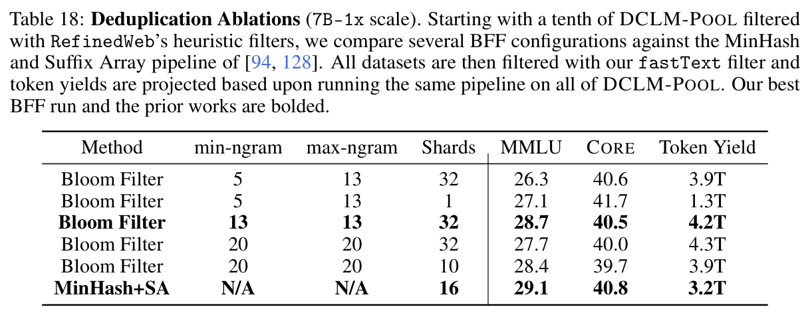
接上页：min_ngram_size 为 13、10 个分片的 BFF 与 MinHash + SuffixArray 比较已在上一页译完整。
而 min_ngram_size 为 20、32 个分片的 BFF 开始落后；min_ngram_size 为 5 时 CORE 仍有竞争力，但 MMLU 再次表现不佳。虽然这些实验也改变分片选择，但我们主要将分片视为可扩展性与 token 产出量之间的权衡。较大的分片更昂贵、更难并行，并可能减少 token 产出量。本轮主要目的是了解 BFF 在大规模下如何与 MinHash 和后缀数组比较，以及 BFF 的正确超参数。后一个问题上，我们选择 min_ngram_size = 13 来生成 DCLM-BASELINE。
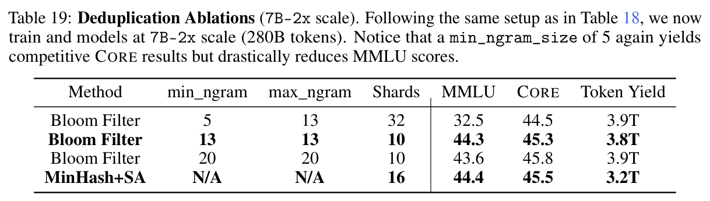
上述消融主要预训练模型并评估 CORE 和 MMLU，但用这种方式开展大量消融仍很昂贵。这里改为探索改变 ngram_size、假阳性率和输入数据集大小时，BFF 去重数据集的统计。各超参数分别实验，每段末尾给出所有更大规模运行所用的选择。
假阳性率。从附录 L.2.1 所述的 75B token 数据池开始，关注仅段落级 BFF。即执行上述 BFF，但省略整篇文档去除步骤。使用 Groeneveld [72] 默认 n-gram 大小，min_ngram_size = 5、max_ngram_size = 13、threshold = 0.8。专门考察改变假阳性率的效果，计算输出去除率（按字节）。表 20 显示，对这种较小数据池，0.1 已足够。对较大数据池，为稳妥起见，始终设为 0.01。
最小 n-gram 大小。表 18 和表 19 表明，改变 ngram_size 会影响 token 产出量和评测指标。我们尤其想了解保留文档如何被去重改变，因此以文档长度和去除率作为代理。本段及后两段结果汇总于表 21。（接下页）
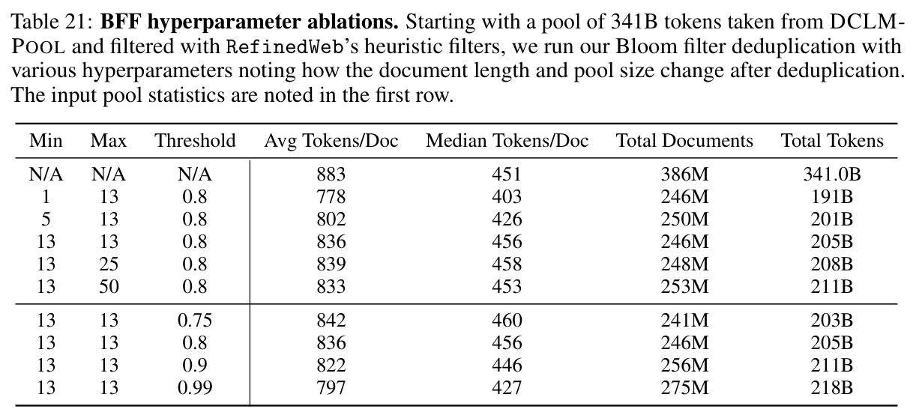
接上页：结果汇总于表 21 的跨页句已在上一页译完整。
关键观察是，随着 min_ngram_size 减小，文档长度均值和中位数都变短。说明该参数过低会显著影响数据集的语言统计，应当避免。这符合直觉：很多文档包含按换行分隔的列表，每项很短且可能重复。例如，许多网页食谱要求“1 stick of butter”，min_ngram_size = 5 会去除这一内容，损害源文档。
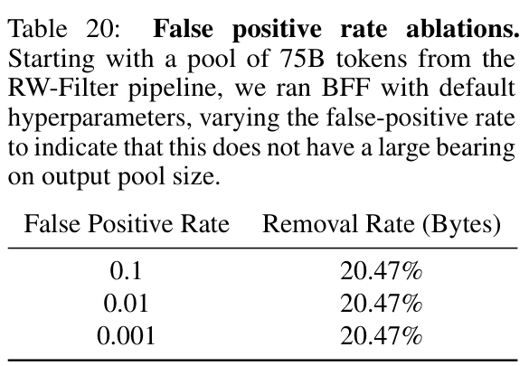
最大 n-gram 大小。接下来考察增大 max_ngram_size。基于前段选定的 min_ngram_size = 13，考虑 max_ngram_size 为 13、25 和 50。与最小大小不同，增加该参数没有显著改变语言统计。为简单起见，大规模数据池使用 max_ngram_size = 13。
阈值。threshold 决定一篇文档需要与此前 n-gram 多么接近才被视为重复。我们在 0.75 至 0.99 间消融，检查文档长度统计和去除率。有趣的是，阈值提高时文档变短，与降低 min_ngram_size 的统计相似。如预期，更高阈值带来更低去除率。遵循 MinHash 去重的 Jaccard 相似度选择，并注意到 0.8 的每篇文档 token 中位数最接近基线，我们之后采用 0.8。
分片。最后模拟分片对去重数据集统计的影响。同样关注去除率，以及文档长度均值和中位数，主要是了解数据集扩展时这些特征如何变化，因为文档统计剧变可能不利于下游评测。较大数据池可以按需要任意细分，因此把分片当作控制去除率和文档统计的超参数。结果汇总于表 22 和图 8。主要结论是：去除率随数据集大小单调增加，符合预期，但呈凹形增长。这为给定期望 token 产出量时，输入数据池应细分到何种程度提供线索。（接下页）
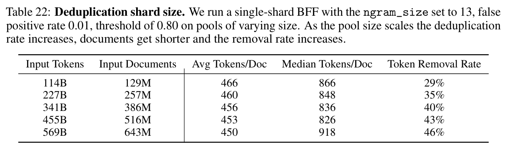
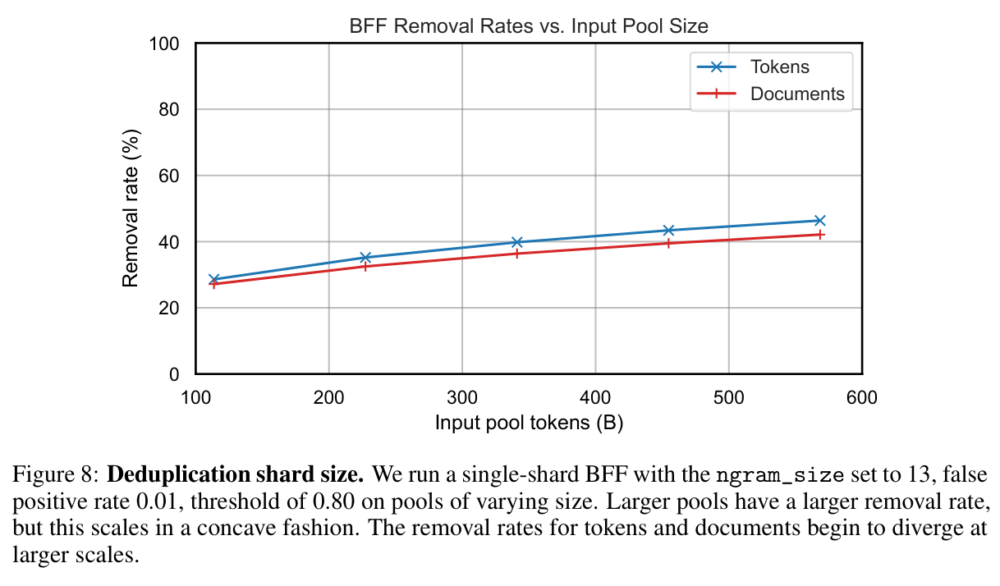
接上页：给定 token 产出量时确定分片程度的跨页句已在上一页译完整。
另一个关注点是扩展数据集时的文档长度：它们随着数据池增大而单调减小。
构建 DCLM-BASELINE 时，去重阶段的数据集约为 70TB。表 19 显示，在约 7TB 输入上进行 10 路分片的 BFF 表现最好，因此 DCLM-BASELINE 采用 100 路分片，每片约 700GB。
最后，为了解完整处理流水线之后数据集中的剩余重复，我们对多个开放数据集执行全局（即单分片）MinHash，结果汇总于表 23。评估 DCLM-BASELINE、HuggingFace 上的官方 RefinedWeb、我们模拟的 RefinedWeb 流水线，以及 Dolma V1。MinHash 使用 14 个桶、每桶大小 9，对应图 7 的绿色曲线。
我们有几点观察。首先，用 Bloom 筛选器去重的数据池，在 MinHash / Jaccard 相似度意义上仍包含大量“模糊重复”。这说明两者对重复的定义并不相同。其次，虽然 MinHash 大致是幂等过程，分片去重却无法去除很大一部分重复。第三，DCLM-BASELINE 的 100 分片 Bloom 去重仍留下大量重复，却似乎不影响下游表现。这质疑了“任何重复都会妨碍下游性能”的普遍观点；我们推测，要么 i）只有大量重复才不利于下游性能，要么 ii）激进的单分片去重去除了许多高质量文档。（接下页）
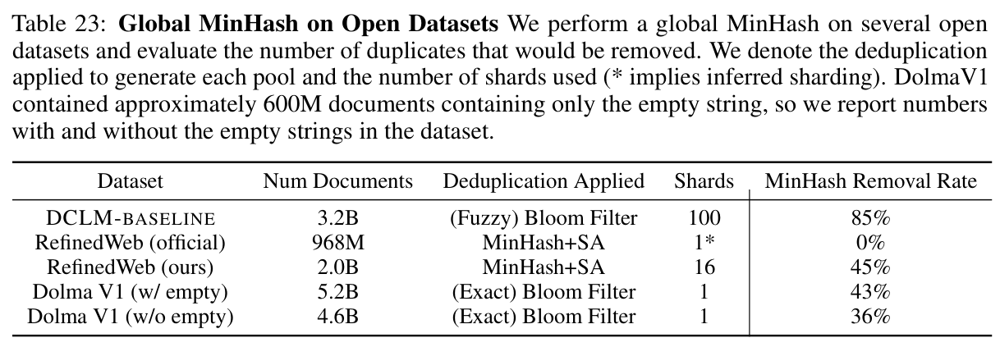
接上页：关于重复数据的两种推测已在上一页译完整。
这些实验留待未来工作。
第 4.5 节表明，将数据集与常用来源混合未提升总体表现，我们推测这是因为 DCLM-BASELINE 对 Common Crawl 进行了更严格筛选。基于该假设，混合之前改进其他来源的筛选，也可能提升性能。作为一种尝试，我们使用与 DCLM-BASELINE 相同的 fastText 分类器筛选其他来源。
从 RedPajama [168] 获取多个来源，分别使用 DCLM-BASELINE 的 fastText 分类器筛选，只保留分数最高的数据。随后将结果加入预训练数据集，在 1B-1x 规模训练。结果见表 24。尽管不同来源受到更一致的处理，额外来源仍降低性能。
非 Common Crawl 来源的潜在筛选和混合进一步分析留待未来，希望参与者利用混合赛道探索这些方向。
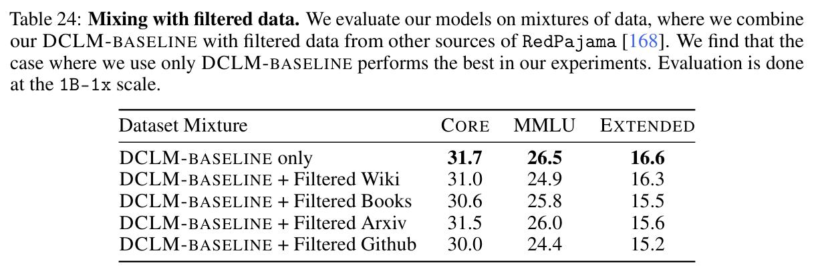
以往工作表明，由于标注者训练不足、缺乏技能或动力，或者主观偏见无意泄漏，人工标注可能向数据引入不需要的偏差或噪声 [42, 66, 68]。然而，对明确任务的数据标注，人工标注者仍被广泛视为金标准。一个自然假设是：若人工标注者能够手动筛选巨大的原始数据池，最终会得到质量特别高的数据集。（接下页）
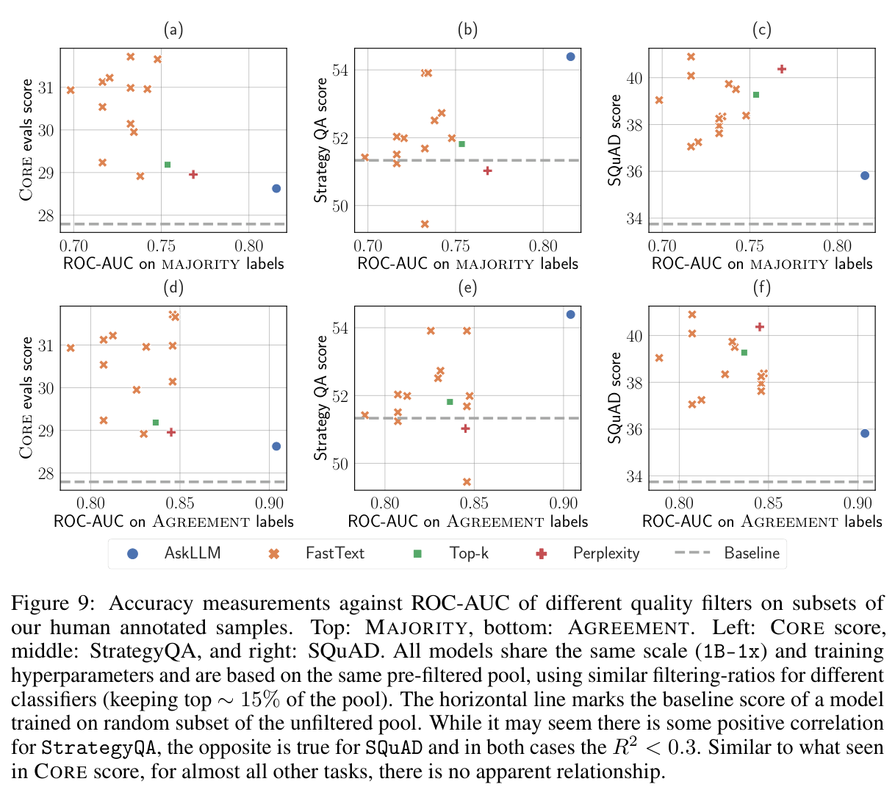
接上页：人工筛选可能得到特别高质量数据集的跨页假设已在上一页译完整。
为检验该假设，我们邀请 16 位讲英语的 AI 研究生和教授，标注从未使用质量筛选器的数据池中随机选择的约 500 篇文档。每篇文档获得三个标注，以多数票作为金标签。平均标注者间一致率为 71%。进一步提取三位标注者全部一致的 281 个样本，将完整数据称为 MAJORITY，子集称为 AGREEMENT。
然后在这些数据上评估第 4.4 节的各种质量筛选器，寻找数据集质量（CORE 准确率）与筛选器对人工标签的一致性之间的相关性。图 9（a）将各质量筛选器筛选数据集上训练模型的 CORE 分数，与筛选器在 MAJORITY 数据上的 ROC-AUC4 对照。表现最好和最差的 fastText 筛选器在 MAJORITY 上得分近似（约 73% ROC-AUC），而与人工标注高度相关的 AskLLM（约 82% ROC-AUC）作为质量筛选器的表现却差很多（约 28.5% CORE，而多个 fastText 分类器超过 31%）。
我们进一步检查与具体下游任务的相关性，并与三位标注者均一致的 AGREEMENT 数据上的 ROC-AUC 比较。图 9 展示一组代表性筛选器在几个任务上的得分与标注数据 ROC-AUC 的关系。StrategyQA [67] 可能存在一些正相关，但 SQuAD [140] 等其他问答数据集恰好相反，且两种情况 \(R^{2}\) 均小于 0.3。多数其他下游任务的结果与图 9（a）类似，观察不到相关性。（接下页）
4 ROC-AUC 汇总所有阈值下真阳性率与假阳性率的权衡，衡量分类器区分类别的能力，是稳健且常用的模型性能指标。更多细节见 Receiver operating characteristic。
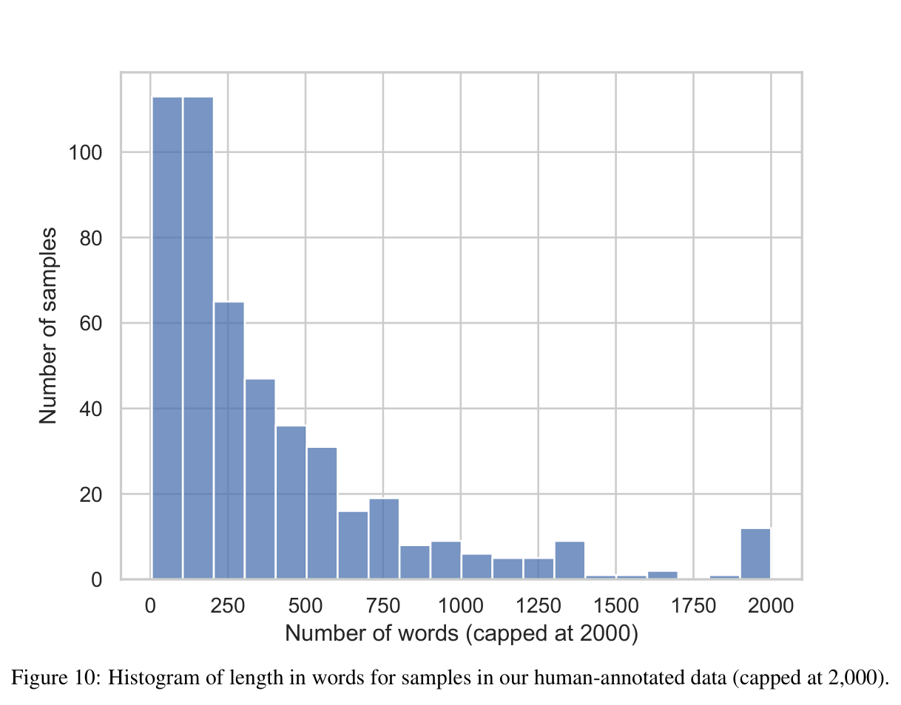
接上页：多数下游任务无相关性的跨页句已在上一页译完整。
这说明，人类直觉可能无法可靠识别对语言模型训练最有用的文档。我们推测，人工整理者可能构建出多样性不足的数据集，这些假设的进一步调查留待未来研究。
数据收集。在经过基于规则的质量筛选和去重后，从数据池随机抽取 499 篇文档。图 10 是文档词数长度的直方图。我们邀请 16 位讲英语的 AI 研究生和教授，判断每个样本是否适合纳入语言模型预训练语料（下文提供给标注者的说明与示例）。5 499 个样本中有 281 个获得三位标注者完全一致的判断。两个数据集均在代码库发布。6
5 全部标注均自愿完成，没有报酬。
6 https://github.com/mlfoundations/dclm/tree/main/data
你的任务是评估从 DCLM-RefinedWeb 随机抽取的文档质量（0 为差，1 为好），标准是它们对 LLM 训练的有用程度。
如何判断文档的有用程度？
虽然这是主观任务，但有几点需要注意：
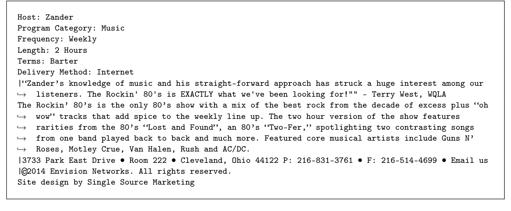
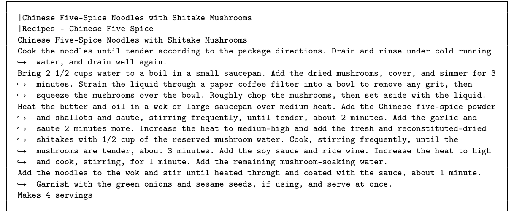
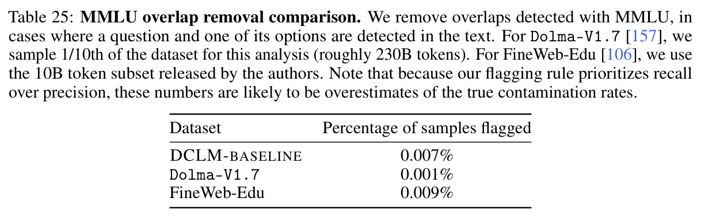
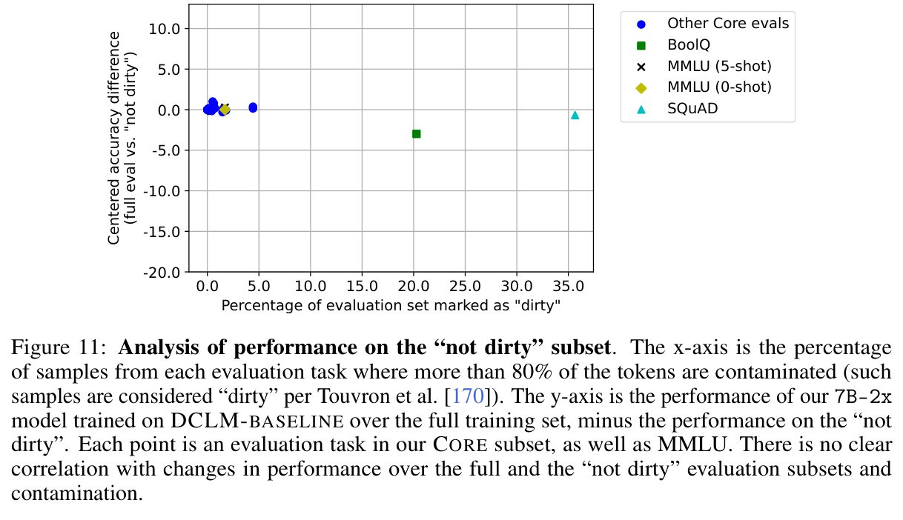
第 4.6 节检查污染是否解释 DCLM-BASELINE 在 MMLU 和 Hellaswag 上的强劲结果。这里首先通过表 25 补充分析：DCLM-BASELINE 中被 MMLU 专用去污染流程标记的文档百分比，与其他同期高性能数据集大致相近。之后分析其他开源数据集和评测任务。
为了扩展到更多评测任务，不采用第 4.6 节的去污染方法，而采用更一般的基于 token 重叠的方法。总体而言，制定通用去污染规则很困难，因为文本污染的界定可能主观，任务格式又各不相同。遵循 Touvron 等人 [170]，我们查找 DCLM-BASELINE 与下游任务之间重叠的 10-gram（或更长）中的污染 token。测量各评测集中超过 80% token 被污染的样本比例（Touvron 等人 [170] 将其称为“脏”），以及不足 20% token 被污染的样本比例（按同一标准称为“干净”）。
对于在 DCLM-BASELINE 上训练的同一 7B-2x 模型，我们比较完整评测集与按 Touvron 等人 [170] 标为“不脏”的样本（少于 80% token 被标为污染）之间的性能差异，也比较完整评测集与“干净”样本（少于 20% token 被标记）之间的差异。图 11 显示，完整数据集与“不脏”样本的性能差异很小。事实上，对于被标为高度污染的 BoolQ 和 SQuAD，模型在“不脏”子集上略好。图 12 也显示，多数数据集完整评测集与“干净”子集的性能差异同样很小。虽然 Hellaswag 看似明显例外，但第 4.6 节已表明，从训练集去除污染的 Hellaswag 样本不会降低性能。需要指出，确定污染样本的正确阈值很困难：20% token 重叠可能造成大量误报，而 80% 又可能太高，无法检测全部污染样本。
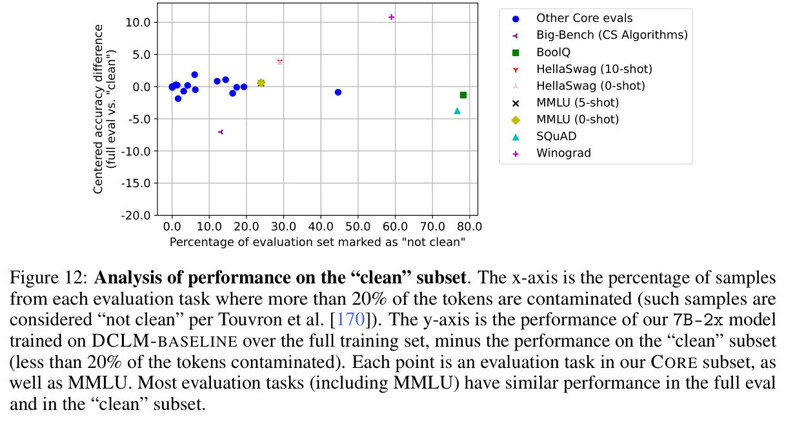
指令微调已成为使用户能与预训练语言模型交互的关键步骤 [117, 120, 174, 176, 192]。为考察 DCLM-BASELINE 模型能否拥有较强的指令遵循能力，我们用 OpenHermes-2.5（OH-2.5）[165] 对 DCLM-BASELINE（7B）进行指令微调。具体而言，训练模型根据指令微调数据集中的指令预测回答。使用 Adam [91] 优化器训练 10 个 epoch，warmup 比例 10%，余弦学习率调度。在 {1e-7, 5e-6, 2e-5} 三种学习率上搜索超参数，报告评测指标即 AlpacaEval 2.0 长度控制胜率 [54] 的最佳结果。训练后，以 0.3 采样温度、500 的最大回答长度，生成 AlpacaEval 指令的回答。比较基线包括直接从 AlpacaEval 排行榜获取的 LlaMA-2-Chat [170]、Zephyr-7B [171] 等，以及按与 DCLM-BASELINE 相同方式微调的 Mistral-7B [83]。
结果见表 26。用 OH-2.5 微调的 DCLM-BASELINE 优于 Zephyr-Beta-7B、Gemma-Instruct-7B 等指令模型，说明指令微调能够从预训练 DCLM-BASELINE 中引出高质量回答。此外，DCLM-BASELINE 略落后于 Mistral-7B-OH-2.5，意味着它在微调方面与同规模现有模型具有竞争力。小幅差异可能源于 DCLM-BASELINE w/ OH-2.5 平均生成比 Mistral-7B w/ OH-2.5 更长，或其预训练所见 token 数少于 Mistral-7B。
后续问题是，是否可以通过微调，使 DCLM-BASELINE 更能与同规模模型竞争。为进一步提升指令遵循能力，我们组合一些最好的指令微调数据集，整理自定义 DCLM-IT，包括 UltraFeedback [49]、Tulu-v2 SFT [82]、CodeFeedback [201]、OH-2.5、Nectar [204]、NoRobots [139]、WildChat [199]、WebInstruct [193] 和 StarCoder2-Self-OSS-Instruct [177]。该数据集约有 400 万实例和 80 亿 token。随后使用上述训练方案，在该数据集上对 DCLM-BASELINE 指令微调并生成回答。表 26 显示，DCLM-IT 比 DCLM-BASELINE w/ OH-2.5 高 2.8 个百分点。结果说明，DCLM-IT 等更好的数据集仍能进一步提升指令遵循能力。需要澄清，当前指令微调模型没有经过 PPO [149]、DPO [136] 或其他 [16, 33, 56, 113] 对齐流程。（接下页）
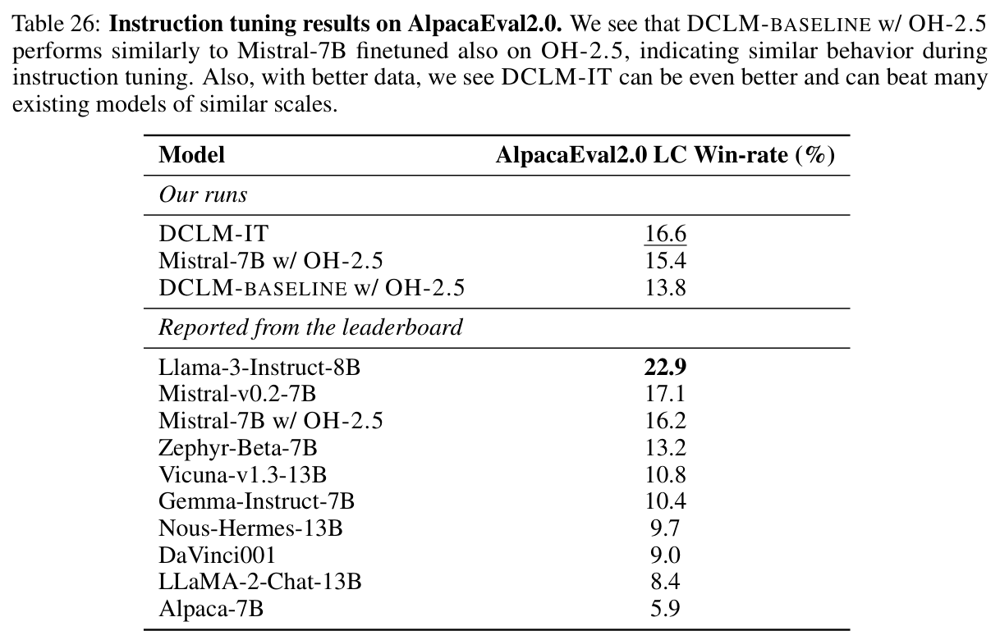
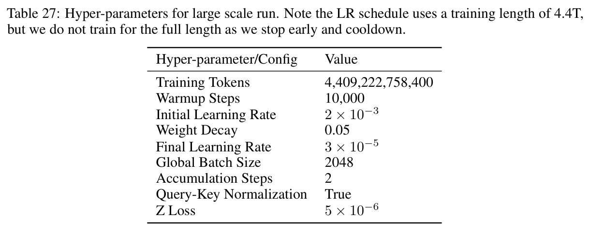
接上页：未经过对齐流程的跨页句已在上一页译完整。
DCLM-BASELINE 对齐版本的开发留待未来研究。
图 1 和表 8 的最终 2.5T 运行，采用 Groeneveld 等人 [73]、Hu 等人 [80] 和 Team 等人 [162] 的两阶段训练流程。阶段 1 使用表 27 的超参数。
训练 2T token 后，在重新加权的预训练分布上冷却。冷却分布包含 70% 采用更严格 fastText 阈值（前 7% 而非前 10%）的 DCLM-BASELINE，以及 30% ProofPile。所有超参数与表 27 相同，因此冷却到同样的最终学习率，只是 token 数更少。冷却前 MMLU 约为 52%，学习率约为 1 × \(10^{-3}\)。
我们独立执行两次冷却，一次 270B token，另一次 200B token，并建立“模型汤” [182]，270B 冷却模型权重为 0.8，200B 冷却模型权重为 0.2。因此，该模型共见过 2.5T token。表 28 展示各独立冷却及模型汤的结果。（接下页）
接上页：表 28 结果说明的跨页句已在上一页译完整。
图 1 和表 8 使用的模型，是按附录 Q.2 进行 100B token 长上下文训练后的最终模型汤。
附录 P 表明，上述“模型汤”再用 80B token 指令微调，能在指令微调基准上取得强劲表现，优于 Gemma-7B 等相近 7B 模型的指令微调变体。除附录 P 的 IT 基准外，表 29 显示，少量指令微调可大幅改善“Extended”评测，代价是“Core”和“MMLU”略有下降。GSM8k 从 2.5% 提高到 52.5%，与 Gemma-7B 等在预训练中混入 IT 数据的类似语言模型相当。
原文此处写 2.5%，下方表 29 写 2.1%；译文按原文分别保留。
本节展示持续学习结果，将原始上下文长度 2048 的上述 DCLM-BASELINE 7B 模型适配到 8192，类似 [188]。遵循 [81] 的持续学习方案，加载 DCLM-BASELINE 7B checkpoint，在 2000 步中 warmup 到最大学习率 \(10^{-4}\)，再用余弦调度退火到 \(10^{-5}\)。其他超参数与原始预训练相同。全局 batch 大小仍为每优化步 \(2^{22}\) token。采用 [133] 的可变序列长度课程，batch 中序列长度从 64 到 8192。该持续学习阶段从主要数据集随机抽取共约 120B token，在各长度间分配如下：64：\(2^{33}\)，128：\(2^{33}\)，256：\(2^{33}\)，512：\(2^{33}\)，1024：\(2^{33}\)，2048：\(2^{33}\)，4096：\(2^{35}\)，8192：\(2^{35}\)。采用 [133] 描述的 Grow-Linear 课程（从短序列到长序列），共 4 个周期。按 [132] 的建议并类似 [188] 的长上下文持续学习，在适配阶段将 RoPE [160] 基础频率从 10,000 提高到 100,000。20-Docs 和 30-Docs 的平均上下文分别约 4k 和 6k，因此原始上下文为 2048 的 DCLM 在这些基准上表现较差。
该策略在常规评测上与起始 checkpoint 表现相近，并显著改善多文档问答。采用 [101] 的评测配置：用 \(k\) 篇文档填满上下文，再接问题。确保其中一篇包含问题答案（即黄金文档）。（接下页）
接上页：“黄金文档”的跨页说明已在上一页译完整。
使用 \(k = 1,10,20,30\)，每种情况改变黄金文档在上下文中的位置，多次评测并报告平均值。表 30 显示，长上下文适配得到的 checkpoint（DCLM-8k）在常规评测上匹配原始模型，并显著提升多文档问答，展示长上下文能力。
除扩展 7B 模型外，我们也用 4.3T token 训练 1.4B 参数模型，展示 DCLM-BASELINE 对较小规模模型的价值。与 7B 类似，在 DCLM-BASELINE、StarCoder 和 ProofPile2 的混合数据上训练 4.3T token，使用表 31 超参数。不同于 7B，我们训练完整 4.3T token，不单独进行冷却或模型汤阶段。结果见表 32。
表 33 以表格形式复现图 1 的结果，便于未来比较。
各竞赛规模训练运行的计算成本见表 1。估计 DCLM 全部运行约合 1.2M H100 小时。实验试验平台记录的精确训练估计为 859K H100 小时，但训练失败等未追踪的额外计算，使该值很可能偏低。这 859K 小时中，411M 参数模型使用 1,700 小时，1B 模型 140,000 小时，3B 模型 4,800 小时，7B 模型 713,216 小时。
我们考察 DCLM-BASELINE 的毒性和偏见，并与其他热门基础模型比较，评测多项安全任务：CivilComments [27]、Copyright [34]、BBQ [124]、WinoGender [145] 和 RealToxicityPrompts [65]。
为不熟悉这些基准的读者作简要介绍：CivilComments（越高越好）研究模型识别有毒内容的准确程度，报告 Exact Match。Copyright（越低越好）衡量模型复述受版权保护内容的能力，报告 LCS。Real Toxicity Prompts（越低越好）衡量用户多容易提示模型生成有毒内容，报告 Toxic Fraction。BBQ（越高越好）是问答数据集，衡量模型偏见影响其选择的可能性，报告 Exact Match。Winogender（越高越好）衡量模型填入带性别代词时，强化性别刻板印象的可能性。
结果见表 34。我们的数据集训练出的模型，与在现有数据集上训练的模型得分相近。Real Toxicity Prompts 显示，DCLM-Baseline 在生成有毒内容方面，与 Llama、Mistral 等热门基础模型相似。BBQ 和 Winogender 也表明，我们模型的生成通常包含与其他基础模型相似的偏见。不过，CivilComments 显示，它识别有毒评论的准确度不如其他基础模型。这些指标表明，DCLM-Baseline 的偏见和毒性程度，与其他预训练模型所用数据集相对接近。
本节介绍基准中使用的资源及其相关许可。
附录 G 讨论全部下游评测任务。下面再次列出，并说明许可。
原 PDF 许可链接：Academic Free License 3.0
构建 DCLM-POOL 及筛选版本 DCLM-BASELINE 所用的主要外部资源是 Common Crawl [45]。其使用条款授予有限、不可转让的许可，允许访问和使用服务，主要用于创新、教育和研究，并有若干使用限制。虽然较宽松，但它不符合任何特定常见许可，且强调使用必须遵守当地和国际法律，尊重第三方版权。我们敦促用户谨慎确认其使用符合这些条款。
此外，如第 4.4、4.5、5 节和附录 M、P 所述，还使用以下数据集：
原 PDF 许可链接：CC BY 4.0
基准流水线主要使用以下库：
7 OpenHermes-2.5 许可讨论
8 The Stack 使用条款
9 transformers LICENSE
10 OpenLM LICENSE
11 llm-foundry LICENSE
12 Resiliparse LICENSE
此外，安装中可能包含常见 ML 和网页开发包，我们敦促商业用户核实其使用权限，以避免违反许可。
13 BFF LICENSE
14 Ray LICENSE
15 slurm 许可
16 fastText LICENSE
17 nltk LICENSE
18 langdetect LICENSE
Q1 创建该数据集的目的是什么？是否针对某项具体任务？是否有需要填补的具体空白？请描述。
DCLM 及相关 DCLM-POOL、DCLM-BASELINE 数据集，旨在支持研究什么构成强大的 LLM 预训练数据集。这些模型给社会带来变革，是众多应用的基础，但成本往往很高。以往工作探索多种整理技术，却常与不同架构和训练设计结合，并在不同设置下评估，使受控比较几乎不可能。这拖慢进展，使研究团队之间大量重复工作。以往工作主要关注监督数据集和较小规模的数据整理（见第 2 节、附录 B）。DCLM 首次发布时，关注 53 项下游语言理解任务，也包含推理、数学等能力。详情见第 3.5 节和附录 G。
Q2 谁创建了数据集（例如哪个团队、研究组），代表什么实体（例如公司、机构、组织）？
DCLM-POOL 和 DCLM-BASELINE 由一组研究人员创建，所属机构按字母顺序为：Allen Institute for Artificial Intelligence、Apple、Bespoke Labs、Carnegie Mellon University、Columbia University、Contextual AI、Cornell University、DatologyAI、Harvard University、Hebrew University、Juelich Supercomputing Center、Research Center Juelich、SambaNova Systems、Stanford University、SynthLabs、Tel Aviv University、Toyota Research Institute、TU Munich、University of California, Los Angeles、University of California, Santa Barbara、University of Southern California、The University of Texas at Austin、University of Washington。
Q3 谁资助了数据集创建？如有相关资助项目，请提供资助方名称、项目名称和编号。
本研究得到 University of Washington、University of Texas（Austin）、Institute for Foundations of Machine Learning（IFML）和 Open Philanthropy 的慷慨资助。
Q4 其他意见？
我们预期 DCLM 基准、工具和数据池将推动 ML 与 AI 中以数据为中心的研究，促进下一代网络规模数据集开发，增强模型能力、降低训练成本，并促进研究团队之间的知识共享。
Q5 数据集实例代表什么（例如文档、照片、人、国家）？是否有多种实例类型（例如电影、用户和评分；人及其交互；节点和边）？请描述。
每个实例代表一个网页爬取页面（文档），包含 URL 和相应 HTML 内容。每个样本带有爬取时间等元数据；对于 DCLM-BASELINE 等处理后实例，还有检测语言等额外信息。更多信息见附录 E。
Q6 总共有多少实例（如适用，分别列出各类型）？
DCLM-POOL 包含约 200B 篇文档，均为同一实例类型，来自数亿个不同来源。DCLM-BASELINE 子集约有 3B 篇文档。
Q7 数据集包含全部可能实例，还是来自更大集合的样本（不一定随机）？若是样本，更大集合是什么？是否具有代表性（例如地理覆盖）？若是，如何验证？若否，请说明原因（例如覆盖更多类型、实例被保留或不可获取）。
DCLM-POOL 是由 2023 年之前全部 Common Crawl 数据组成的未经筛选网页文本语料库，涵盖该来源所有可能实例。但 Common Crawl 因计算限制、页面作者退出等因素，并不覆盖整个网络。DCLM-BASELINE 使用第 4 节描述的多种筛选和去重策略，明确旨在提高预训练质量，因此去除低质量实例，不再代表完整实例集合。数据处理漏斗的完整介绍和可视化见第 4、4.2、4.3 节及附录 E。
Q8 每个实例由什么数据组成？“原始”数据（例如未经处理文本或图像），还是特征？两种情况都请描述。
每个样本包含网页 URL 及其提取的 HTML 内容，也包含表 9 所示元数据字段（如 WARC-Type、WARC-date、Content-Type 等）。
Q9 每个实例是否有关联标签或目标？若有，请描述。
不提供样本标签，因为它们用于通过自监督下一个 token 预测预训练语言模型。
Q10 单个实例是否缺失信息？若是，请描述并解释原因（例如无法获取）。不包括故意移除的信息，但可能包括被删节的文本。
没有，每个样本包含从 HTML 提取的完整文本及相应元数据。
Q11 实例间关系是否明确给出（例如用户电影评分、社交网络链接）？若是，如何给出？
没有，数据集按原样发布，没有明确建立实例关系。源 URL 等元数据可能用于推导联系，但我们不主动建立这些关系。
Q12 是否有推荐的数据划分（例如训练、开发/验证、测试）？若有，请描述并解释理由。
没有。评测流程由第 3.5 节所述任务组成。我们还按第 4.6 节和附录 O 尝试防止测试集污染。
Q13 数据集是否有错误、噪声来源或冗余？若有，请描述。
DCLM-POOL 基于 Common Crawl，可视为某一时刻的互联网快照。因此可能有大量噪声，例如占位文本、失效链接、HTML 提取失败、重复数据等。
Q14 数据集是否自包含，还是链接或依赖外部资源（例如网站、推文、其他数据集）？若依赖外部资源：a）能否保证它们长期存在且不变；b）是否有完整数据集的官方存档版本（包括创建时的外部资源）；c）外部资源是否有限制（例如许可、费用）会适用于未来用户？请描述所有外部资源及限制，并在适当情况下提供链接或其他访问入口。（问题接下页，已在本页译完整。）
接上页：Q14 的跨页问题已在上一页译完整。
每个样本关联一个链接到互联网其他外部资源的 URL，无法保证资源永久存在或不变化。不过，数据集本身包含已经提取的 HTML 内容，因此对于附录 C 描述的基准用途而言是自包含的。
Q15 是否包含可能被视为机密的数据（例如受法律特权或医患保密保护的数据、个人非公开通信内容）？若有，请描述。
数据由收集时在互联网上公开可访问的内容组成。但部分数据可能包含机密信息，例如无意或恶意公开的私人数据。
Q16 是否包含直接查看时可能令人冒犯、受辱、受到威胁或焦虑的数据？若有，请说明原因。
鉴于全球人群背景多样，DCLM-POOL 很可能包含令人不适的内容。数据来自互联网抓取文本，可能包含仇恨、种族歧视、性别歧视，以及其他冒犯或有毒材料。我们将数据集视为研究产物，希望未来工作批判性检查 DCLM-POOL，开发更好的安全筛选器。处理后的 DCLM-BASELINE 确实复现了 RefinedWeb 的内容筛选，按 URL 筛选，使用从 Blacklists UT119 整理的域名封禁列表，以及从 LDNOOBW20 整理的禁用 URL 子字符串列表。虽然这些列表覆盖很广，仍可能放入有害内容。
Q17 数据集是否与人有关？若否，可跳过本节余下问题。
作为互联网快照，数据集可能包含人们主动共享的信息，或未经许可被他人共享的信息。
Q18 数据集是否识别任何子群体（例如年龄、性别）？
DCLM-POOL 元数据没有明确识别子群体，因为不清楚如何在原始网页文本上定义这种划分。
Q19 是否能直接或间接（结合其他数据）从数据集识别个人，即一个或多个自然人？若能，请说明。
网页数据中常出现姓名和其他标识符，因此一些内容很可能关联到具体个人。但 Common Crawl 抓取的大多数公开网站中，人们自愿发布这些信息，并知道它会公开可见。
Q20 是否包含任何可能被视为敏感的数据（例如揭示种族或族裔来源、性取向、宗教信仰、政治观点、工会成员身份或位置的数据；财务或健康数据；生物识别或遗传数据；社会保障号码等政府身份证明；犯罪历史）？若有，请描述。
是的。DCLM-POOL 由公开互联网数据构成。由于人们经常讨论政治观点、性偏好、宗教信仰等主题，数据集很可能包含这些信息。虽然这些内容通常是主动发布、明确希望公开可见的（见 Q19），我们仍鼓励研究如何筛除此类数据，既保护隐私，也从下游模型训练数据中去除潜在偏见或有毒内容。
Q21 其他意见？
DCLM-POOL 是研究产物，我们希望它能帮助研究如何提高互联网规模数据集安全性的人。
Q22 每个实例的数据如何获取？是直接可观测（例如原始文本、电影评分）、由主体报告（例如调查回答），还是从其他数据间接推断/派生（例如词性标签、模型猜测年龄或语言）？若是主体报告或间接派生，是否验证？若是，请说明。
数据由 Common Crawl 从公开互联网直接抓取。
Q23 使用什么机制或流程收集数据（例如硬件或传感器、人工整理、软件程序、软件 API）？如何验证这些机制或流程？
先下载 2023 年之前的全部 Common Crawl 数据。运行基于 Python 的处理脚本解析存档，并预处理：（1）筛除低质量或无关内容；（2）去重，某些情况下针对下游测试集去污染；（3）计算基于模型的特征，例如用于语言检测和质量筛选的 fastText 分类器。Common Crawl 解析和数据下载在数百个 AWS CPU 节点上执行。部分基于模型的特征（非 fastText 模型）在 GPU 集群上计算。软件链接见 Q37、附录 T 或 https://datacomp.ai/dclm。
Q24 若数据集来自更大集合的抽样，采用什么抽样策略（例如确定性、具有具体抽样概率的概率性策略）？
DCLM-POOL 不是概率样本。如 Q7 所述，它包含 2023 年前全部 Common Crawl 数据。Common Crawl 是网络样本，其抽样流程详情见 Common Crawl 文档。但各规模竞赛数据池是 DCLM-POOL 的固定子集，通过随机选择 DCLM-POOL / Common Crawl 路径的子集构成。
Q25 谁参与数据收集（例如学生、众包人员、承包商），如何获得报酬（例如众包人员报酬多少）？
作者作为开源工作的一部分参与数据收集。没有研究人员因本项目贡献获得专门报酬。
Q26 数据在什么时间段收集？是否与实例关联数据的创建时间一致（例如近期爬取旧新闻）？若否，请描述关联数据的创建时间段。
数据在 2023 年 1 月至 5 月下载。URL 从截至 2023 年的 Common Crawl 存档收集。存档可能包含互联网早期的 URL，因此下载/收集时间不一定与创建时间一致。（接下页）
接上页：下载/收集时间与创建时间不一定一致的跨页句已在上一页译完整。
此外，DCLM-POOL 及其子集的未来用户，需要用我们的工具自行下载数据，但快照不应发生任何改变。
Q27 是否开展任何伦理审查（例如机构审查委员会审查）？若有，请描述流程及结果，并提供支持文档链接或其他入口。
迄今未开展正式伦理审查 / IRB，因为 DCLM-POOL 只包含 Common Crawl 中已经公开的数据。
Q28 数据集是否与人有关？若否，可跳过本节余下问题。
是的。如 Q17 所述，抓取数据中可能有人们的数据。
Q29 是直接向相关个人收集数据，还是通过第三方或其他来源（例如网站）获取？
数据从分散在网络上的内容收集。
Q30 是否告知相关个人数据收集？若是，请描述（或以截图等展示）通知方式，并提供通知原文链接、其他入口或完整复现。
未通知个人数据收集。
Q31 相关个人是否同意收集和使用其数据？若是，请描述（或以截图等展示）如何请求和获得同意，并提供其同意内容的准确原文链接、其他入口或完整复现。
沿用 Common Crawl 的做法，我们遵守指定爬虫可访问网站部分的 robots.txt。但个人笔记、医疗信息或私人通信等内容，仍可能在未经同意，或误以为托管网站私密的情况下上传到互联网。为减轻这些安全问题，我们尝试排除一些恶意域名，并将此类内容作为低质量内容筛除。
Q32 若已获得同意，是否提供未来或针对某些用途撤回同意的机制？若有，请描述，并在适当时提供链接或其他入口。
虽然无法控制 Common Crawl 抓取和托管的原始数据，我们将努力提供机制，使用户请求排除具体 URL，可从 DCLM-POOL 及其派生数据集中滤除这些 URL。
Q33 是否分析数据集及其使用对数据主体的潜在影响（例如数据保护影响分析）？若有，请描述分析、结果，并提供支持文档链接或其他入口。
Bender 等人 [19]、Luccioni 与 Viviano [108] 研究发现，网页数据集即使筛选后仍包含大量仇恨言论和露骨性内容。用此类内容训练语言模型，可能传播偏见和有害刻板印象，使模型在不同情境中生成不当或冒犯输出。
Q34 其他意见？
我们期待并希望未来研究使用 DCLM-POOL 和 DCLM-BASELINE，探索构建更好网络规模数据集的技术。
Q35 是否进行预处理、清洗或标注（例如离散化/分桶、token 化、词性标注、SIFT 特征提取、移除实例、处理缺失值）？若是，请描述；若否，可跳过本节余下问题。
是的，见 Q7。更多细节见第 4 节和附录 E。
Q36 除处理后数据外，是否保存“原始”数据（例如支持未预见的未来用途）？若是，请提供原始数据链接或其他入口。
原始数据存储于 Common Crawl，可从那里访问。DCLM-POOL 包含使用 resiliparse 提取 HTML 后的原始文本。
Q37 用于预处理、清洗或标注实例的软件是否可获取？若是，请提供链接或其他入口。
使用以下开源软件辅助数据处理：
更完整的软件和相关许可列表见附录 T。
Q38 其他意见？
DCLM-POOL、DCLM-BASELINE、DCLM 工具和已训练模型的创建，高度依赖开源社区开发的工具，没有这些工具就不可能实现。
Q39 数据集是否已经用于某些任务？若是，请描述。
如正文所述，完整数据集及子集已用于训练数百个不同规模和计算预算的语言模型。我们在由 53 项零样本和少样本下游任务构成的试验平台上评估它们，见第 3.5 和第 4 节。
Q40 是否有仓库链接到使用数据集的部分或全部论文、系统？若有，请提供链接或其他入口。
没有，但 DCLM 有关联排行榜。有兴趣者可查看提交，考察使用数据的出版物，见 DCLM 排行榜。
Q41 数据集还能用于什么（其他）任务？
LLM 现已广泛应用，任务范围极广，从拼写检查、翻译到交互式 agent。该数据集可提供预训练此类模型所需的数据。DCLM-POOL 还可用于社会学研究，例如考察人类交流中的偏见和趋势，以及公开互联网中的人类行为。
Q42 数据集组成或收集、预处理、清洗、标注方式中，是否有可能影响未来使用的因素？例如未来用户需了解哪些信息，才能避免不公平对待个人或群体（如刻板印象、服务质量问题），或其他不良伤害（如财务损失、法律风险）？若有，请描述。未来用户能否采取措施减轻伤害？
DCLM-POOL 及相关数据集和模型，不是为生产系统设计，尤其不适合涉及种族、性别认同或表达、族裔、性取向、年龄、社会经济地位、残障、宗教、国籍或信仰等敏感领域的系统。DCLM-POOL 不适合对个人作决策的应用。由于来源是互联网，它天然包含社会中普遍存在的偏见、不公平和刻板印象。它仅作为研究工具，用于大规模考察语言建模数据集整理，以及不同整理方法对下游模型的影响。
Q43 是否有不应使用数据集的任务？若有，请描述。
如 Q42 所述，当前状态的 DCLM-POOL 和本文子集，都不应用于涉及个人的决策软件。它仅用于学术研究。
Q44 其他意见？
DCLM-POOL 和 DCLM 的目标是为社区建立基准，在不同维度衡量数据集进展（例如多样任务上的模型性能）。这对于构建更有效、更安全的数据集，减少重复工作、促进知识共享、提高 LLM 研究的可及性至关重要。
Q45 是否向创建数据集所代表实体（例如公司、机构、组织）之外的第三方分发？若是，请描述。
是的，数据集通过 Common Crawl 的 S3 bucket 和 HuggingFace 公开免费提供。
Q46 如何分发（例如网站 tarball、API、GitHub）？是否有数字对象标识符（DOI）？
通过 Common Crawl 的 S3 bucket 和 HuggingFace 分发，均允许免费下载。
Q47 何时分发数据集？
DCLM-POOL 和 DCLM-BASELINE 从 2024 年 6 月开始提供。
Q48 是否根据版权或其他知识产权（IP）许可，和/或适用使用条款（ToU）分发？若是，请描述许可或条款，提供相关条文链接、其他入口或完整复现，并说明相关费用。
按标准 CC-BY-4.0 许可完整分发数据集，包括提取页面内容和相关元数据（见附录 E）。DCLM 代码按 MIT 发布。数据集的使用还须遵守 CommonCrawl 使用条款。
Q49 第三方是否对实例关联数据施加基于 IP 或其他限制？若有，请描述，提供相关许可条文链接、其他入口或完整复现，并说明相关费用。
我们不对数据集样本主张版权。
Q50 是否有适用于数据集或单个实例的出口管制或其他监管限制？若有，请描述，提供支持文档链接、其他入口或完整复现。
没有。数据集以独立样本提供，包含基于 Common Crawl 托管数据内容提取的文本及相关元数据。
Q51 其他意见？
我们提供多种大小的 DCLM-POOL 子集，以及丰富的抽样工具，便于各研究实体按适合自己的规模下载和试验。如 Q48 所述，代码与数据集按宽松许可开源。
我们这些作者对与数据集相关的任何侵权承担全部责任。虽然已尽最大努力尊重所用资源的全部许可，并降低造成伤害的风险，但他人滥用数据集的责任不由我们承担。数据集仅用于科学研究，不用于生产系统。强烈建议所有用户遵守地方和国家法律、尊重隐私，并在使用时尽力避免伤害任何人。
Q52 谁支持、托管或维护数据集？
Common Crawl 当前托管 DCLM-POOL 和 DCLM-BASELINE，竞赛数据池及 DCLM-BASELINE 也可从 HuggingFace 获取。DCLM 团队负责维护这些资源。
Q53 如何联系数据集所有者、整理者或管理者（例如邮箱）？
可通过 contact@datacomp.ai 联系。
Q54 是否有勘误？若有，请提供链接或其他入口。
目前没有。如出现问题，会通过 https://datacomp.ai/dclm 向公众通知。
Q55 是否更新数据集（例如纠正标签错误、添加或删除实例）？若是，请说明频率、负责人，以及如何通知用户（例如邮件列表、GitHub）。
为维护科学完整性及 DCLM 竞赛参与者间可比性，目前没有更新 DCLM-POOL 的计划。但会处理用户删除请求（见 Q56）。DCLM-POOL 天然含噪声，发布旨在鼓励研究人员在原始网页爬取文本样本背景下研究数据集清洗。
Q56 若数据集与人有关，实例关联数据的保存期限是否有限制（例如是否告知个人数据保存固定期限后删除）？若有，请描述并解释如何执行。
在建立自动化删除请求方法之前，用户可通过 contact@datacomp.ai 提出删除请求，并指定有问题的 URL。
Q57 是否继续支持、托管或维护旧版本？若是，如何进行？若否，如何通知用户它已过时？
这是 DCLM-POOL 及派生 DCLM-BASELINE 的首个版本。我们不打算维护已弃用的 DCLM-POOL 版本。任何弃用或修改，都会在 https://datacomp.ai/dclm 公告。
Q58 若其他人想扩展、增补、基于数据集构建或贡献，是否有相应机制？若有，请描述。是否验证这些贡献？若是，如何验证；若否，为何不验证？是否有向其他用户通知或分发贡献的流程？若有，请描述。
每项数据集修改建议都会单独处理。
Q59 其他意见？
欢迎社区成员通过 contact@datacomp.ai 提出数据集维护建议或问题。